| 魔法科高校の劣等生SS (電撃文庫) | |
| 佐島 勤 | |
| (2016) | |
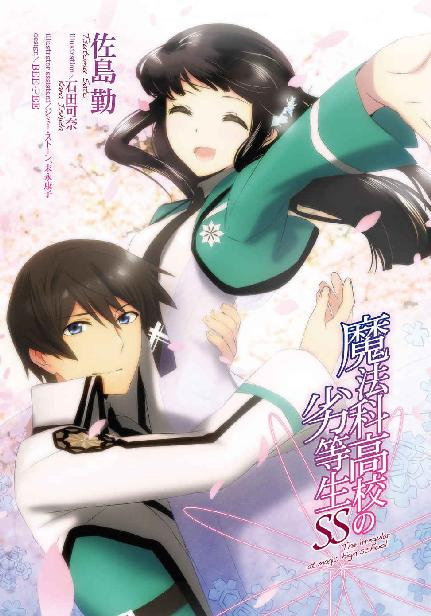
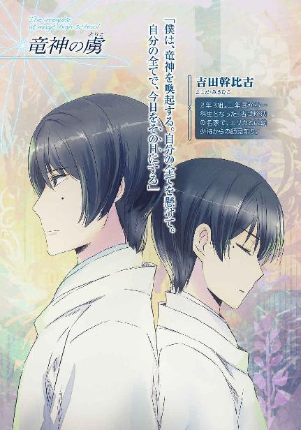
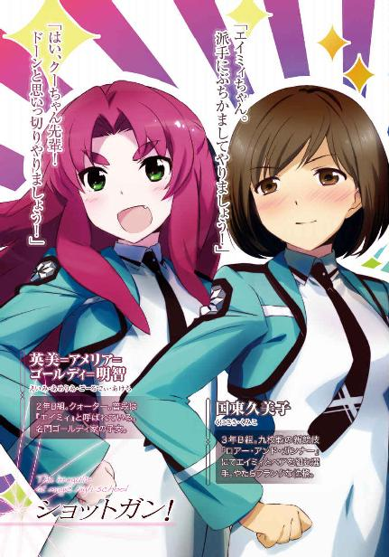
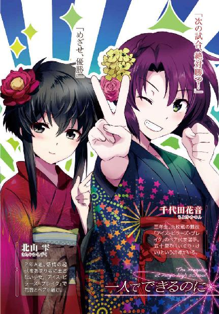
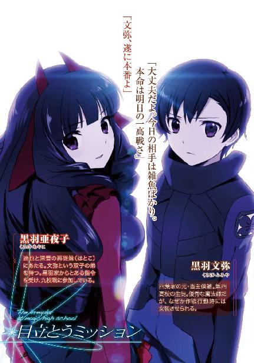
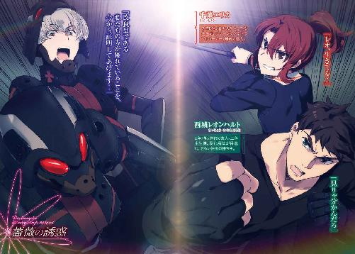
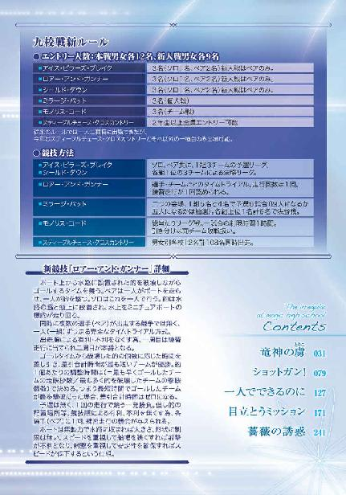
本書（電子版）に掲載されているコンテンツ（ソフトウェア／プログラム／データ／情報を含む）の著作権およびその他の権利は、すべて株式会社ＫＡＤＯＫＡＷＡおよび正当な権利を有する第三者に帰属しています。
法律の定めがある場合または権利者の明示的な承諾がある場合を除き、これらのコンテンツを複製・転載、改変・編集、翻案・翻訳、放送・出版、公衆送信（送信可能化を含む）・再配信、販売・頒布、貸与等に使用することはできません。
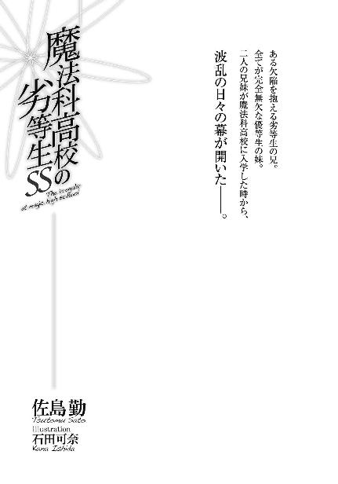
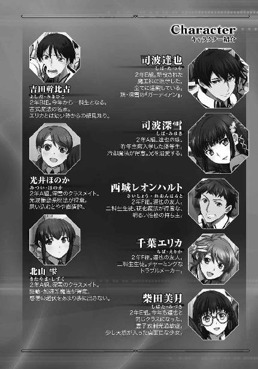
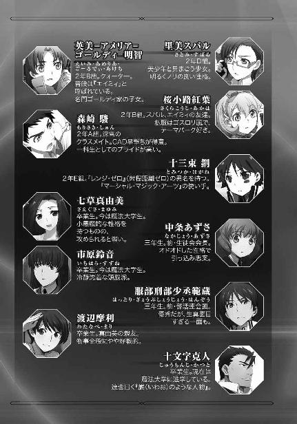
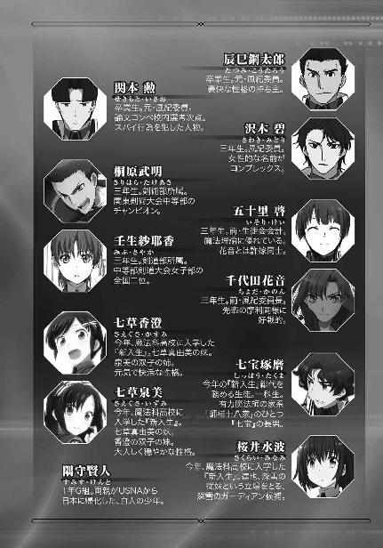
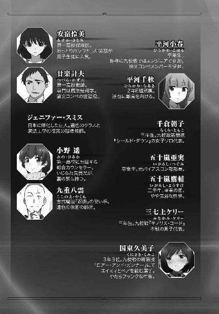
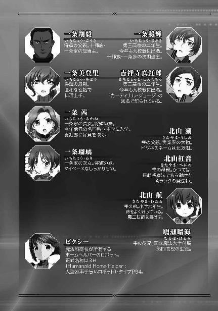
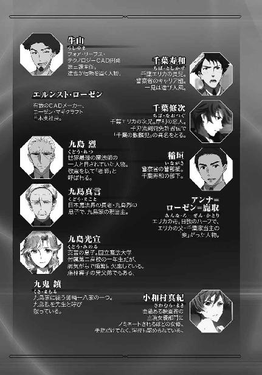
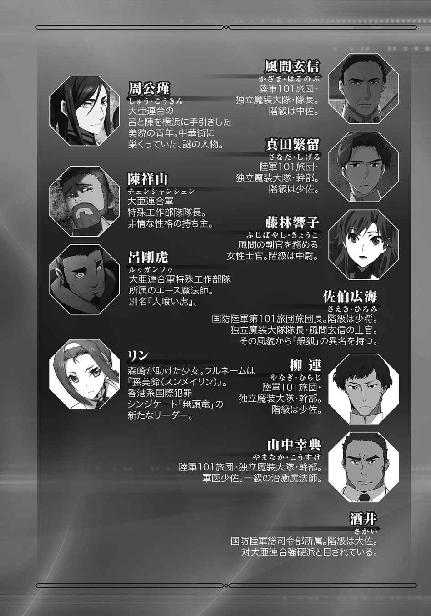
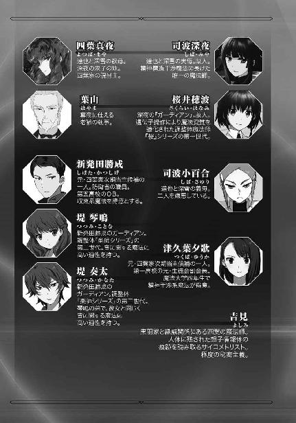
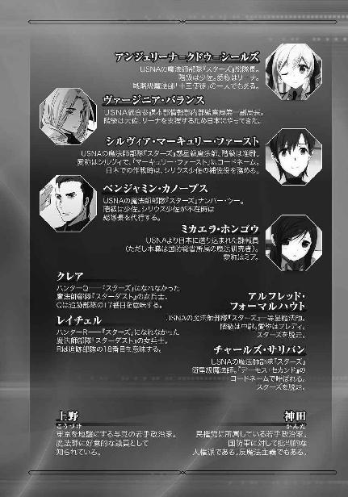
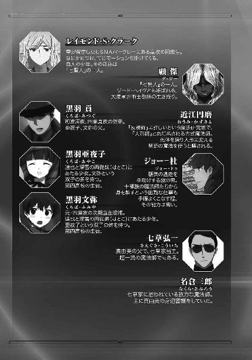
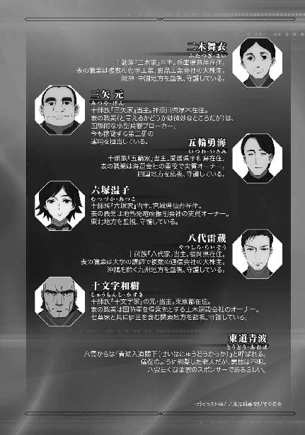
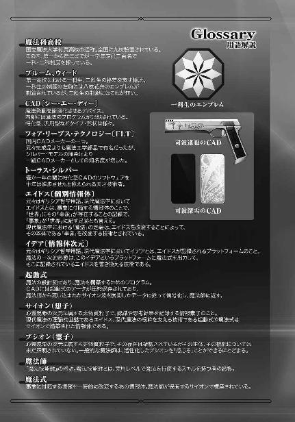
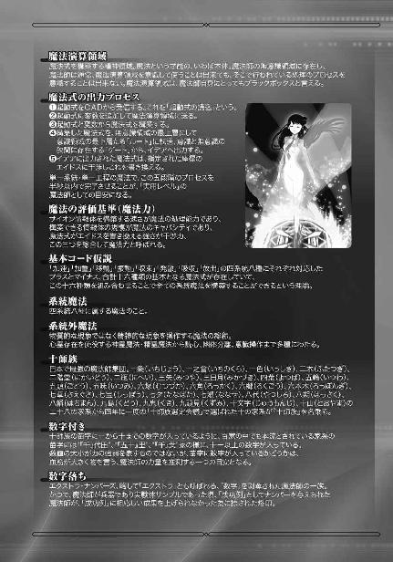
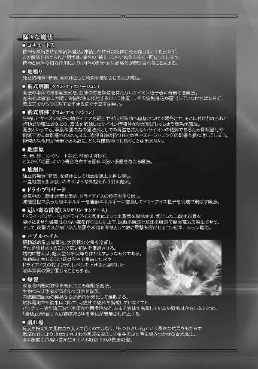
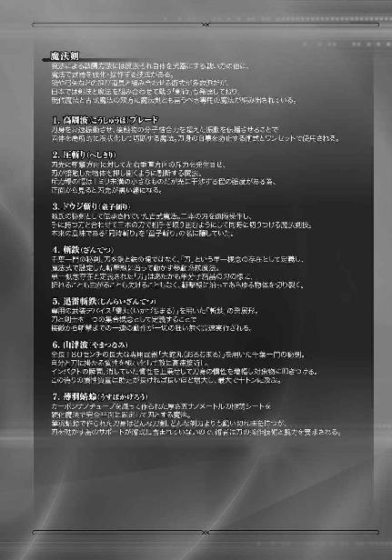
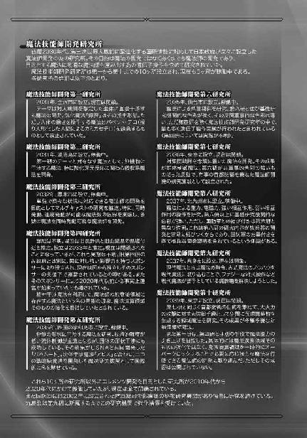
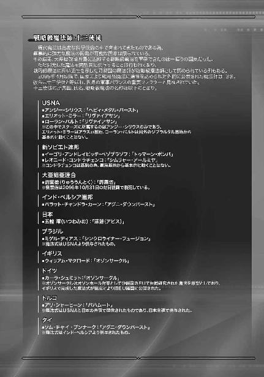
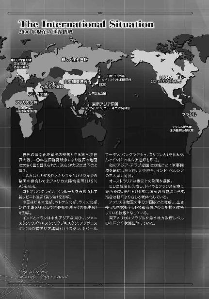
二〇九六年七月二日、第一高校生徒会を震撼させるニュースが飛び込む。九校戦──「全国魔法科高校親善魔法競技大会」競技種目の大幅な変更の通知である。選手にとってリスクの高い、軍事色の強い種目の導入は、魔法師が活躍した横浜事変の影響を受けたものだった。
しかしその裏で、魔法兵器開発に関わる陰謀が進行する。正体不明の電子メールによりそれを知った達也は、調査を進めていく内にパラサイトを使った禁断の人型兵器「パラサイドール」と、九校戦の新競技「スティープルチェース・クロスカントリー」を舞台にしたパラサイドールの運用試験計画の存在を知る。
試験計画は「スティープルチェース・クロスカントリー」に参加する魔法科高校生を新兵器の実験台にする危険で非人道的なものだった。達也は第一高校の技術スタッフとして九校戦に参加する傍ら、これを阻止すべく行動を起こす。
様々な思惑と陰謀の交錯する中、「スティープルチェース・クロスカントリー」が行われている富士の人工樹海の中で、達也はパラサイドール十六体と対決し、何度も傷を負いながらこれを撃破した。
しかし二〇九六年八月、富士の裾野で繰り広げられていた戦いはこれだけではなかった。その謀略と闘争の表側では、今年も九校戦優勝の栄冠を目指す魔法科高校生たちの、魔法を駆使した熱戦が繰り広げられていた。そして、それ以外にも......。
ここに、魔法科高校生たちの戦いの記録、その一端をご紹介したい。
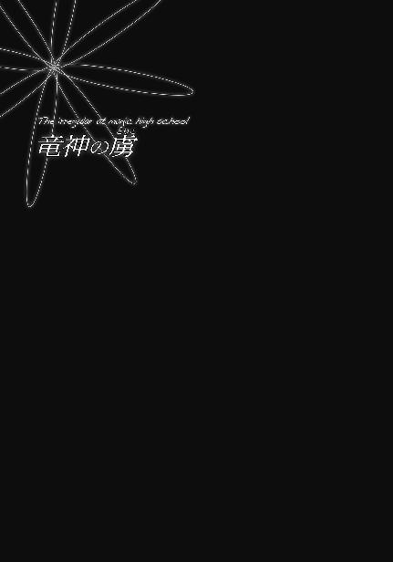
［二〇九六年八月十三日］
二〇九六年度九校戦、九日目の夜。一高の夕食会場は前日までの切迫感漂うムードとは打って変わり、意気軒昂たる空気に包まれていた。
「光井さん、優勝おめでとう」
「里見さんも準優勝だなんてすごいわ」
「本当。ワンツー・フィニッシュだなんて、去年の新人戦の再現ね！」
ほのかとスバルが三年生女子に囲まれて賑やかな祝福を受けている。
「中条さんもお疲れさま。さすがだね。里見さんの特長を活かした見事な調整だった」
「ありがとうございます、五十里くん。結局、司波くんには負けちゃいましたけど」
「同じチームだから良いんじゃない？ それにあれはちょっと別よ」
あずさが五十里と花音に祝福され、励まされている。
「司波、御苦労だったな」
「相変わらず見事な腕だったぜ」
服部が何となく硬い態度で達也を労っている隣で、桐原が（おそらく友人の態度を）笑いながら達也を慰労している。
彼女たち当事者だけでなく、ほとんどのテーブルが今日の試合に関する話で熱く盛り上がっている。この少々浮ついた雰囲気もその背景を考えれば無理のないことだった。
九校戦、四日目が終了した時点で一高の成績は三百九十点で二位。一位の三高との差、六十点。
昨日の時点で、一高のポイント五百七十五点に対して三高が五百八十点。
そして今日、大会九日目が終了した時点で、三高六百点に対して一高のポイントは六百五十五点。大会二日目以降ずっと後塵を拝してきた三高を逆転して、遂にトップに立ったのだ。
前評判でも「最強世代」が卒業して、一高は苦戦するのではないかと予想されていた。そして実際、ずっと苦しい戦いが続いていたのだ。多少、躁状態になるのも当然かもしれない。
「服部、安心するのはまだ早いぞ。俺たちは明日が本番なんだからな」
三年生の三七上ケリーが服部の背後から声を掛けた。服部の隣に座っていた達也がトレーを持って席を立つと、ケリーは「すまんな」と言ってその席に腰を下ろす。
「吉田も座れ」
ケリーの隣、服部と反対側の席に座っていた沢木は、新人戦で活躍した一年生を労いに行っている。幹比古はケリーに呼ばれ、大人しく指図された席に着いた。
「俺たちがこけたら、せっかく女子が逆転してくれたのが水の泡だ」
「分かっているさ。明日もこのまま、全て勝つ。そして一高の総合優勝を俺たちの手で決定づける」
明日のモノリス・コードで優勝しても、現在総合二位の三高が準優勝すれば点差は九十五点。今年のルールでは、最終競技スティープルチェース・クロスカントリーの順位次第で逆転可能な点数だが、事実上優勝が決まる点差でもある。
そしてモノリス・コードのリーグ戦全十回戦の半数、五回戦終了時点で一高と三高は共に四勝零敗。試合が無かったのは一回戦ずつ。全くの互角だ。
「ああ。明日はいよいよ、三高との直接対決が控えている。何が何でも勝つぞ」
服部の力強い言葉を受けて、ケリーも必勝を宣言する。そして、幹比古の方へ振り返った。
「吉田、今日の調子で頼むぞ」
「頑張ります」
幹比古は急に話を振られても慌てることなく、しっかりと答えを返した。必勝の意気込みが表情に表れているのは、幹比古も上級生二人と同じだった。
◇ ◇ ◇
ＣＡＤに想子を流し込む。それをＣＡＤの中枢部品である感応石のエイドスが、本体を通過する電気信号に対応する想子信号に変換する。こうして出力された起動式を、肉体を介して魔法演算領域へ送り込む。
「......うん、大丈夫。いつもながら見事な調整だね、達也」
「それが俺の仕事だ」
幹比古の称賛に達也は素っ気なく答えた。
達也の態度がポーズでないことを幹比古は知っている。彼は自分の仕事に誇りを持っているが故に、自分の仕事を徒に誇らない。それに、彼にとってこれは数ある特技の一つ。達也の本領はもっと根本的な魔法のシステム構築であり、ＣＡＤの調整はその為の一技術にすぎない。
「本当は幹比古がいつも使っている補助具と同じインターフェイスが使えれば良かったんだがな。多少使い勝手が違うのは我慢してくれ」
「いや、十分だよ。いつも使い慣れているＣＡＤより数段スペックの劣る物を使わなきゃならない他校の生徒に比べれば、僕は恵まれている」
これは強がりではなかった。前の冬から使い始めた扇形の法具。金属製の呪符を扇子の形に纏め、要の部分から伸びた、刻印魔法に使用される感応性合金のコードで前腕部に巻いた想子波発振器へとつなげた、呪符とＣＡＤのハイブリッドとも言うべき術式補助具だ。
呪符に描かれた象徴に従って精霊に対するコマンド＝魔法式を自力で組み上げ、それを呪符に投射して精霊を使役するのが従来の呪符を使った魔法発動の仕組みである。
それに対してこの補助具は、呪符に刻印されたパターンから発せられる、起動式に相当する信号をコードで発振器に送り込み、発振器から皮膚を通して想子波を受け取り魔法演算領域に送り込む。そうすることで精霊に対するコマンドを半自動的に構築し、そこから先は通常の手順と同じように呪符へ投射する。これによって、ＣＡＤを使った魔法とほぼ遜色のないスピードで、慣れた呪符による魔法を使えるようにした物だった。
残念ながら、九校戦のレギュレーションでは呪符から想子信号を取り出す部分が引っ掛かってしまう。カード型の単一起動式特化型ＣＡＤを束ねるというアイデアもあったが、これも薄型化する為の部品がレギュレーションに抵触する。結局調整は市販のＣＡＤのプログラムを書き換えることだけしかできなかった。
達也はこの結果に不満を持っている。だが幹比古は、これで十分だと感じていた。去年の新人戦に急遽ピンチヒッターで出場した時も達也が調整したＣＡＤを使ったが、あれは所詮間に合わせにすぎなかったと嫌でも理解させられてしまう。去年もエンジニアの腕一つでこんなに使い易さが変わるのかと思ったが、今年は更に別物だった。ずっと楽に、ストレス無く魔法が発動できる。
「これで文句を言ったら罰が当たる。ここから先はエンジニアではなく選手の責任、僕が頑張るべき領分だ」
「おっ。ミキ、随分気合いの入ったセリフじゃない」
いきなり割り込んできた声に、達也と幹比古が調整作業用車輌の入り口を見る。キャンピングカーを流用した作業車の入り口から、エリカが顔をのぞかせていた。
「エリカ、どうした？」
「うん、想子波の放出が途切れたから、作業が一段落したんじゃないかと思ってさ。お茶にしない？ みんな待ってるよ」
「呼びに来てくれたのか」
「そんな大したことじゃないけどね。この車の横にいるんだし」
エリカと言葉を交わしていた達也が幹比古に顔を向ける。
「幹比古、どうする？ お前が必要な作業はもう終わったから部屋に戻って休んでも構わないが？」
「いや、みんなと一服していくよ。その方がぐっすり眠れそうだしね」
「りょーかい」
エリカが顔を車外へ引っ込める。達也と幹比古がその後に続いた。
車を降りてすぐの所に組み立て式のテーブルが広げられ、折り畳み式の椅子が置かれていた。頭上には作業車のルーフから伸びたオーニングテント。ちょっとしたキャンプ風景だ。
二人の席は既に用意されていた。達也の隣は幹比古と深雪、幹比古の隣は達也と美月だ。
「お兄様、遅くまでお疲れさまです」
深雪が達也のカップにコーヒーを注ぎ、
「あの、吉田君。どうぞ」
幹比古の湯飲みに美月が緑茶を注ぐ。
「あっ、わざわざ別に用意してくれたんだ。ありがとう、柴田さん」
幹比古の言ったとおり、緑茶が置かれているのは幹比古の前だけだった。
「お茶を用意したのはピクシーなんだけどね」
「吉田くん、美月しか見えてないんじゃないかな」
テーブルは二つ出ていた。一つのテーブルでは座りきれない人数がこのお茶会に参加しているからだ。そしてその声は隣のテーブルから聞こえてきた。
「スバル！ エイミィも、意地の悪いこと言っちゃダメよ！」
「ほのか。二人は羨ましいんだよ」
「ちゃ、ちゃうわい！ 羨ましくなんかにゃーもん！」
「エイミィ、落ち着きなって......。何処の人だか分からなくなってるよ」
「というか、何処で覚えたの？ その方言」
「方言、なのかなぁ......」
隣から聞こえてくる混沌とした会話に、幹比古は顔を赤らめながらも笑みを浮かべた。
「何だ、幹比古。ちゃんとリラックスしてるじゃねえか。もっと入れ込んでるかと思ってたぜ」
テーブルの向かい側からレオが掛けた言葉に、幹比古は笑いながら首を左右に振った。
「リラックスなんてしてないよ。何て言うかな、自然に闘志が湧き上がってくるんだ。何も考えなくても『絶対に勝つ』という気持ちになっているんだ」
「へぇ......ミキ、とても良い状態に仕上がっているね」
幹比古の言葉を聞いて、エリカが本気の感嘆を漏らす。
「そういう境地には滅多になれないわよ。本当の意味で心気が充実していなければ、そうはなれない。これなら明日も期待できそうね」
「ああ。必ず勝つさ」
そうは言いながら、幹比古の中にもプレッシャーはある。だが勝負の場に立つことすらできなかったあの日々を思えば、それすらも心地良い。
（そうだ。僕はもう二度と、こんな充実した気持ちにはなれないと思っていた。あの日、あの出来事さえなければ......僕はずっと、そう思っていた......）
今なら分かる。あれは、事故ですらなかった。あれは何時か必ず遭遇して、自分が乗り越えなければならなかった試練だったのだと、今では思えるようになっていた。
魔法科高校入学試験の半年前のあの日の出来事で、自分は魔法を思いどおりに使えなくなった。不合格にこそならなかったものの、自分は八枚花弁のエンブレムを得ることができず、雑草に甘んじなければならなかった。そんな自分が、惨めだった。
だがそれは、天の配剤だった。二科生だったからこそ、自分はこの仲間たちと親しくなれた。彼と友誼を結ぶことができた。
それは望外の幸運。エンブレムなどより遥かに価値のある出会い。それは全て、あの日から用意されていたことだと、今なら信じられる。ずっと悔いてきたあの日の挑戦が間違っていなかったと、今なら自信を持って言える気がする。
西暦二〇九四年八月十七日。旧暦七月七日、七夕の夜。その日の記憶を、幹比古は深い感慨と共に嚙み締める──。
［二〇九四年八月十七日］
西暦二〇九四年八月十七日。旧暦七月七日。太陰暦七夕の夜、吉田家では毎年、重要な儀式が行われる。
儀式の名は「星降ろしの儀」。正統的な宗教から足を踏み外し、伝統的な宗教者からは「邪教の徒」と誹られることもある吉田家が、神道から取り入れた「降神」の技術のみを利用し、「国」レベルの大規模な気象操作が可能な神霊──大規模独立情報体（孤立情報体とも言う）を喚起する技を競う儀式である。ここで言う「国」とは府県制導入前の「令制国」のこと。広域行政区導入前の県にほぼ該当する広さの領域を指している。そして「喚起」とは精霊、神霊、妖精──フェアリーではなく妖怪・妖魔を生み出す精気──を呼び出して活性化すること。つまりは神霊にアクセスし、これをアクティベイトする魔法の優劣を争う、吉田一門の競技会だ。（なお神道における「帰神」は召喚魔法に該当し「降神」が喚起魔法に該当する）
古くはこの儀式で最も優れた技を示した者が家督継承者に選ばれていた。その所為で儀式が血なまぐさいものになってしまった時期があり、その反省を踏まえて今では基本的に吉田家の長男が当主を相続すると定められている。
しかし次期当主選びと切り離された現代においても、一門で最も優れた術者を決めるという重要な意味を持っている。それに、「星降ろしの儀」で弟や従兄弟が長男より格段に優れた技を示し続けた場合は、その者に継承権を譲るのが長男の徳とされる不文律もある。現に今の当主、つまり幹比古たち兄弟の父親は四人兄弟の次男だった。
今のところ、吉田家の次期当主は幹比古の兄の元比古と定められている。彼の弟は幹比古のみで姉も妹もいない。しかし従兄弟は男子だけで九人いる。兄弟二人というのがむしろ例外的に少ないのであって、血統を重視する古式魔法師は一般に兄弟姉妹の人数が多い。特に現当主の兄の息子たちは次期当主の座を元比古から奪い取るべく、毎年激しい闘志を秘めてこの儀式に参加していた。
もっとも彼らの年代で、去年までに元比古の地位を脅かしそうな喚起魔法の技術を示したのはただ一人、元比古の実弟の幹比古のみである。「吉田家の神童」と呼ばれている幹比古は、神祇魔法（吉田家では精霊魔法をそう呼ぶ）の基礎であり根幹である喚起魔法の技術において既に兄を凌駕し、当主の技に迫っていると噂されていた。現に去年の儀式で当主に次ぐ二番目の技量を示したと認められたのは幹比古だった。
幹比古には兄に代わって当主になりたいという欲は無い。彼は控えめな性格の少年で、指導者には不向きな気性だった。本人もそれは自覚していて、当主はあくまで兄の元比古がなるべきだと考えていた。
彼の欲は、野心は、もっと別の所にあった。
──全ての自然精霊の頂点に立つ神霊「竜神」。これを使役する術を自分の手で完成させる。
それが幹比古の野望だった。それは吉田家代々の悲願でもあった。
吉田家の祖先は雨乞いの祈禱師だったと伝えられている。かの高名な神道の名門「吉田」氏ではなく、何処の村にも一人はいるような呪い師。ただ一つ違っていたのは、吉田家の祖先は本物の力を持っていた。勘が人より鋭い程度、風や雲を読み天気予報が上手い程度ではなく、本当に雲を呼び雨を降らせる力を持っていた。
だがそれは、小さな力だった。祖先の持っていた力は風に流される雲を集めて、本来であれば雨を降らせることなく散っていった雲を雨雲に変える程度。空気が乾燥しきった、長期にわたる日照りに対しては為す術がなかった。祖先が住んでいた村は、結局旱魃で滅びた。村人はそれまでの恩を忘れ、祖先を恨みながら散り散りに流れていった。
以来、その祈禱師の子孫たちは、受け継いだ血に宿る力で旱魃に対抗する術を、模索し続けてきた。
川をせき止め、池を作る。
地下水の流れを変え、本来井戸にならない所に井戸を作る。
より大規模な風を操り、遠くから雲を呼ぶ。
その試行錯誤の中で、吉田家は一つの結論に達した。
──結局は、水そのものが無いとどんな術も役に立たない。
旱魃を克服する為には、水を呼ぶ必要がある。では、何処から水を持ってくれば良いのか？
どんなに日照りが続いても、常に水を湛えている所は何処にある？
そこまで考えれば、答えを得るのは難しくなかった。
──海だ。
彼らは「水の大循環」に独力でたどり着いた。
日本において、海神と言えば竜である。それは仏教伝来以後の概念だが、起源の在処は全く重要ではなかった。海神にして水神。竜宮にあって海を支配し、雲に乗って天に昇り、風を呼んで雨を降らせる「竜神」。それは吉田家が追い求めた降雨の理そのものだった。
吉田家の先祖は竜を祀る社を巡り、仙人が竜を御した術を学ぶ為に陰陽道と修験道に教えを請い、竜を守護神とする仏門を叩いた。彼らは宗教的な徳や智慧には目もくれず、ただ竜へ、神へ至る道を追い続けた。やがて旱魃を克服するという当初の目的は二の次となり、竜神へ至る術法を見出すことそのものが目的となった。その結果として、古式魔法の名門とまで言われるようになった今の吉田家がある。
今の吉田家の教義では、自然現象の化身たる精霊の最上位に竜神を置いている。他の精霊を使役する術、大規模精霊＝神霊に干渉する術は全て最上位精霊たる神、竜神へ至る術法の足掛かりと捉えられている。
いずれその「神へ至る術法」を自分の手で編み出す。それが幹比古の望みであり、この夢の前には家督など些細なもの、むしろ術理の解明に当てるべき時間を家の経営に割かなければならない邪魔な地位と見做していた。
故に、兄への対抗心があったとすれば、それはこの「星降ろしの儀」でどれほど上位の神霊を喚起するのか、その一点だった。元比古の演術は最後から三番目、幹比古の直前。これは去年の「星降ろしの儀」の実績を反映して決められた順番だった。
元比古が祭壇に上がる。
幹比古はその姿を一心に見詰めていた。
彼ら兄弟の仲は悪くない。年が離れている所為で──元比古は幹比古の七歳年上だ──兄弟喧嘩をしたことがない代わりに仲良く遊んだという経験もなかったが、幹比古は年長者として兄を敬い、元比古は優れた才能を持つ弟を周囲の嫉妬から守っていた。
幼い頃、元比古は幹比古の先生だった。
幹比古の才が元比古の技を上回り始めた頃には、幹比古は一人で修行することを好むようになっていた。彼は無意識に、自分と兄の才能が比較されるのを避けていた。兄の才が自分に劣るという声を聞くのを嫌った。
だが、この儀式だけはそうもいかない。
自分こそが「神へ至る術法」に相応しいのだと示さなければならない。
だからその最大のライバルとなる兄の魔法を、固唾を吞んで見守っていた。
兄が祭壇に置かれた鏡を仰ぎ見る。祭祀場の南奥に作られた祭壇の鏡は、北極星を映すように調節されていた。
（呪符じゃない？）
兄が鏡へ差し伸べた物を見て、幹比古は意外感に打たれた。
元比古が手にしているのは、榊の枝、玉串だった。
吉田家の魔法は神道の思想を基盤にしているが、技術面は陰陽道の影響が強い。
だが元比古が行おうとしている儀式は神道の形式をなぞっているように見える。神道の儀式そのものではなく、その形を借りて神霊の喚起を行おうとしている。
（木綿四手か......？）
捧げ持つ榊に結びつけられた四手が紙製ではなく今は使われることのほとんどなくなった木綿であることを幹比古は直感的に覚った。そしてこの木綿四手が折り曲げられて作られているのでなく、貼り合わせて作られていることも。
（木綿で呪符を作り、それを貼り合わせて四手にしている......？）
それは、あらゆる宗派の秘術のみを節操なく取り込んだ吉田家の魔法に相応しい術具だと幹比古には思われた。そう感じたのは彼だけでなく、儀式を見守る一族の間から幾つかの感嘆が漏れる。彼らもまた、幹比古同様元比古が何を使っているのか、それに気づいたのだった。
元比古が玉串を捧げ持ったまま、それを神前に捧げるのではなく鏡に映った北極星──北辰に捧げる。北極星は天帝の星であり同時に「辰」は竜を意味する。
呪文や祝詞はない。息吹すらも発しない。ただ「力」を──霊力と言い法力と言い、あるいは魔力と呼ばれる心の力を、吉田家では単に「力」と称する──この日の為に準備した術具へ注ぎ込んでいく。
（......つながった？）
幹比古は確かに、兄が「何か」とつながったのを感じた。
人間の意識よりも遥かに巨大な、何か。
元比古の顔が過度の精神集中により蒼白となっている。かつて接触したことのない巨大な神霊を喚起する為、必死に接触を保ち、強めているのだ。
風が吹いた。
元比古の祭服も髪も捧げ持つ玉串も、そよとも揺れていない。それは幹比古も、幹比古の父も、祭壇を見守る一族全員が同じだった。
物理的に、風は吹いていない。
だが、その場に居合わせた全ての者が、風を感じていた。
徐々にその勢力を増し、やがては嵐に等しくなった吹き荒ぶ風を心で知覚していた。
「風神......？」
轟々と鳴る風音の幻聴に紛れて、誰かが呟く声が聞こえた。
「この『風』は、風神のものではないか......？」
その声に、幹比古が夜空を見上げる。彼の右でも、彼の左でも、皆が空を見上げていた。
彼らは頭上を彼方まで覆い尽くす、巨大な風の渦を幻視した。
「風神を、喚起なされたのか......？」
呟きはざわめきとなり、祭壇の周りに広がる。
厳かな空気があたりを包む。その中で幹比古は夜空を見上げたまま、指一本動かせない重圧を感じていた。
やがて、風が止んだ。
元比古は呼吸を荒げ肩を大きく上下させたまま振り返り、精根尽き果てたたたずまいで一族に向かって一礼した。
歓声が上がる。抑制された熱狂が、口々に元比古を褒め称える。
予想を遥かに超えていた、と。
さすがは次期殿だ、と。
今年一番の術者は元比古殿で決まりだ、と。
最初の二つは幹比古も全くの同感だった。
だが、最後の声には反発を覚えた。
（確かに兄上の術は素晴らしかった。術具も独自の工夫が為され、今日の為に万全の準備をしてこられたのがよく分かる）
儀式の進行を助ける若い女性の弟子に支えられて祭壇から降りる兄の姿を見ながら、幹比古はそう思った。満足に歩けなくなるまで力を振り絞って、兄は風神の喚起に成功したのだ。
重要な儀式で全力を発揮できる。それだけでも兄は尊敬に値すると、幹比古は素直に思った。だから彼は──
（僕も、自分の全てを懸ける。自分の全てで、今日をその日にする）
幹比古は逸る心を静めて心を研ぎ澄ませた。十分な精神集中ができたと判断したところで、控えの座から立ち上がる。
ざわめきが収まった。儀式に集う一族の目が、祭壇へ歩み寄る幹比古に集中する。
儀式は野外で行われている。人里離れた山奥の特別な祭祀場だが、時折吹く夜風には葉擦れの音や虫の鳴き声が混ざっている。それなのに、この時、儀式に集まった人々の耳に届いた音は、祭壇へ登る幹比古の足音だけだった。
幹比古が気息を整える。袖の中から呪符の束を取り出し、扇形に広げる。一枚の呪符ではなく、九枚の呪符が連動して一つの術を編み上げるよう彼が三ヶ月掛かりで書き上げた物だ。
「待て、幹比古」
異様な雰囲気に一族が圧倒される中、声を上げたのは当主であり幹比古の父である幸比古だった。儀式に入った術者を止める。それは当主であろうと軽挙の誹りを免れない、異例なことだった。
幹比古は然して心を乱された様子もなく、呪符を収め、振り返った。
「何でしょうか、父上」
しかし完全に平静でないことは、壇上に留まったままそう答えたことが示していた。本来の礼儀を考えれば、当主に対して上から見下ろす格好で言葉を掛けるべきではない。
「お前は今、何を喚ぼうとした？」
だが幸比古もそれを咎めなかった。彼もまた、動揺を抑えきれずにいた。
幹比古はわずかな躊躇いの後、決然とその問いに答えた。
「竜神を、お喚びするつもりです」
どよめきが広がった。その半分は「まさか」という驚きを表したものであり、残りの半分は「遂に」という期待が込められたものだった。
「止めよ」
それに対する幸比古の応えは、期待を断ち切るものだった。
「何故です？ 何をお喚びするかは、儀式に参加する個々の術者に任せられているはずです」
幹比古の反論に頷いたのは、一人や二人ではなかった。術者は孤高な存在だ。その孤独と誇りは、親であろうと侵すべきものではない。
幸比古もその道理は心得ていた。それでも彼は、息子を止めた。
「幹比古、お前は本気で『水晶眼』の導きも無しに竜神を喚起するつもりか？」
当主の言葉に再びざわめきが起こる。
「それは......そんなものは必要ありません」
「幹比古、竜神の持つ情報量は他の神霊の比ではない」
幸比古の口から「情報量」という言葉が飛び出すのを聞いて、顔を顰める者がちらほらと見られた。
吉田家の魔法は特定の宗教を背景に持たない。必要な技術を無差別に取り込んできた。中には邪法と忌み嫌われていたものもあったが、彼らは手を出すことに躊躇いを持たなかった。（その代わり、邪法の使い手は術を取り込んだ後に始末した。そのお蔭で彼らは「邪教集団」として魔法の世界で排斥されずに済んでいる）
しかし、今世紀になって体系化された現代魔法に忌避感を持つ者は、一族に決して少なくなかった。それはコンプレックスの裏返しだったが、そのことを含めて、現代魔法を認めまいとする風潮は確かに存在する。
幸比古はそんな一族内の感情的反発を押し切って現代魔法の知識を積極的に取り入れていた。彼は反対意見を述べる一族の者にこう説いた。「我が一族の魔法は、元々そういうものではないか」と。
それでもなお、現代魔法に対する反感は残っている。現代魔法の理論を以て息子を制止しようとするその態度に不快感を示す者がいたのはその所為だった。
「竜神は水の大循環の独立情報体。水の理、風の理、火の理を内包し、しかもそれぞれが極めて広域に及ぶ情報から構成されている。竜神を御するには、その情報の大海を先導する『目』が必要だ」
竜神を御するには、否、竜神に接触するだけでも、術者一人だけでは不十分だ。喚起と制御を行う術者に、神霊の核となる部分、突破口となる部分、その力がもっとも薄い部分と、そこから神霊の中枢部分へ至る道を示す先導役が不可欠だと、現時点で吉田家は結論していた。
「御言葉ですが父上、それは全て仮説にすぎません」
しかし幹比古は、先人の研究成果に公然と疑問を投げ掛けた。
「そもそも竜王の住まう水晶宮への道を示す目、『水晶眼』の持ち主自体が未確認の、伝説上の存在でしかありません。吉田家は既に二百年以上、水晶眼の持ち主を探し続けているではありませんか。最早、最後の一歩を踏み出す時だと思います」
何人もの弟子たちが幹比古の言葉に頷いていた。一族の中にも、明らかに賛同の表情を浮かべている者が少なくなかった。
彼らは、待ちくたびれていたのだ。
幾ら探しても見つからない、水晶眼の持ち主の登場に。
「世の人々は、魔法を伝説上の存在だと考えていた。確認できないことを理由に、無いものだと考えていた」
幸比古は淡々とした口調で幹比古に遠回しな反論を突きつけた。
「それは......我々が知識を秘匿していたからで......」
「だが魔法は実在する。我々自身がその証拠だ。魔法は、それを知らぬ人々にとって伝説上のもので、今では誰もが実在すると知っている。幹比古、何故伝説に語られる水晶眼が存在しないと言い切れる？」
幹比古は父の言葉に、言い返す道理を持たなかった。
「仮に実在するとしても、見つからなければ意味がありません。僕が生きている内に出会えなければ、僕にとって意味は有りません。水晶眼の持ち主が今ここにいない以上、別の道を進むことは決して間違いではないと思います」
だから幹比古は、話をすり替えた。
「父上。この『星降ろしの儀』は何の為にあるのです？ 我が吉田家の目的は何なのですか？」
大義名分を振りかざし、道理を押し潰す。幸比古は当主の地位にあるからこそ、幹比古の論法を否定できない。
「......元比古、お前からも幹比古に何か言ってやってくれ」
幸比古は当主としてではなく、父親として長男に助けを求めた。
「父上、私には幹比古に対して告げるべき言葉がありません」
しかし、元比古は幸比古の求めに応じなかった。
「本来であれば、竜神の喚起は私が挑むべき術法です。ですが私にはその力が無い。単一属性の神霊を喚起するだけで私はこの有様です」
そう言って、未だ身体の軸が定まらない我が身に自嘲の笑みを浮かべる。
「それにこの『星降ろしの儀』は術者が一族に己の技を示すもの。兄といえどその邪魔はできません」
「兄上......」
思いがけない援護射撃に、幹比古が言葉を失う。
「だが幹比古、無茶はするなよ。お前の力はここにいる誰もが知っているし、『神へ至る術法』の至難なことも皆弁えている。無理だと思ったら、すぐに術を中断するんだ」
「......心得ました」
元比古は「今年一番の術者」の名声欲しさにそんなことを言っているのではないと、幹比古にも分かっていた。
兄はただ、自分の身を案じてくれているだけだ。反感を懐くのは心情として醜く、態度としてみっともない。それを幹比古はきちんと理解していた。
だが同時に、絶対に成功させるという意識が幹比古の中に芽生えたのも事実だった。
幹比古が祭壇の鏡へと身体を向けた。
もう彼を止める声は無かった。
改めて呪符を取り出し広げる。そこに描かれた文字と模様から、魔法を構築する手順を読み出す。現代魔法学の用語で表現するなら、呪符に想子を流し、返って来た信号を順次魔法演算領域に送ってパーツごとに魔法式を組み立てていく。
そうして組み上げた魔法式を呪符の上に投射して重ねる。こうすることで、呪符は精霊、即ち独立情報体を制御するコントローラーになるのだ。独立情報体の規模が大きすぎて完全にコントロールするには至らなくても、術者の意思を伝える通信機になる。
精霊とは要するに、自然現象を記録した想子情報体だ。物理的な意味でのエネルギーは持たない。自然現象の仕組みのみを記録し、作用点と作用方向に対する情報を持たないので、そのままでは現象として顕在化することはない。
この想子情報体に作用点と作用方向に関する情報を与え、それに基づいて独立情報体が事象改変を引き起こすのが精霊魔法、ＳＢ魔法の正体であり、その為の想子情報体にアクセスし、作用点と作用方向に関する情報をインプット可能な状態に想子情報体を活性化するのが喚起魔法である。
精霊を喚起する為には、まず目的の精霊を見つけなければならない。ただ今回は、目当ての精霊が何処にいるのか探す必要は無い。「竜神」は「水の大循環」の独立情報体。これほど巨大な情報体を見失うことはない。
問題はその先にある。
情報体とアクセスする為には、闇雲に接触すれば良いというものでもない。ラジオのチューニングを合わせるように波形を合わせなければならない。無論そのプロセスはラジオよりもずっと複雑だ。波長と振動数、その変動の規則性。チューニングというよりアナログ曲線暗号の解読プロセスに似ているだろうか。大規模で複雑な独立情報体ほど、合わせなければならない波形の変化は多い。
波形を解読できたとして、次に術者を待っている試練は情報量による圧力だ。人間の精神が有する情報量は自然現象の情報量を凌駕するほど莫大なものだが、意識として露出している情報量はその内のわずかな一部分だけだ。それでは自然現象の情報量に押し潰されてしまう。大抵は意識が壊れる前に気絶してアクセスが切れる。独立情報体との接触により廃人となることは滅多に無いが、魔法としては失敗だ。
波形を合わせ、圧力に耐える。その上で、相手を支配、少なくとも誘導可能な状態に置く。無論、情報を現象化するだけの活動性を持たせることも必要だ。
水晶眼の持ち主が本当にいれば、同調、即ち波形を合わせるところまでは容易に進むだろう。しかし、力に耐え力を与えるプロセスは、結局術者自身で行わなければならない。同調を容易にするという意味しか無いのなら、水晶眼など必要無いと幹比古は思っていた。
それだけの為に足踏みし続けるくらいなら、自分で全てのプロセスをやり遂げてみせる。幹比古はそう念じて、コントローラーと化した呪符に意識を凝らした。
竜神の気配は、すぐに捉えた。ここまでは予想していたとおり。だが、中々同調ができない。波長と振動数を読み取っても、すぐにそれが変化する。波形変動のパターンが複雑すぎて、同調だけで気力を消耗していく。
それでも幹比古は「神童」の名に相応しい集中力と持続力で、少しずつ自身の想子波を竜神のものに合わせていった。見ている者にも、その手応えが感じられるのだろう。時折祭壇を取り囲む人垣の中からどよめきが起こった。
どよめきはやがて、
──つながるぞ
──つながるぞ
──つながるぞ
そんな声に変わった。そんな言葉が、高位の術者の口から漏れた。
（......捉まえた！）
完全に同調した、その手応えを幹比古が感じたその時。
《満たせ......》
山彦のような、潮騒のような、そんな遠い声が幹比古に届いた。
（幻聴？）
それは明らかに、耳で聞いた声ではなかった。
幹比古はその声に構わず、竜神とのつながりをより確かなものとする為に、同調させた自分の想子波を送り込み、相手の想子波を手繰り寄せる。
《満たせ......》
最初よりも近くで、その声は聞こえた。
《満たせ......》
幹比古が竜神の想子波を強く手繰り寄せるほどに、その声も強くなっていく。
《満たせ》
（これはまさか、竜神の声？）
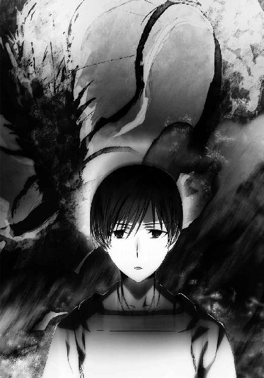
そんなバカな、と幹比古は思った。竜神とは彼らが便宜的にそう呼んでいるだけで、その正体は「水の大循環」の独立情報体のはずだ。
だがそんな彼の思いとは裏腹に、
幹比古がそう思った直後、
一際大きく明瞭な声が、彼の意識に轟いた。
《吾を満たせ！》
「うわああぁぁぁ！」
幹比古の喉から絶叫が迸る。
彼はそれを自覚していなかった。
意識が焼き切れそうに痛い、よりも熱い。
自分の魔法の源泉、現代魔法学に言う魔法演算領域が強制的に高速稼働させられているのが何故か分かった。
そうと認識した途端、幹比古はそのことを忘れた。
覚えていられなかった。
想子が彼の中からごっそり失われた。
奪われた、と思った。
喰われた、と思った。
その喪失の痛みに耐えかねて、幹比古は意識を失った──。
［二〇九五年一月某日］
吉田家の、道場とは反対側の裏庭で、一人の少年が携帯端末形態ＣＡＤを慣れた手つきで操作していた。
両手使いの大型端末を叩く少年の動きに淀みは無い。何百回も、何千回も同じ動作を繰り返した者だけが手に入れることのできる自然な技術を少年は身につけていた。
少年の前には松明が置かれている。彼の目は、火の点いていない松明を見詰めて──睨んでいた。
少年がＣＡＤの操作を終えてから、およそ一秒。
松明が一気に燃え上がる。
「くそっ！」
少年が悪態を吐いた。
「遅い！ 遅すぎる！ 僕は何故、こんなにのろまになったんだ！」
高校受験を間近に控えた少年、幹比古は、自分自身を罵り、嘆いた。
五ヶ月前の儀式の夜。気絶から醒めた幹比古は、魔法を上手く使えなくなっていた。
術式を発動することはできる。狙いも威力も、思いどおりに。
ただ速度が、思うに任せになかった。
何度繰り返しても遅いと感じる。自分はもっと速く魔法を使えるはずなのに、という感覚が意識から拭い去れない。
父は「気の所為だ」と言った。
兄も「気の所為だ」と言った。
二人とも、何時もと変わらぬ速度で術を使えていると太鼓判を押した。儀式の失敗で神経質になっているのだろうと兄の元比古は幹比古を慰めた。
だが幹比古は納得できなかった。
彼は焦った。
──自分はもっと速く術を完成させられるはずだ。
──自分はもっと自由に術を使えていたはずだ。
焦って、無茶をして、思いどおりの結果が得られず余計に焦って、そうしている内に幹比古は本当に魔法を上手く使えなくなった。
父の幸比古は、幹比古に修行を休むよう命じた。我武者羅になることだけが上達の道ではないと諭した。
幹比古は道場の修行を休んで、魔法塾の門を叩いた。
彼は魔法を使えなくなった原因が、現代魔法学を学べば分かるのではないかと思った。彼は、自分が魔法を今までどおり使えなくなったのに、以前と変わらないとしか言ってくれなかった父と兄に不信を懐いていた。
しかし、魔法塾も幹比古の期待に応えてはくれなかった。そもそも魔法科高校受験の為の魔法塾では、高度な魔法を教えてはならないことになっている。魔法塾で教えて良いのは系統魔法の発動に関する基礎理論とその実践、ＣＡＤの基本操作とこれを使った基礎単一系魔法の実技だけだった。
幹比古は独学で魔法理論の文献を読みあさった。唯一教えてもらえた基礎単一系魔法を、型後れのＣＡＤを使って何度も練習した。
何百回も、何千回も練習した。
それでも、彼の力は元に戻らなかった。
水の精霊を使役して松明の火を消す。精霊に命じて水気を飛ばし、幹比古は練習を繰り返すべく元の位置についた。
ＣＡＤを操作しようとした幹比古の背中に、兄の声が掛けられた。
「幹比古、学校の時間だぞ」
幹比古は頑なに松明を睨みつけていたが、長くない時間の後、肩の力を抜いて振り返った。
「兄上、わざわざ申し訳ございません」
幹比古は家族に八つ当たりしようとしなかった。癇癪を起こすこともなかった。あくまで礼儀正しく、他人に対するように、壁を作り振る舞っていた。
「幹比古、あまり無茶をするな。誰にでもスランプはある」
元比古の心から弟を心配する言葉にも、黙って一礼するだけだった。
「自分をいじめても成果につながらない時期だってある」
「分かっています」
幹比古は上辺の言葉だけで、兄の助言を受け容れるふりをした。実は元比古もまた、自分の限界を超えた「風神」の喚起によりすぐに魔法力が尽きてしまう後遺症に悩まされていたが、幹比古にはそれが見えていなかった。彼は自分だけが苦しんでいると思っていた。
「焦るな。時には回り道が近道となることもある」
「ご助言、ありがとうございます」
幹比古は兄に一礼して母屋に向かった。
居間に顔を出し、今日も朝食を食べる時間の無いことを父と母に詫びて、幹比古は簡単な身繕いの後、学校へ向かった。
［二〇九六年八月十四日］
「達也、おはよう」
「おはよう、幹比古。よく眠れたか？」
「ははっ、睡眠は十分、体調は万全だよ」
「確かに、大丈夫のようだな」
相変わらず自分の全てを見透かしているような達也の視線に居心地の悪さを懐きながら、同時に幹比古は確かな信頼感を彼に覚えていた。
（そう言えば、去年の九校戦がスランプ脱出のきっかけだった）
昨晩思い出した、苦悩の日々。その記憶は、何故か辛くなかった。それは幹比古にとって、既に過去の出来事となっていた。むしろ彼は、自分の勘違いと、家族に不信感を懐き自分の殻に閉じこもっていたあの日々に羞恥心を覚えていた。
「どうした、幹比古。いきなり笑い出したりして」
「えっ？ 僕、笑ってた？」
「思い出し笑いか？ 気持ちの悪いやつだな」
「......達也。君に言われると本気で気持ち悪がられているみたいに聞こえるから止めてくれないか。正直、へこむ」
「無論、本気ではないさ」
少しも冗談に聞こえない口調でそう返されて、幹比古は本気でへこんだ。
こんな些細なことに落ち込める今が、あの頃のことを思い出していた幹比古には貴重なものに思えた。
去年の「星降ろしの儀」に幹比古は参加することを許されなかった。父親に「本来、お前が立っているはずだった場所を見てこい」と言われて、強引に九校戦会場へ送り出された。
今年の「星降ろしの儀」は九校戦終了後、太陽暦八月二十四日だ。だが幹比古は、今年も儀式を辞退するつもりでいる。彼は儀式に参加する為の準備をしていない。今は、九校戦の方が大切だった。
「冗談はこのくらいにして、最終調整を始めよう」
達也に促されて、幹比古は物思いから現実に意識を戻した。彼は調整装置の前に移動して、計測用のゴーグルをつけ、パネルに手を置いた。
「......体調が良いというのは噓ではないようだな。だが少し興奮気味か」
「えっ、そんなところまで分かるのかい!?」
幹比古の驚きぶりに、達也は軽く笑った。
「情動は霊子の領域だからな。美月なら分かるかもしれないが、機械で直接計れるわけがない。だが想子波の形で推測することならできる。思考も感情の影響を免れられないからな」
「へえ、すごいんだね」
「幹比古、ここは感心するところじゃないぞ」
思いがけない高度技術に素直な感心を示していた幹比古だったが、達也に釘を刺されてしまう。
「入れ込みすぎるのは気を抜くのと同じくらい良くない。平常心を保つことの大切さは、お前たち古式魔法師の方が良く知っているはずだが？」
達也の言葉に、幹比古は苦笑してしまう。
「そうだね。古式魔法の方が現代魔法より心理状態に左右されやすいことは確かだ」
幹比古は呼吸を整えた。そう言えば、魔法も息吹も昔以上に自然に行えていると言われたのも去年の九校戦だった。あの時はまさかエリカの口からそんな言葉を聞くとは思わず、目を白黒させたのも、今では良い思い出だ。
「これでどうかな？」
もう一度計測パネルに手を置いて幹比古が訊ねる。
「問題無い。こんなにすぐアジャストできるとは、さすがだな」
さすがなのは君の方だよ、とは、幹比古は口にしなかった。口にすると噓っぽく聞こえてしまうのではないかと彼は恐れた。
幹比古がスランプから脱することができたのは、達也と同じチームでモノリス・コードに出場したからだ。正確に言うなら、モノリス・コードで達也の調整したＣＡＤを使うことができたからだった。
今では自分の不調の原因が分かっている。魔法の力を失ったと思い込んでいたあの時期は、兄の言うとおり単なるスランプだった。
儀式の夜、喚起魔法の最中に聞いたあの声。
──吾を満たせ！
あの声は確かに、「竜神」のものだった。自分がアクセスした巨大独立情報体が、接続を維持するのに不足していた情報処理速度を要求する、喚起魔法の逆流だった。あの時、「竜神」から実力以上の処理能力を求められ、無意識領域で魔法演算領域が超過作動していた。想子の枯渇を感じたのは、魔法演算領域が自身の意図を超えて次々と魔法式を吐き出し続けていた副作用だった。
自分の魔法発動速度が落ちたと思い込んでいたのは、無理やり加速させられていたあの時の感覚を引きずっていた所為だった。遅いと感じたのは当然だ。自分の実力以上の速度を基準に判断していたのだから、魔法演算領域の通常の作動速度が遅いと感じるのは当たり前のことだった。言うなれば高速道路から一般道路へ降りた直後、自走車は普通に制限速度で走っているのに徐行運転しているように錯覚するのと同じだった。
そして、正常に作動している魔法演算領域の動作を無駄に変えようとしたのだから、調子が悪くなるのもこれまた当然だった。間違った努力は過去の正しい努力の成果すら食い潰してしまう。父が言ったとおり、あの時は修行を休むのが正解だったのだ。
他の一高生はおそらく気づいていないが──気づいているとすれば「深雪さん」だけだ──、達也が本気でアレンジした起動式は、その魔法師の限界能力を強制的に引き出す。一切の無駄を省き、徹底的に使用者の魔法特性に合わせて調整されているが故に、魔法演算領域も遊びが皆無の状態で作動する。起動式に頼って無意識に魔法式を構築する現代魔法師ではなく、非効率でも自力で魔法式を構築することに慣れた古式魔法師の自分だから気づけたことだと幹比古は思っている。
去年のモノリス・コードで達也が調整したＣＡＤを使った幹比古もまた、自分では意図しない魔法演算領域の全力運転を強いられた。達也がアレンジした起動式で発動する魔法は、「竜神」によって強制的に吐き出させられた魔法式の構築よりも速かった。自分の能力の限界で、あの時以上の速度を経験させられた幹比古は、ようやく「竜神」に与えられた錯覚から脱出することができたのだった。
「幹比古、微調整してみたから試してくれ」
「......もう終わったのかい？ 何と言うか、速いね」
幹比古の言葉に、服部の担当エンジニアとケリーの担当エンジニアが苦笑している。彼らも最早、嫉妬の欠片すら見せなくなっている。
幹比古は達也の手からＣＡＤを受け取って左手にはめた。片手で持つ為に親指の所がえぐれた形状になっているＣＡＤは、大きい代わりに薄く軽い。背面に親指以外の手を通すベルトが付いていて、激しく動いても落とすことはない。ボタンは円弧状に五個配置されていて、裏側の人差し指の位置に決定ボタンがある。起動式の数より使用感を優先したデザインだ。
起動式を展開して、魔法を発動寸前の状態で止める。心配はしていなかったが、いつもながらこの上ないフィット感を幹比古は覚えていた。今更ながら、驚きすら湧いてくる。
「大丈夫だ。これなら今日も、全力を出せそうだ」
笑っている先輩のエンジニアたちは、幹比古のセリフの意味を正確には理解していなかっただろう。幹比古は「今日も否応なく全力を引っ張り出されそうだ」という意味で言ったのだった。
「ペース配分は気をつけてくれよ。こればかりは、魔法師本人にしか調節できない」
「分かっているって。今日は幸い、午前の第二回戦が休みだ。第一試合の後休憩を挿んで第二試合、その後また昼食休憩を挿んで午後二試合。スタミナの心配は無いよ」
「そうだな。試合順には恵まれている」
「運も実力の内さ」
服部とケリーが幹比古のセリフに乗ってくる。モノリス・コード本戦、一高チームは良い具合にリラックスしていた。
第一試合、一高対六高は草原ステージだった。
見晴らしの良い草原ステージでは、正直なところ幹比古の出番はあまり無い。モノリスの守備は三七上ケリーの「相殺による魔法の無効化」という超絶技巧により万全だ。せいぜい、一発目の魔法阻止を幹比古がアシストするくらいである。そしてその隙に服部が敵陣へ攻め入り、得意のコンビネーション魔法で六高のディフェンダーを一気に沈める。
二日目第一試合は、一高の危なげない勝利に終わった。
三回戦、一高にとっての第二試合は、いよいよ三高との因縁対決だ。幸いなことに、今年のルールではスティープルチェース・クロスカントリー以外の掛け持ちは認められていない。アイス・ピラーズ・ブレイクに出場した一条将輝は、モノリス・コードに出られない。
一条将輝も吉祥寺真紅郎もいない三高チーム。それでも一高にとっては最大の強敵だった。
試合は渓谷ステージ。左右にそびえる崖と、細長く、大きく曲がった池が特徴のステージだ。
（水、か......）
スランプの原因になったのは水属性の最高位神霊。だが幹比古が最も得意とする属性はやはり水だ。
「吉田、去年の新人戦のあれでいこう」
試合が渓谷ステージと決まってすぐ、ケリーが悪戯っぽい笑顔でそう提案した。
去年の新人戦モノリス・コード、九高と渓谷ステージで戦うことになった一高チームは、幹比古が霧の結界でステージ全域を覆い尽くすことにより一度も戦闘を交えること無く勝利した。
「三七上、あの作戦は三高も警戒しているんじゃないか？」
服部が彼らしい慎重論を唱える。
「警戒されていたって有効な策だと思うがな。司波はどう考える？」
ケリーが幹比古本人ではなく、達也に話を振った。これには達也と幹比古が顔を見合わせて苦笑する。だが上級生のご指名だ。幹比古は達也に回答を譲った。それに幹比古も達也の考えを聞きたかった。
「多少アレンジを加える必要はあると思いますが、有効でしょう」
「どう変える？」
服部の問い掛けに、達也は作戦を説明し始めた。
試合開始直後、渓谷ステージ全体を深い霧が覆った。
スタンド席にどよめきが走る。九校戦に直接足を運ぶ観客の多くは、去年の新人戦のことを覚えていた。
三高はこれを予期していたのだろう。モノリスを中心にして半径十五メートルの対物障壁を張り、霧の侵入を阻止している。
モノリスの「鍵」となる無系統魔法の射程距離は十メートル。対物障壁は魔法力を消耗しないよう出力を絞っているので一高選手の侵入を阻止することはできない。だが障壁が破れた瞬間、どちらから敵が接近しているのか三高の選手には分かる。三高はモノリスを選手三人で囲んで、持久戦の構えを取った。
三高の考え方は決して間違っていない。普通なら、これほど広い範囲にわたる魔法を長時間維持できるものではない。現に去年の新人戦でこの作戦が使われた一高対九高の試合は五分ちょっとで決着が付いている。
だが、五分が過ぎ十分が過ぎても、霧はますます濃くなる一方だった。
三高の選手たちはＳＢ魔法──精霊魔法の性質に詳しくなかった。独立情報体を介して事象改変を行う精霊魔法は、時間を掛ければ掛けるほど多くの独立情報体を集め術を強化できる。
持久戦を仕掛けているのは、実は一高の方だった。
達也は三高の作戦をピンポイントに読んでいたわけではない。彼の示した作戦はマルチチャート方式のものだった。「霧の結界」発動に対し、三高の取るであろう対応について仮説を立てる。そして予測された対応に対して、こちらがどう動くのかを決める。
達也がやったことは特別でも非凡でもなく、当たり前の作戦立案だ。敵の行動を予測し、それに対策を立てる。ただその予測が正確で、対策が妥当性の高いものだったというだけにすぎない。
しかし、彼の作戦は結果として見事に的中した。三高の選手は交互に対物障壁を張っているが、十分を過ぎた頃から選手の消耗が目立ち始めた。そして一高の選手も、幹比古だけが働いていたのではない。服部も着々と攻略の準備を進めていた。
幹比古の術により霧の中でも視界を確保していた服部は、三高の陣地の手前三十メートルまで接近していた。そしてドライアイスの雨を三高の対物障壁に触れないよう、その周りにパラパラと降らせていた。地面に落ちたドライアイスはそこらに転がっている石ころや疎らに生えた草をしっとりと濡らす霧の雫に溶け込み消える。
ドライアイスの粒が地面に落ちる音は、ケリーが雷のような音を作り出すことで誤魔化している。この渓谷に反響する遠雷も、三高選手の精神力を着実に削っていた。
観客は轟音を作り出す傍ら、岩を砕いたり石礫を崖にぶつけたりするケリーのパフォーマンスに大喜びだ。その歓声も、三高選手の疑心暗鬼を誘う。
そして十五分が経過した時、焦れた三高が遂に動いた。対物障壁を二重に展開し、外側の障壁を解除して本来オフェンスの役目を担っていた選手が外に出た。
その直後、彼は地面を這う電撃の網に捕らわれる。服部の得意とするコンビネーション魔法、「這い寄る雷蛇」。服が十分に湿っていないので完全な効果は得られないが、その分準備に時間を掛けている。不十分な効率は、高い威力でお釣りが出た。
対物障壁のすぐ外側で明滅する電光に、障壁の中の三高選手は動揺した。敵がすぐ近くまで接近していたのに気づかなかったことも、彼らの平常心を奪った。
対物障壁が揺らぐ。そこへ、石礫を巻き込んだ突風が叩きつけられた。服部の魔法「砂塵流」のバリエーション。リニア・ストーン・ストームともいうべきその魔法に、三高の対物障壁が崩壊する。
障壁を破った石礫は、二酸化炭素を溶かした霧の雫でしっとりと濡れていた。雷蛇は新たな通り道を見つけて、三高モノリスの周りを蹂躙する。一気に流れ込んだ霧も、たっぷりと二酸化炭素を取り込んでいた。
絶縁障壁を張ってしゃがみ込んだ服部の前で、美しくも残酷な雷光のイルミネーションが三高の選手に纏わり付いた。
三高に勝利して、服部、ケリー、幹比古の三人は一高の応援席の前に並んだ。
チーム全員でスタンドに手を振る。
幹比古は応援の生徒の中に、大喜びで手を叩いている美月の姿を見つけた。
──吉田家が二百年を掛けて見つけられなかった、水晶眼を持つ少女。
──彼女がいれば、二年前の儀式は成功しただろうか。
──彼女がいれば、自分は「神に至る術法」を完成させられるだろうか。
幹比古は軽く首を振って、その雑念を意識から追い出した。
それは今考えることではない。まだモノリス・コードは、九校戦は終わっていない。
それは彼一人で考えることではない。彼女に「水晶眼」と「神に至る術法」のことを説明して、協力に同意を得られてからの話だ。
まだ将来の話だ。
自分と美月の未来に何が待っているのか分からない。このまま仲の良い友達でいられるかどうかすら不確定だ。
それよりも今は、彼女の期待に応えよう。幹比古はそう思った。
彼の力を取り戻してくれた達也と、（認めたくはないが）彼を心配してあれこれ世話を焼いてくれたエリカと、こうして応援してくれる友人たちの為に、今は勝利に全力を注ごう。
幹比古は胸の中で、そう誓った。
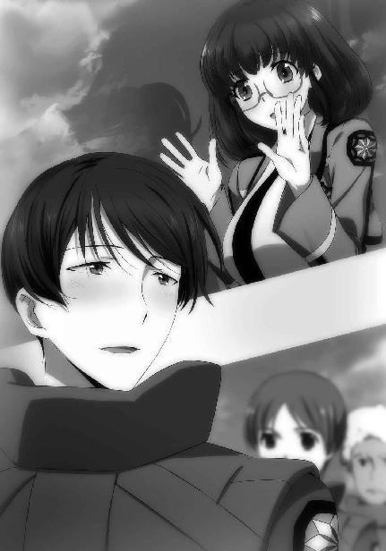
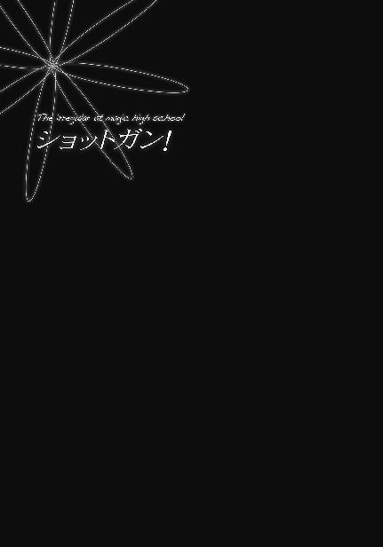
運動競技、非運動競技、魔法競技、非魔法競技を問わず、おそらく全ての競技会に言えることだが、勝負は実際の競技が始まる前からスタートしている。二〇九六年度の九校戦は、特にこの傾向が強かったと言える。
魔法科高校各校がその威信を懸けて挑む九校戦、全国魔法科高校親善魔法競技大会は、一高から九高まで、どの学校でも生徒会が中心となって全校を上げ準備に取り組む。残念ながら全ての魔法科高校が優勝を目指し邁進している、とは言えない。だが少しでも良い成績を残そうと、知恵を絞り力を尽くす点は同じだ。
選手を選び、ＣＡＤを揃え、起動式を調整する。そうした事前準備の起点となるのは競技種目だ。競技の特性に合わせて、全ての準備が進められる。だから競技種目変更を告げる九校戦運営委員会からの突然の通知に大混乱が起こったのは、当然とも言えた。
一高もその例外ではなかった。特に生徒会長・中条あずさが酷くショックを受けて、二、三日生徒会の業務が滞ったほどだ。
しかし、何もしないままでも時は過ぎていく。悲嘆に暮れているだけでは準備不足のまま本番に突入する破目になる。義務感というよりその恐怖感から、あずさは再起動を果たした。
トップが立ち直れば一高全体が再スタートを切るのは早かった。あずさが最もショックを受けていたということは、裏を返せば他の生徒のダメージはそれより小さかったということに他ならないのだから。
衝撃の通達が到着したのは七月二日、月曜日。その三日後、七月五日木曜日の昼休み終了時には選手の再選考が完了していた。
そしてその日の放課後。各競技チームの顔合わせを兼ねたミーティングが、時間と場所を分散して行われた。
◇ ◇ ◇
「失礼しまーす」
第一高校二年Ｂ組、明智英美。通称「エイミィ」は特徴的な真紅の髪をなびかせながら準備棟の小会議室へ入室した。
彼女は今年度の九校戦で、新競技「ロアー・アンド・ガンナー」のペア選手に選ばれている。今日はこれからこの部屋で、ペアを組む選手および担当エンジニアと顔合わせの予定になっていた。
もっとも、エンジニアの方は今更紹介されなくても良く知っている。去年の九校戦でも面倒をみてもらった、ちょっと普通とは言い難い同級生だ。一年前は何で彼が二科生なんだろうと不思議に思ったものだが、今年はめでたく（？）新設された魔法工学科に転科。（一応）腕と頭脳に相応しい立場になった。
それを聞いた時、英美は我がことのように嬉しかった、というのは彼女の心情を表す言葉としては不正確だ。正直に言えば、ホッとした。彼が二科生のままだと立場が無いのはむしろ、彼に理論の成績で敵わない自分たち一科生なのだ。そのことを認めたがらないクラスメイトもいたが。彼らは「総合成績で勝っている。負けているのはペーパーテストの点数だけだ」と嘯いていたが、英美には負け惜しみにしか聞こえなかった。
テストの点数でしかないというなら、そもそも「総合成績」自体が学校内の評価点数でしかないのでは？ と彼女は感じていたのだ。去年の新人戦モノリス・コードで十師族・一条家の跡取りがいた三高チームを破って優勝した彼に、クラスメイトが実力で勝っているとはどうしても思えなかったのである。
英美が予想したとおり、室内から返事は無かった。今はまだ集合予定時刻の十分前。ペアを組む選手は三年生で、その選手のエンジニアは生徒会長だ。常識的に考えて、待たせるわけにはいかない。無事一番乗りを果たして、英美としては一安心だった。
「あれれ、もう来てる。早いね～」
上級生コンビが顔を見せたのは、それから五分後のことだった。
「あっ、お疲れさまです」
携帯情報端末に落としたデータでロアー・アンド・ガンナーのルールを復習していた英美が立ち上がってピョコンと一礼する。
「二年Ｂ組の明智英美です。友達からはエイミィと呼ばれています。よろしくお願いします！」
英美の元気溢れるあいさつに、二人の三年生は頰を緩めた。
英美と同じくらいの身長でショートストレートの黒髪の、クリッとした目の女子生徒が自己紹介を返す。
「エイミィちゃんね？ あたしは三年Ｂ組の国東久美子よ。クーちゃんって呼んでね」
ペアを組む上級生は、英美の予想を超えて砕けた性格のようだった。
「い、いえ、それはちょっと......」
「まあ、そうだろうねぇ。でも遠慮は要らないから。気が変わったら何時でも『クーちゃん』って呼んで良いよ」
「はあ......」
（フ、フランクな人だなぁ......！）
いつもは他人に思われているようなことを、英美は心の中で考えた。
「それと、こっちは知ってるよね？ 生徒会長のあーちゃん」
「クーちゃん！」
久美子が自分のことを紹介する、そのセリフを聞いた途端、あずさが顔を赤くして怒鳴った。あずさが声を荒げる場面などイメージ的に想像したことも無かった英美は、それを見て目を白黒させた。
「えっ、何？ 急に大声出して。エイミィちゃんがびっくりしてるじゃない」
「クーちゃんが変な紹介をするからでしょ！ あーちゃんとか言わないで！」
「えーっ、いつもそう呼んでるじゃん」
「それはクーちゃんだからで！ 下級生には、その、何て言うか......」
あずさが言葉に詰まった隙に、
「あの、中条会長？ 私、会長のことは存じ上げていますので」
英美が場を鎮めるべく、何とか口を挿む。
「えっ？ あ、そうですね......明智さん、よろしくお願いします」
その声にハッと我を取り戻したあずさが、小さな身体を更に縮めて恥ずかしそうに答える。英美は不覚にも、その姿に萌えた。
「お待たせしました」
ふわふわした空気が漂っていた小会議室は、最後の一人である達也の登場で多少緊張感を取り戻した。
「大丈夫です！ 時間どおりですから！」
その緊張感は、主にあずさからもたらされていた。
見る人によっては達也が日常的にあずさをいじめているようにも受け取られる光景だが、言う迄もなくそのような事実は無い。あずさが一方的にオドオドしているだけだ。
しかしその怯えようは、何となく「手助けしてあげなければ」という気分にさせるものであることも確かだった。
「司波くん、今年もよろしくお願いします！」
まるで新年のあいさつのような言い回しで英美が勢いよく頭を下げると、
「はじめまして、三年Ｂ組の国東久美子です。よろしくお願いします」
英美に続き、久美子が別人のように物静かなたたずまいで一礼した。初対面の下級生に「クーちゃん」と呼ぶように要求したさっきの彼女と同一人物には見えない。
少なくとも英美はそう思って、久美子の顔をまじまじと凝視してしまう。
もっともそのやり取りは、達也のあずかり知らぬものである。
「国東先輩、よろしくお願いします。エイミィも、こちらこそよろしく。それでは会長、ミーティングを始めましょう」
彼は弛緩した空気に取って代わったほどよい緊張感を当然のものとして、また久美子はそのようなキャラクターであると認識して、打ち合わせの開始を促した。
「あっ、はい、そうですね」
そう応えて、あずさが達也の顔を見返す。
しかし、達也は口を開かない。逆に見詰め返されて、あずさは激しい焦りを覚えた。
「あ、あの、司波くん？」
「会長、お願いします」
達也はあずさに議事進行を要求した。これは嫌がらせでも何でもない。上級生であり生徒会長、イコール九校戦選手団の団長でもあるあずさがこの場を仕切るべきだと、達也は考えたのだ。
それが妥当な判断である証拠に、英美の目も久美子の目もあずさへ向いている。
「──それでは、ロアー・アンド・ガンナー女子ペアの作戦会議を始めます」
あずさは早々に抵抗を諦め、議長席に着いた。達也とにらみ合いを続けるより、その方が遥かに気楽だったのである。
「まずは......自己紹介から始めますか？」
「分かりました。明智さんの担当エンジニアを務める司波達也です」
部屋に入った直後、既に自己紹介は済ませている。だが達也はそれを指摘することなく、あっさり立ち上がって手短に自己紹介を行った。
「二年生の明智英美です。選手に選んでいただきました。国東先輩の足を引っ張らないよう、精一杯頑張りますのでよろしくお願いします」
椅子に腰掛けた達也に視線で促され、英美が何も考えずにその後へ続いた。
英美が座った後、久美子が戸惑いながらゆっくり腰を浮かせる。
「三年Ｂ組の国東久美子です......。九校戦の選手に選ばれたのは今回が初めてですが、あたしも精一杯頑張ります」
そして久美子はあずさに目を向け、言いにくそうに小声で告げた。
「えっと、あーちゃ......中条さん？ 自己紹介はさっき済ませたんだけど......」
久美子から今更な指摘を受けて、あずさが顔を赤くする。しかし、自分が言い出して、自分だけ自己紹介をしないという選択肢は、あずさの性格上取れなかった。
「国東さんのエンジニアを務める、三年生の中条あずさです......」
既にいっぱいいっぱいな様子であずさが椅子に戻る。「やってしまった」という恥ずかしさで頭がパンクしてしまっているあずさに、達也が助け船を出した。
「会長、まずは漕手と射手の役割分担から決めませんか」
「そうですね」
達也の提案に、あずさは舌を嚙みそうな早口で同意を示した。
ここまであからさまに怖がられると、幾ら達也が他人の自分に対する態度を気にしないといっても、面白くはない。だがそれを口にしたら逆効果だろう。そう判断して、達也は言いたいことを吞み込んだ。
「と言っても、改めて相談する必要は無いでしょうが」
達也のそのセリフに、
「あたしが漕手ね」
「私が射手ですね」
久美子と英美が間髪を入れず答えた。
「良かったぁ。ボートを漕げなんて言われても、私には無理ですから」
英美が芝居掛かった仕草で戯けて胸を撫で下ろしてみせる。
「漕がないけどな」
達也が本気とも冗談ともつかぬ口調で英美にツッコミを入れ、あずさへ目を向けた。
「会長もそれで良いですか」
「はい、良いです」
あずさにも、迷った様子は無い。この分担は、達也が言うように改めて相談する必要のない、英美と久美子がペアを組むと決まった時から予定されていたことだった。
英美は狩猟部。
久美子はボート部。
九校戦の種目が変更されなければ、英美はスピード・シューティングに、久美子はバトル・ボードに出場するはずだった。それぞれ射撃と水上走行の魔法の腕を買われてロアー・アンド・ガンナーの代表に選ばれたのであり、その逆ではない。あえて得意分野を外す必要も無い。
「では決まりですね」
達也の言葉に、あずさ、英美、久美子が頷いた。
あずさがノートサイズの端末に顔を向け、忙しく目を上下させる。次に何を話し合うか、競技の要項を読んでいるのだ。しかしロアー・アンド・ガンナーの詳細については画面に穴が開くほど読み込んでいる。司会役を想定していなかったとはいえ、ここで何を相談するか考えてこなかった彼女が、改めて資料を斜め読みした程度ですぐに議題を思いつけるものではない。
「......えっと、今日、他に決めておくことはありましたでしょうか？」
結局あずさは、他の三人の顔を見回しながらこう訊ねた。しかしその質問が達也へ向けられたものであることは、目を向ける時間の長さからも明らかだった。
「ボートのタイプを決めておくべきだと思います」
果たして、あずさの質問に回答したのは達也だった。
「ボートのタイプ、ですか？」
しかし残念ながら、あずさにはその答えの意味がよく分からなかったようだ。
「スピードを重視して幅の狭いボートにするか、射撃の安定性を重視して幅の広いボートにするか。直進性を重視して喫水を深くするか、旋回性を重視して喫水を浅くするかということです。魔法で動かすのですから、水の抵抗を利用して進路を曲げることは考えなくても良いでしょう」
喫水が浅ければ舵を切っても水を摑めず水面を横滑りすることになる。しかし魔法でボートを操作する場合、進路変更に水の抵抗は必要無い。
「国東先輩のご希望は？」
それを再確認した上で、達也は久美子の要望を確かめた。
「それは、幅が狭くて喫水が深い方が良いけど......」
久美子が英美の顔を横目で窺う。ボートを動かす方としてはその方がやり易い。しかし、幾ら実弾射撃とは違うといっても揺れが激しくなれば程度の差はあれ照準をつけにくくなる。
「多分、行けると思います。馬の上も結構揺れますので」
二人の答えを聞いて、達也が手に持っていたＡ４サイズの端末を操作する。彼が行ったのはボートの発注にゴーサインを出すものだった。
「スピード重視といっても競技用のシェル艇ほど細長くはありません。ただ、ボートの中で立つのは難しいと思う」
このセリフの前半は久美子に対するもので、後半は英美に向けられた注意だった。
「立射は無理かぁ。実弾射撃と違って魔法射撃の場合は視界が確保できる立射が一番当てやすいんだけどね。膝射は可能？ 座った姿勢で狙いをつけるのは難しいよ？」
「スペース的には可能だ。実際に膝立ちで走れるかどうかは、練習次第だろうな」
「うへぇ。転覆したりはしないよね？」
情けなさそうに顔を顰めた英美の質問にすぐ答えるのではなく、達也は久美子に目を向けた。
「国東先輩、どうでしょうか」
「走っているボートの中で片膝立ちになるの？ それは転覆の危険性が......」
久美子の言葉に英美の表情が更に苦々しいものになる。
「では転覆しない練習から始めることにしましょう」
それでも、英美は達也のこの提案に不満も反対も述べなかった。
打ち合わせは十分ちょっとで終わった。達也は慌ただしく次のミーティングへ向かい、あずさは生徒会室で事務仕事だ。英美と二人きりになると、久美子は大きく伸びをしてぐったりと背もたれへ背中を預けた。
「あー、緊張した」
「国東先輩、緊張していたんですか？」
本人が言っているのだから間違いはないはずだが、達也の前で見せた「大人しい少女」ぶりがやたらと板についていたので、英美はざっくばらんなこっちの方が演技なのではないかと疑ってしまったのである。
「クーちゃんよ」
「あの、ですが......」
さっきは「気が変わったら」と言っておきながら、いきなり愛称呼びを要求し始めた先輩女子に、英美は戸惑いを隠せない。
「ごめんね。今はそう呼んで？ じゃないと、肩凝りが取れない気がする」
英美には到底理解できない超理論だが、久美子の表情から判断するに徹底抗戦は難しかった。
「......じゃあ、『クーちゃん先輩』で」
これが英美にとって精一杯の譲歩だ。
「うーん、まっ、良いか」
何とかお許しをもらって、英美は心の中で安堵の息を吐いた。何故こんなことで疲れなければならないのか、一抹の理不尽を覚えながら。
「それでクーちゃん先輩、緊張してたんですか？」
繰り返された質問に対し、久美子は「たはははは......」と照れ臭そうに笑った。
「あたし、男子が苦手なんだよねぇ」
思いがけない告白に、英美が顔色を変えた。
「あっ、違う違う！」
後退ろうとするその仕草からどういう誤解をしたのか覚った久美子は、大慌てで両手を左右に振った。
「女子の方が好きとか、そういうんじゃないから！ 暴力的というか好戦的というか、そういうのがダメなの。特に威圧的な男子を前にすると、身体がすくんじゃって思うようにしゃべれなくなるんだ」
「......すみません」
久美子の告白を聞いて、英美は神妙な顔で謝罪する。
「どうしたの、急に？ 何か謝ってもらわなきゃならないこと、あったっけ？」
「いえ、気にしないでください」
魔法師の少女が、暴力に過剰な恐怖感を懐く。それは珍しい事例ではない。そして大抵の場合、同じ理由に行き着く。
英美は久美子が魔法的な能力を持たず魔法師の血筋でもない両親から生まれた突然変異的魔法師、いわゆる「第一世代」であることを知っている。そして暴力に対する忌避を示す魔法師が「第一世代」の女性に多く見られることも、その心的傾向が少女期の体験を反映しているケースが多いことも。英美は父親が「第一世代」という事情もあって、そういう話は同級生だけでなく上級生よりも、多分良く知っている。
それは他人が軽々しく口にして良いことではなかった。
「クーちゃん先輩、平和主義者なんですね」
「平和主義者っていうと立派そうに聞こえるけどねぇ......。本当は試合にも出たくないのよ。あーちゃんみたいに、スタッフで役に立てる技術があれば良かったんだけど」
「だから会長と仲が良いんですか？」
「うん、まあ、あたしはあそこまで酷くないけど」
「良いんですか、そんなこと言って」
英美と久美子が、性格悪めの笑みを交わす。
共犯者のシンパシーにより二人の距離はグッと縮まった。
「でも司波くんは、理由も無く他人を威圧するような男子じゃありませんよ？」
このセリフは、その気安さが口にさせたのだろう。達也を弁護できるほど、英美は彼の為人を熟知しているわけではない。これは達也の為というより、久美子が懐いている苦手意識を緩和する為という意味合いが強かった。
英美が達也に特別な好意を持っているから、という理由ではない。それは久美子も誤解しなかったし、曲解もしなかった。
「うん......多分、エイミィちゃんの言うとおりだろうね。あれだけ怖がっていても結局、あーちゃんも司波くんのことは頼りにしているみたいだし。エイミィちゃんたち二年女子の懐きようを見ても悪い人じゃないって分かるよ」
「懐っ......!?」
その代わり予想外の方向へ飛躍した解釈に、英美が軽いパニックに襲われた。あたふたと反論の言葉を探しても見つけられず、その結果絶句に追い込まれている英美を余所に、久美子のセリフは回顧へ向かっていた。
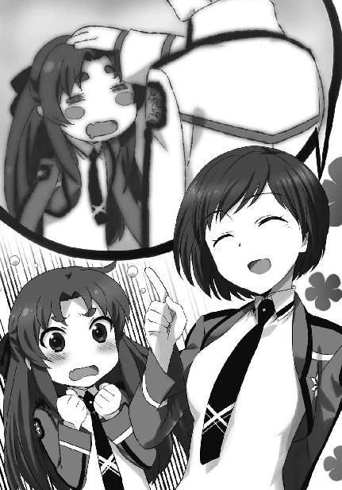
「でも、横浜のあれを見ちゃうとね......」
英美の意識がパッと切り替わった。
久美子が言っているのは、去年の論文コンペのことだろう。英美は事情があって応援に行けず、その結果、運良くあの騒動に巻き込まれずに済んだ。だからあの日、横浜国際会議場で何が起こったのか、達也が何をしたのか、英美は伝聞でしか知らない。
しかし、聞くだけでもショッキングすぎる「活躍」だった。
（素手で銃弾を受け止め、ゲリラの腕を切り落とした、って聞いた）
（もちろん本当に素手だったとは思えない。何かの魔法を使っていたはず）
（三高の吉祥寺真紅郎くんは「分子ディバイダー」じゃないかと言ってたらしい。ＵＳＮＡ軍の機密魔法らしいけど、問題はそこじゃない）
（ゲリラの腕を容赦なく切り落とす、その迷いの無さ）
（怖い。確かに私も怖い、けど......）
「でも、悪い人じゃありませんよ」
英美は久美子に、達也の本性を知る者が聞いたら「騙されている／ぞ／よ／わよ／！」と盛大に突っ込まれそうな返事を、笑顔で返した。
◇ ◇ ◇
七月十四日、土曜。定期試験で中断されていた、九校戦へ向けた練習の再開日。
一高裏手の野外演習場には蛇行しながら全体としては楕円形を描く水路があって、去年までバトル・ボードの練習はここで行っていた。新競技ロアー・アンド・ガンナーの練習にもこの水路が使われている。非常時を除き、学校の外で魔法を使う為には本来複雑で面倒な手続きが必要になるのだから、これは当然と言える。
野外演習場の水路はバトル・ボードの試合用コースのように立体的には作られていないが、こちらの方が長く、そして広く作られている。そしてその水路の急なカーブを、香澄が射手を務める一年生ペアが、肩から上を水面の上に出してぷかぷか浮かんでいる久美子と英美へ申し訳なさそうな視線を向けながら通り過ぎていった。
「エイミィちゃん、大丈夫？」
この水路は深さが三メートルあって当然足はつかないが、英美たちはライフジャケットを着用しているので溺れる心配は無用だ。既に真夏ということもあり、水に入っても冷たいという感覚はない。──とはいえ服を着たまま何度も水の中にダイブするのは、決して気持ちの良いものではなかった。
「はい、大丈夫です」
自分と同じく水路に浮かぶ久美子に「大丈夫」と答えたものの、英美はそろそろ辛くなってきていた。ショートカットの久美子と違って、英美はボリュームのあるロングヘアだ。服もそうだが、ルビーのような光沢の紅い髪がたっぷりと水気を吸って、かなり重たくなっている。
（髪が重いと気も重くなるって本当よね......）
上手くいかないことへの泣き言は、意地で言葉にしない。声に出さなくても、考えただけでますます気が滅入ってしまうと分かっていたからだ。それでも、英美は隠しようもなくため息を吐いて、ひっくり返ったボートへ向かって泳いだ。
あの後更に一回転覆して、英美の乗ったボートはようやくゴールライン＝スタート地点へたどり着いた。
水路から上がって魔法で髪と服を乾かしている英美に、階段状のボート乗り場（兼ボート降り場）で出迎えた達也が声を掛ける。
「エイミィ、お疲れさま」
「あれっ、司波くん？」
スタートした時に英美たちを見送ったのはあずさだった。今日の予定では、達也があずさと交代するのはもっと後になってからのはずだった。
「もう交代したの？」
「業者との連絡違いがあったらしい。会長はそっちの調整に呼び出された」
だが事情を聞いてみれば、
「大変だね」
という感想しか浮かばない。
「まあな。だが、そちらも苦戦しているようだ」
しかし英美も、苦労しているという意味では他人事と笑っていられなかった。
「あはは、まあね」
いや、逆にここまで来ると笑うしかない、という心境に至っていた。
膝立ち走行の練習は今日が初めてとはいえ、たった一周する間に四回もボートをひっくり返してしまった英美はかなりへこんでいた。達也に向ける笑顔も精彩を欠いている。
「馬に乗るようなわけにはいかないか」
達也のこんな、何でもない呟きにも落ち込みを積み重ねるほど精神状態はネガティブだ。
「いや～、まったくだよ。もっとも、馬の上で膝射の体勢をとったりしたらすぐに転げ落ちちゃうだろうけどね」
それでも暗い顔で俯くのは自分のキャラじゃない。英美はそう思って、へらへら笑いながら殊更軽い口調でそう答えた。
「どんな体勢ならあり得るんだ？」
しかし、達也は彼女の自虐芝居に付き合うつもりはないようだ。彼は真面目な顔で英美にそう問い返した。
「えっ、どんな体勢って？」
「走っている馬の上で、どんな体勢なら落馬しないんだ？」
質問の意味を理解できなかった英美の為に、もう一度丁寧に訊き直す。
達也の問い掛けの意図を理解した英美は、顎に手を当てて大袈裟に首を捻った。
「普通に、鞍に座る以外でってことだよね？ うーん......サーカスでやるような曲乗りを別にすると、『横乗り』と『ツーポイント』と『モンキーシート』くらいしか知らないなぁ」
「意外にバリエーションが少ないんだな。『横乗り』は分かるが、他の二つはどういう乗り方なんだ？」
「『ツーポイント』は簡単に言えば立ち乗り、鞍から腰を上げて馬を操る乗り方。障碍飛越に使われてるよ。『モンキーシート』は競馬のジョッキーが馬の上で前傾姿勢になっているあの乗り方って言えば分かる？」
「あれか......。『モンキーシート』は鞍の上で両膝立ちになっているんだよな？」
「やったことないけど、膝はつかないらしいよ。ジョッキーは鐙の上に立っているだけで、膝はバランスを保つのに使うんだってさ」
「なるほど......エイミィ。両膝立ちで照準をつけることはできるか？」
「えっ、どうだろ？」
達也の思いつきを頭の中でシミュレートしてみて、英美は自信なさげに頷いた。
「多分大丈夫だと思うけど、何で？」
ここで「何故」と問われるのは達也の想定外だったが、回答に戸惑うことも無かった。
「ボートの中で片膝立ちになるのではなく、両膝立ちで構えてみたらどうだ？ その方が姿勢も安定すると思うし、目線の高さはそれほど変わらないぞ」
「......どうやるの？」
試してみようとして上手くイメージが摑めなかったのか、ボートの中に片足を置いた体勢で英美が顔を上げて達也に訊ねた。
「足を左右に均等に開いて、ボートの揺れを膝で押さえ込むようにして......そうだな、そんな感じだ」
英美はその姿勢でショットガンスタイルのＣＡＤを左右に振った。
「うん......行けそう。これでもう一回りしてみるね」
「ああ、頼む。国東先輩も、お願いします」
その言葉に無言で頷いて久美子は英美の前に座り、達也の方へ振り向いて横目で会釈した。
その直後、ボートは緩やかに岸を離れた。
「それ、昔のモーターボートレースの乗り方ね」
最初のカーブを曲がったところで、久美子が前を向いたまま英美に話し掛けた。
緩やかなカーブだが、さっきより明らかにボートの挙動は安定している。
「モーターボートレース？」
「あれっ？ エイミィちゃん、知らない？ 競艇とも言うんだけど」
「知りません」
まだスピードを抑えているとはいえ、英美には久美子と会話するだけの余裕があった。さっきの一周では、水に落ちた後にしかできなかったことだ。
「戦前は一人乗りの小さなモーターボートで競争するギャンブルがあったんだって。モーターボートを馬の代わりにした競馬みたいなものね」
「へぇー、そんなのがあったんですか」
「それでね、昔の文献データによると、選手は小さなボートの中で足を開いた正座をしていたんだって」
「なるほど、同じですね。もしかして司波くん、そのモーターボートレースのことを知ってたのかな？」
「どうだろ。そんな感じじゃなかったけど。でも教本になるような先例があるってことは、理に適ってるんじゃないかな」
「そうですね。先輩、スピードを上げてみてください」
「りょーかい！」
久美子はボートの速度を一気に上げた。
水路を一周してスタート地点に戻ってきた二人は、髪も服も濡れていなかった。いや、全く濡れていないわけではなかったが、水飛沫を浴びている程度で、少なくとも水中に落ちた形跡は無い。
「見て見て！ 一回も落ちなかったよ！」
「ああ、たった一周ですごい進歩だ」
どうだ！ という顔で駆け寄ってきた英美に失笑気味の笑顔で応えて、達也はボートに乗ったままの久美子へ目を向けた。
「国東先輩はあの体勢で操艇に問題ありませんか？」
「うん......ちょっと視界が悪い」
久美子は相変わらず、達也の前では別人だ。もっとも達也も千里眼ではないので、久美子のことを「物静かな性格の女子生徒」と思っている。だから受け取りようによっては素っ気ない態度も、気にならなかった。
「やはりそうですか」
ロアー・アンド・ガンナーのペア競技は一人がボートをコントロールし、一人が的を撃つ。ここで問題になるのは二人の視界だ。二人が前後に並んで座った場合、漕手が前に座ると射手の目が遮られ、射手が前に座ると漕手に進路が見えなくなる。
これを解決する為、一高のペア用ボートは漕手が座る前の座席を低く、射手が座る後ろの床をそれより高く設計してある。漕手はボートの中に下半身を潜り込ませるような格好で乗り込むのだ。これによって、射手の視線が漕手の身体で遮られる問題は解決した。だが漕手の視点が低くなる為、視野が狭くなるのは避けられない。
「本番では一周目がテストラン、二周目がタイムトライアルです。一周目でコースレイアウトを確認できますから、遠方がよく見えなくてもそれほど神経質になる必要は無いはずですが......会長と少し相談してみます」
達也には既に腹案があるらしい。気負いもなく淡々と告げるその姿は頼もしいと言えば頼もしいが、一体何を考えているのか、英美は自分が直接の当事者でないながら少し不安になった。
彼女は初めて達也の「調整」を受けた時の衝撃──あるいは恐怖──をまだ覚えている。もしかしたら一生忘れられないかもしれない、とすら思う。
ＣＡＤの調整を受けているはずなのに、彼女自身が調整台──というより俎に載せられてこれからどう料理しようか、と吟味されているような、あの感覚。
自分の全てを見透すような眼差し。
服を透かして裸を見られているどころではない。
皮膚の内側、筋肉、内臓、骨格、細胞、遺伝子、自分を構成する全ての要素を見られているような。
魔法演算領域の特性に留まらず、自分の奥底、自分の本質まで分析されているような。
そして出来上がったＣＡＤは、明らかに自分の限界以上の力を自分の中から引き出した。
否、昨日までの自分の限界を超えた、本当の限界を教えてくれた。
英美はゴールディ家の祖母から「魔弾タスラム」の指導を受けた時に、似たような感覚を経験したことがある。達也の調整したＣＡＤの使用感は、自分の中へ強制的に魔法を刻みつけていく祖母の指導の感覚に似ていた。その所為で──というのは言い訳になるかもしれないが、去年のアイス・ピラーズ・ブレイクでは予選で力を使い果たしてしまった。
スピード・シューティングの疲労が残っていたこともあるし、その準優勝の興奮で前日よく眠れなかったのもスタミナ切れの理由としては挙げられる。だが決勝リーグがああいう形でなくても棄権せざるを得なかったであろうほどに消耗していたのは、達也のＣＡＤが原因だったと英美は確信している。夕食の席で彼女が「ＣＡＤの調整って、ある意味自分の内側をさらけ出すわけじゃない」と言ったのは単なる一般論としてだけではなく、達也の調整を念頭に置いてのものでもあった。
今度は久美子が、俎上の鯉になる番かもしれない。
（......国東先輩のエンジニアは中条会長だし、大丈夫よね？）
達也の調整を受けたからといって、何か害があるわけではない。むしろ達也の調整したＣＡＤを使えるのはラッキーなことだ。去年、英美はスタミナ切れを起こしたが、その代わり実力以上の好成績を収めることができた。収支はどう考えても大幅にプラスだ。
それでも英美は、久美子が新たな実験台にされるのではないかという不安を拭い去れなかった。
◇ ◇ ◇
七月十五日、日曜日。言う迄もなく授業は休みだが、九校戦まで残すところ一ヶ月未満となって選手は皆登校し練習に励んでいる。
もちろん、英美と久美子のペアも練習に来ていた。ロアー・アンド・ガンナーは特に練習機会が少ないので、ソロの代表や新人戦チームや男子チームと同様、朝早くから野外演習場の水路に集まっている。
「おはようございます」
水路のスタート地点に設置されている更衣室兼シャワールーム兼休憩室で二人を待っていたのはあずさだった。相変わらず、下級生に対しても丁寧なあいさつだ。
あらかじめ、今日は午前中があずさ、午後が達也のローテーションになっていると聞いていたので英美も久美子もあずさが出迎えたことに意外感は覚えなかった。英美たちの関心を引いたのは、あずさが手に提げている、大きさがサンドイッチを入れるバスケット程度の小さなハードケースだった。
「おはようございます、会長」
「おはよう、あーちゃん。ところでそれ、何？」
英美は後輩ということもあり礼儀を優先させたが、久美子には好奇心の充足を躊躇う理由は無かった。
「これ？ はい」
「？」
あずさは久美子にハードケースを突きつけた。説明を聞くより先に、まず見て確かめろというわけだ。
久美子は勢いに押される格好でケースを受けとった。予想外に軽い、というのが第一印象。見た目から軽量合金製かと思っていたが、どうやらこのケースは樹脂製のようだ。
中身も軽くて小さな物だった。
「メガネ？ ゴーグル？」
中に入っていたには、メガネタイプのゴーグルだった。ただ普通の物とは違って弦の付け根の左右に縦横一センチ、厚さ五ミリの小型カメラらしき物が取り付けられている。
「あっ、もしかしてグラス型のナビ？」
「正解～。さすがはクーちゃんね」
あずさがパチパチと手を叩いている。
「じゃじゃーん！ このナビは一周目の練習走行の時にグラスの左右に取り付けたカメラでコースを撮影して、本番の二周目でグラスにガイドレーンを表示する仕組みなんです。一種のブラインドモニターですね」
「あーちゃん、誰に説明してるの？」
大袈裟なアクションと二人を相手にするにしては勢いのありすぎる口調に、久美子からツッコミが入る。
「え、えへへ......」
笑ってごまかすだけであずさに萎縮した様子が見られないのは、この場にいるのが気軽に接することのできる同性の友人と後輩ばかりだからに違いない。たとえ同性であっても、これが真由美や摩利相手だとこうはいかない。
「とにかく、これがあればコースが見えにくいという問題は解決です。ロアー・アンド・ガンナーは一組ずつの出走で同時に走る相手がいませんから、コースがこの先どうなっているのかさえ分かれば良いわけです」
なお、ですます調なのは相手が久美子だけでなく英美もいるから、というより解説モードになっている為だ。
「確かに、コースがどうなっているのか分かれば操艇に支障は無いけど」
「水上の的ははね飛ばしても問題無いルールですしね」
「でも、レギュレーションには引っ掛からないの？」
久美子から提起された当然の懸念に、あずさは「待ってました」とばかりの表情を浮かべた。
「ロアー・アンド・ガンナーの機械に関する制限は、水上を走行する無動力の乗り物を使用すること、です。ナビを使ってはならないという規則はありません」
その回答を聞いて、久美子は何やら訳知り顔で頷いた。
「ほうほう。それで、このアイデアはあーちゃんが考えたのかな？」
「うっ......実は司波くんが考えた」
「やっぱり。ルールの穴を突くなんて、あーちゃんの思考スタイルじゃないからね」
「でもでも、ナビのシステムを組んだのはわたしなのよ！ 司波くんには基本コンセプト以外、お世話になっていないから！」
「フーン......でも、こういうのってコロンブスの卵なのよね」
「それはそうだけど！」
あずさが拗ねてそっぽを向き、久美子がそれを笑いながらなだめる。
その様子を見ながら、英美は拍子抜けの感を味わっていた。魔法に拘らず、勝つ為に利用できる物は何でも使うというスタンスは達也らしいと思う。だが久美子のリクエストにこちらの度肝を抜くような魔法ではなく、思いつきさえすれば誰にでも用意できる電子機器で応えるというのは期待外れだ。
（......私ってば、何を期待してたんだろ）
自分が何を考えているのか自覚して、英美は自身に呆れた。昨日は久美子が新魔法のモルモットにされてしまうのでは？ と心配していたはずなのに、心の奥ではあっと驚くような新魔法・高等魔法を楽しみにしていたということなのだから。
（第一、新しい魔法を戦術に組み込むって言われても、苦労するのは選手の方だもんね）
達也にとっては、新魔法のアイデアなんて簡単に湧いてくるものかもしれない。しかし、本番まで一ヶ月も無いのだ。こんな短期間に新しい魔法を身につけるのは本来であれば無謀というしかない。それは去年のことを考えても分かる。
（雫でさえアクティブ・エアー・マインを覚えるのが精一杯で、フォノン・メーザーは不完全だったって言ってたもんね。幾ら司波くんでも、ホイホイと新魔法を出してくるような無茶はしないか）
（慣れている魔法だけで勝てるなら、そっちの方が堅実というものよね。私も今ある持ち札だけで頑張らなくちゃ）
英美は自分をそう納得させて、練習を始めるべくボートへ乗り込んだ。
「ナビに慣れる時間も必要でしょうから、最初の一時間は走る練習に専念しましょう」
「了解よ」
前部シートに収まった久美子があずさの指示に頷く。
「それで問題が無いようなら、射撃を混ぜていきます。明智さんも、それで良いですね」
「分かりました！」
後ろの席で両膝立ちになった英美が元気よく返事をしたのと同時に、ボートは発進した。
◇ ◇ ◇
喉元過ぎれば熱さを忘れる、という。実際に「熱い」という経験をしてすらそうなのだから、頭の中で考えただけの決意など儚いものかもしれない。
「司波くん、助けて～」
少なくとも英美は「現有戦力だけで戦う」という半日前の決意を忘れていた。
「いきなりだな。エイミィ、何を困っているんだ」
午後の練習開始早々、水路から上がってきた英美は、達也の姿を認めるなり彼に泣きついた。達也が英美の背後を見ると、久美子が苦笑いしながら片手で拝む格好をしている。
「立ち話だと落ち着かないな。中で話そう」
達也は休憩所で英美の話を聞くことにした。
「ハンティングは基本的に、一つの獲物を追いかけるスポーツなのよ」
「？ ......まあ、そうだろうな」
何の前置きも無く、脈絡の見えにくい話題を持ち出した英美に、達也は取り敢えず頷いた。
なお英美が「一匹」ではなく「一つ」と表現したのは、ウサギやキツネのような生きた動物の代わりにオフロードのロボットカーが「獲物」として使われているからだ。
「スピード・シューティングは同時に幾つも的が出てくるけど、あれは視点が固定されているからそんなに混乱しなかったんだ」
「つまりエイミィは、的が多くて上手く対処できないことに悩んでいるのか？」
「そのとおり！ 司波くん、たったあれだけで分かっちゃったの？」
英美が驚きの声を上げる。久美子も目を丸くしていたが、達也は少々大袈裟ではないかと思った。ロアー・アンド・ガンナーの性質を合わせて考えれば、射手である英美が何に悩んでいるのか、今の会話だけで十分に理解可能だった。──達也の基準では、だが。
「司波くん、何とかならないかな？」
英美がテーブルの上に身体を乗り出して縋り付くような目で訴える。彼女は今、間違いなく、事態を安直に解決可能な「新兵器」「秘密兵器」を達也に期待していた。
「対策は用意してある」
しかし英美の変節は別にして、達也にとり英美が多重照準に悩むだろうということは予測の範囲内だった。故に対応プランも立案済みだ。最初からこのプランを提示しなかったのは、新たな魔法を修得することの負担を考慮したからだった。使わずに済むならそれに越したことはないと考えたからである。
「えっ、対策済み？」
選手が勝てるように装備を調えるのが彼に与えられた仕事だ。こんな意外そうな顔をされる方が達也にとっては心外だったが、それを顔には出さなかった。
「ちょっと待っていてくれ」
そう言って更衣室に姿を消した達也は、横長のアタッシュケースのようなものを手に提げて戻ってきた。
ケースの中身は、言うまでもなくＣＡＤだ。ライフルの銃身を切り詰めたような形状は、英美が今練習で使っているのと同じ物。
「このＣＡＤには、散弾型インビジブル・ブリットの起動式が格納されている」
「ええっ!?」
「インビジブル・ブリットぉ!?」
突如大声を上げた二人に、達也は眉を顰める。
「......何をそんなに驚いているんだ？ 国東先輩も、少し驚きすぎだと思いますが」
「いやいやいやいやいや！」
久美子が達也に喰って掛かった。珍しく彼女の顔から笑みが消えている。それだけでなく、達也に対する（というより男子生徒に対する）苦手意識も一時的に忘れているようだ。
「驚くでしょ？ 驚くよね？ 驚くに決まってるじゃない！」
勢いよく振り向いた久美子に、英美が大きく縦に首を振った。
「だから、何にですか」
「インビジブル・ブリットって、カーディナル・コードを利用した高等魔法じゃない！」
「確かに高い技量が要求される魔法ですが、起動式は公開されていますよ？」
「起動式が公開されていたって記述内容を理解できなきゃ魔法師に合わせて調整できないよね!? だから未だに吉祥寺真紅郎君本人しか使い手がいないんじゃないの!?」
久美子の主張は一般的に信じられている俗説だ。その誤りを正すことに、達也はやぶさかではなかった。
「インビジブル・ブリットが普及していないのは、用途が限定された魔法だからです。この魔法の効果は指定したポイントに圧力を発生させるというただそれだけのもので、対象物の状態を直接変更する効果はありません。ですから、戦闘用としても非戦闘用としても有効活用できる状況が限られているんですよ。学術的には極めて有意義ですが、実験室の外では他の魔法を使う方が効率的です」
達也の説明を聞いて、二人は少し頭が冷えたようだった。
だが彼の解説により、英美の中に新たな疑問が生まれた。
「じゃあ何でそんな魔法を使おうとするの？ しかも『散弾型』って......インビジブル・ブリットの起動式を改造するなんて手間を掛けてまで」
起動式を改造!? と久美子が悲鳴を上げていたが、英美にとっては達也がこの程度の非常識な真似をするのは今更だ。
「それはもちろん、ロアー・アンド・ガンナーにはあの魔法が向いているからだが」
「......そうなの？」
「ああ。もっとも、オリジナルのままでは効率が悪い。だから散弾型に改造したんだが......吉祥寺真紅郎はそこに気づくかな？」
達也の唇が微かな笑みを刻む。
それに気づいた英美は「やっぱり司波くんって性格が悪いや」と思った。
◇ ◇ ◇
西暦二〇九六年八月五日、九校戦の初日。
ロアー・アンド・ガンナーの選手控え室では、エンジニアによるＣＡＤの最終調整も終わり、出走を待つばかりとなっていた。
「いよいよスタートです。出走順一番というのは本音を言えば避けたかったところですが、くじ引きだから仕方がありません」
そのくじを引いた久美子が、片目を閉じた顔の前で両手を合わせている。
その姿を見て「国東先輩は良い具合にリラックスしているようだ」と達也は感じた。
「しかし他校のタイムが全く分からないということは、逆に言えばプレッシャーを生み出す数字が無いということです。自分たちのペースで、のびのびやりましょう」
達也の言葉にあずさと久美子がこくこくと頷いている。
しかしこれは主として、英美に掛けた言葉だった。よく見ると分かるが、彼女の足は小刻みに震えている。達也が記憶している限り、去年はこれほど緊張していなかった。
「エイミィちゃん、いつもどおりやれば大丈夫」
久美子が英美の肩を平手で叩く。
達也の見ている前ということもあってか声は小さく口調は控えめだったが（男受けを狙っているのではなく、苦手意識からありのままに振る舞えないのである）、平手打ちの勢いはかなりのものだった。
英美が「うきゃ!?」と悲鳴を上げてつんのめる。二歩蹈鞴を踏んで、英美はふくれっ面で久美子へ振り返った。
「クーちゃん先輩、痛いじゃないですか！」
「ゴメンゴメン。エイミィちゃんが柄にもなく緊張しているようだったから」
「あっ、ひどーい！ 柄にもなくってなんですか！ 私は繊細な質なんです！」
「はいはい、デリケートデリケート」
棒読み口調で答えた久美子に「クーちゃん先輩！」と英美が更に詰め寄る。
そこへ達也が割って入った。
「エイミィ、足の震えは止まったようだな」
「えっ、あっ......！」
他人の目は誤魔化せても自分自身を欺くことはできない。できるのは目を背けることだけだ。英美は自分が緊張に震えていることをちゃんと認識していた。だから達也に指摘されたことも、すぐに自覚できた。
「大声を出して緊張が紛れたか？」
「......そうなのかな？」
よく分からないという顔で首を傾げる英美の背後では、久美子が「どんなもんだい！」という顔で胸を張っている。──達也にとっては普段のイメージに合わない行動だが、反応すると面倒臭いことになりそうだったので彼は見なかったふりをした。
「最初の競技の最初のプレーヤーということで緊張するのは理解できる。だがもっと自信を持て。エイミィの散弾型インビジブル・ブリットは良くできている」
「......ホント？」
「ああ、本当だ」
久美子が英美の後ろで「それって起動式を作った司波くんの自画自賛にもなるんじゃないかな」と呟いていたが、達也はこれも無視した。
「エイミィ、君と国東先輩が主役だ。観客の度肝を抜いてやれ」
「そうよエイミィちゃん。派手にぶちかましてやりましょう！」
「......そうですね」
英美の表情に、ようやくいつもの明るさが戻ってきた。
「うん、失敗した時のことを考えても非生産的！ ドーンと思いっ切りやりましょう！」
「その意気その意気！ じゃあ、あーちゃん、司波くん、行ってくるね！」
二人は達也とあずさにサムズアップを見せて、既に出走準備が整っているボートへ向かった。
その後ろ姿を見送りながら、「国東先輩は猫を被っていたのか？」と達也は思った。
「何だ、あれは？」
三高の本部天幕で、ロアー・アンド・ガンナーのコースを映し出すモニターを見ていた技術スタッフが声を上げた。
「一高......アイツか。また妙な小細工を」
三高スタッフの注目を集めているのは、久美子が掛けているゴーグルだった。
「あれは......カメラ付きのナビか？」
「えっ？ レギュレーション違反じゃないの？」
三年生女子のスタッフが振り返った視線の先には、口惜しそうに唇を嚙み締めた吉祥寺の姿。
「......機械に関する制限は『水上を走る無動力の乗り物を使うこと』でした。動力以外の電子機器を使用しても、違反にはならないということでしょう。一高のボートがああしてスタートラインに浮かんでいることがその証拠です」
吉祥寺の肩に、背後から一条将輝の手が置かれた。
「一段低くなったシートに漕手を座らせ、その後ろの少し高くなった床に射手を両膝立ちで配置する。当校と同じスタイルだな。ボートも同じ、幅が狭く喫水が深いスタイル。ジョージとアイツは同じ結論に至ったようだ」
「将輝......」
「当校の選手に操舵を補助する機器は必要なかったから、ジョージがわざわざルールの穴を探す動機もなかった。ただそれだけのことだ」
「そう、だね......。ゴメン、少し意識しすぎているみたいだ」
吉祥寺が頷いたのを見て、将輝は彼の肩から手を離した。
「それより、どんなレースをするのか、そっちを注目すべきだ。一組ずつ走る新競技だからな。一高のレースは参考になる」
将輝の言葉を聞いて、吉祥寺だけでなく上級生もモニターを注視した。
スタートシグナルに光が入る。三つのランプが点り、ブラックアウトした瞬間、一高のボートがスタートダッシュを切った。
「おっ？ 速いな」
「だが一周目は練習走行だ。スタートがどんなに良くても意味は無い」
「一周目は的が出てこないんだったわよね？」
「そうだよ。一周目はコースを回るだけ。......それにしても随分とばしているな」
「一周目で転覆してもレコードには関係ないからじゃない？ どこまでスピードを出せるか、実際のコースで限界を探っているんだと思うわ」
「この戦術は見習うべきだな。当校も使わせてもらおう」
「順番が一高の後で良かったわね」
「ボートの挙動は安定しているな」
「水の抵抗を弱める魔法は、あまり使っていないみたい」
「むしろ上手く水を摑んでいる感じだ。魔法よりもボートの腕を優先して選手を選んだのか？」
一高の操艇を三高のスタッフがモニターのこちら側で冷静に批評している内に、試技は本番の二周目に入ろうとしていた。
「いよいよか」
一高のボートがスタートラインを通過し、時計が動き始めた。
その直後、天幕にいる三高生徒の、いや、彼らだけでなく一高のレースを観戦していた他校生徒、観客の平静が崩された。
「速い！」
「何、あの魔法!? まるで散弾じゃない！」
彼らが驚いたのはボートのスピードではなく、乱数プログラムによって現れた的を次々と撃ち抜いていく射手の魔法。
「やっぱりそうよ！ 見て！ 的の周囲にも着弾してる！」
「氷を飛ばしているようには見えないぞ。空気弾か？」
「的の部分を拡大しろ！」
吉祥寺がモニターを操作したのは、その声と同時だった。
水面を走る小型模型のボートが一高の射撃に貫かれて沈む。
その瞬間の静止画像が別のモニターに表示される。
「......間違いない。水面に散弾状の弾着跡ができている」
「固体の弾丸も液体の弾丸も見当たらない。やはり空気弾か!?」
「......違います」
吉祥寺が今にも歯ぎしりを始めそうな声で、上級生の推測を否定した。
「あれは......インビジブル・ブリットです」
一高のペアは、ほとんど取りこぼしなく的を破壊している。百パーセントとはいかないまでも、かなりのハイスコアが予想される射撃だ。
だが三高の天幕にいる生徒たちの目は、ライバルの映像ではなく吉祥寺へと集中していた。
「本当か？ いや、ジョージが見間違えるはずは無いな」
吉祥寺の出した結論に応えることができたのは、将輝だけだった。
「ああ、間違いないよ。しかもあれは、オリジナルのインビジブル・ブリットじゃない」
「オリジナルではない？」
だが将輝も完全に冷静というわけではないようで、吉祥寺の言葉を無意味に繰り返してしまう。
「僕のインビジブル・ブリットはあくまで一点を狙う狙撃型。でも一高の選手が使っているのは、複数のポイントに作用する散弾型だ。散弾型のインビジブル・ブリットをループ・キャストで繰り出すことによって、散弾のマシンガンとも言うべき弾幕を作り出している。的を外したことに対するペナルティの無い、この競技に適応したアレンジだ」
ギリッ、と吉祥寺が歯を食い縛る音を、天幕にいる同級生も上級生も聞いたと思った。そんな幻聴を誘発する気配を吉祥寺は纏っていた。
「......やってくれるやってくれるやってくれる！ 僕のインビジブル・ブリットを再現しただけじゃなく、改造までしてくるなんて！」
今度は将輝も吉祥寺に掛ける言葉を見つけられなかった。
三高の天幕を沈黙が支配する中、モニターの中の一高ペアは予想優勝ラインを上回るタイムとスコアを叩き出していた。
ボートから降りた英美が、飛びついてきそうな勢いで達也の許へ駆け寄った。
去年の反省から、達也は手を前に出して押し止めるポーズを取らなかった。
さすがに自制が働いたのか、それとも後が怖かったのか、達也のすぐ目の前で英美は急ブレーキを掛ける。
「やったよ、やった！ 見た見た見た!?」
その代わりに、とでもいうような勢いで興奮を吐き出し始めた。
「ああ、もちろん。よくやったな、エイミィ」
「できたよ、できた！」
「そうだな。観客も他校のスタッフも驚いているだろう」
「転けなかった！ 転けずにゴールできた！」
「ああ、そうだな」
そろそろ英美を持て余してきた達也は、助けを求めて久美子へ目を向けた。
しかし、久美子の方もあずさと手を取り合って涙を流している。
達也は「こういう時に涙を流すのは女子高校生の共通仕様らしい」などと情の無いことを考えながら、係員が選手の入れ替えを告げに来るまでひたすら耐えていなければならなかった。
◇ ◇ ◇
吉祥寺真紅郎はロアー・アンド・ガンナーの男子ソロで、下馬評では一位確実と言われながら優勝を逃した。
この番狂わせは七高の奇策にはまったという面が大きい、という分析が大勢を占める。
だがその陰では、前日の女子ペアで一高の射手が見せた「インビジブル・ブリット」にショックを受けたのではないか、との声が絶えなかった。
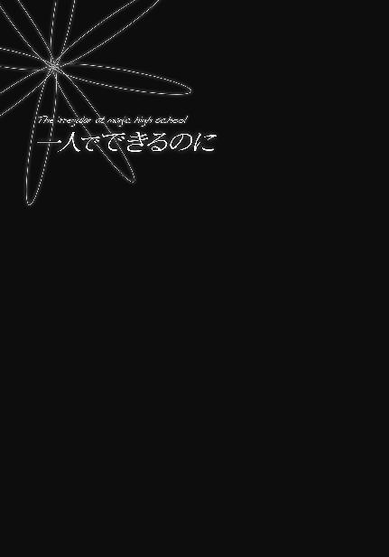
西暦二〇九六年度の九校戦はその準備段階において、突然の採用競技変更で魔法科高校各校のスタッフを混乱の渦に突き落とした。
だが新しい競技要領に基づいて練習を始めた出場選手を戸惑わせたのは、新種目よりむしろペア競技導入の方だった。
西暦二〇九六年七月七日土曜日の放課後。第一高校アイス・ピラーズ・ブレイクペア代表選手に選ばれた千代田花音は、大層不機嫌だった。
その原因は、恋人であり許嫁である五十里啓と別行動を強いられているから、ではない。いや、それも気分を害している大きな理由ではある。だが最大にして主要な原因は、九校戦に向けた練習試合の結果だった。
練習試合といってもあくまで一高内のものだ。試合形式の練習と表現した方が正確かもしれない。対戦カードは花音＆雫のペアチーム対ソロ代表の深雪。演習林の奥にある縦五十メートル、幅二十メートルの野外プールで行われているこの試合の戦績は、現在のところ零勝四敗。深雪の四勝で、花音・雫ペアの四敗だ。
現在、五試合目に向けて氷柱の準備が行われている。準備を行っているのはサポートのメンバーではなく、選手であり練習試合の当事者である深雪だ。
プール内に散らばる氷の残骸と前の試合で使った氷柱を加熱して一気に溶かす。高温の熱源を作り出すのではなく氷の温度を零度以上に設定することで、プールは冷水に満たされる。
それを移動系魔法により二十四本の水柱に変える。移動系魔法は物体の座標を変更する魔法だ。立体的な座標を指定することで、同じ大きさの水の四角柱が同時に形成される。
それを瞬時に凍結。呆気に取られるほどの短時間で、縦横一メートル、高さ二メートルの氷の柱が中央線を挟んで十二本ずつ等間隔に並んだ。
ウォーターアイスカッターで切り出したような滑らかな表面と見ただけでは全く違いが分からない同じサイズの氷柱を、ここまで拘る必要があるのかと呆れ混じりで見ながら、花音は深雪の魔法力に戦慄を禁じ得なかった。幾ら適性が高いとはいえ一本当たり約一・八三トンの氷の塊を二十四本、一瞬で成形しながら整列させるのだ。一体どれだけのキャパシティと事象干渉力が必要になるのか、花音にはちょっと想像がつかない。成形と整列に必要な情報を思い描くだけで頭がパンクしそうだ。
それを自分たちとの試合前に行うのである。そして、自分たちを相手に完全勝利を収めてみせる。一度だけでも癪に障ることなのに、それが四回連続だ。花音でなくても機嫌を傾けるだろう。
「お兄様、準備が整いました」
「ご苦労様。それでは位置についてください」
後半は主に花音たちへ向けて告げた言葉だ。深雪は既に、ピラーズ・ブレイクの試合の際に選手が立つ櫓（祭り櫓のように上面が平らな足場になった塔状の構造物）代わりの足場へ向かっている。達也が深雪に休憩を勧めることも無い。
まるで花音の相手は片手間で十分、とでも言いたげな態度。無論、達也にも深雪にもそのようなつもりは無かったが、花音自身はそう感じた。
負けられない。
今度こそ、一矢報いる。
四試合して深雪の守る氷柱を一本も倒せなかった事実はあえて考えず、花音は五試合目に本番以上の闘志を燃やした。
五試合目が終了した後。花音はすっかりふて腐れていた。折り畳み椅子に腰掛け、ムスッとした顔を明後日に向けて、練習試合の総括をしようとしている達也へ目を向けようともしない。
この大人げない態度にも、同情の余地はある。五試合目も、深雪の氷柱を一本も倒せないまま敗北。五試合して、倒せた氷柱は零本という完敗だ。攻撃を担当した花音がひねた態度を取っても無理はないという結果だった。
深雪と雫が立ったまま「どうしよう」という困惑の表情を向け合っている一方、不機嫌を全身でアピールしている花音にはお構い無しに、達也は彼女へ話し掛ける。
「千代田先輩が攻撃、雫が防御。この戦術は基本的に間違っていないと思います」
もっとも、相手を見ていないのは達也もお互い様だった。彼は花音の競技用ＣＡＤを調整しながら練習試合を振り返っていた。
実はこれも、花音が不満を懐く一因になっている。ちなみに「これ」というのは達也が花音を見ていないことではなく、花音のＣＡＤを達也が調整していることだ。
ペア競技では選手一人一人に別のエンジニアがつく。女子アイス・ピラーズ・ブレイクペアにおける花音の担当は五十里だ。一方、雫のエンジニアは達也で、ソロ代表の深雪のエンジニアも達也。
ソロとペア三人の内、二人を達也が担当する為、女子アイス・ピラーズ・ブレイクの練習は達也が見ることになった。無論最終的に花音のＣＡＤを調整するのは五十里だが、それに必要な練習中のデータは達也が収集して五十里へ渡すことになっている。
それ自体は花音も、理性面では納得している。五十里が本来得意としているのは純理論分野で、実践的な分野で得意と言えば刻印魔法に使われるシンボルの設計と製作だ。起動式の改良はともかく、ＣＡＤの調整は本当のところ、あまり得意ではない。それが分かっているから、花音も調整作業で五十里に負担を掛けたくないと思っていた。
だが、一緒にいられないという不満を押し殺してしまえるほど、彼女の恋心は物分かりが良くなかった。特に目の前で深雪が達也に甘えている姿を見せられると「何故啓じゃなくて司波君なの！」と思わずにはおれないのだ。
「魔法で負けてたんじゃないって言うの？ じゃあ何が間違っていたのよ」
その所為で必要以上に無愛想、かつ喧嘩腰の口調になってしまうのだった。
「間違っていたのではなく、連携の練習不足ですね。今日が初日ですから当たり前ですが」
もっとも、達也は花音から八つ当たりを受けても気にしない。事務的に伝えるべきことを伝えるだけだ。これは彼が大人だからではなく、花音の精神面を気にしていないからだった。彼女の精神面をケアするのは五十里の仕事、と無責任に割り切っているだけなのである。
俗に「好き」の反対は「無関心」という。「可愛さ余って憎さ百倍」という慣用句もあるように「好意」の裏が常に「無関心」とは限らないのだが、人は自分に向けられた「無関心」に「嫌悪」と同じくらい敏感だ。達也の取った態度は、花音をますます苛立たせた。
「......何処が悪かったの」
花音の口調はヤマアラシ状態になっていたが、達也の反応は変わらなかった。──完全に、機械のように事務的だ。
「先輩の魔法発動領域と雫の情報強化領域が少し重なり合っていました」
達也の言葉を受けて、雫が花音の前に立ち頭を下げる。
「すみません、先輩。私のミスです」
このセリフに、深雪が「えっ!?」という表情を浮かべて雫へ目を向けた。
深雪が見た限り、事実はその逆だ。雫は最初、自陣の氷柱に対し個別に情報強化を掛けていた。そこへ花音の振動魔法が深雪の陣地だけでなく自分たちの陣地にも波及した為、雫は情報強化の対象を個々の氷柱から自陣全体へ切り替えたのだ。
しかし雫は深雪の視線に反応を示さず、達也は雫の謝罪に頷いた。
「そうだな。深雪の領域魔法に対抗する為、強化対象を自陣全体に広げたんだろうが、情報強化はやはり領域ではなく個体に掛けるべき魔法だ。それにピラーズ・ブレイクは柱が一本でも残っていれば負けにならないんだから、強化対象を絞り込むことも考慮すべきだ」
雫へのアドバイスを横で聞きながら、自分に分かったことが兄に分からないはずはない、と深雪は思った。これはおそらく、花音の精神状態を斟酌してのセリフだ。
雫も深雪と同じように解釈した。そもそも雫が花音に謝ったのも、同じ理由によるものだ。
「うん、分かった」
だから雫は、達也の必要以上に厳しい指摘にも素直に頷くことができた。むしろ、この場を丸く収めたいという自分の意図をくみ取ってくれたことが雫には嬉しかった。
普段クールなイメージの強い雫が、微かにではあるが撫でられるのを待っている子犬を連想させる愛らしい笑みを浮かべたのは、きっとその所為だ。
その微笑みにつられたのか、達也の唇もわずかに綻んだ。
すかさず深雪が、雫の前へ笑顔で割り込む。
「お兄様、わたしにはアドバイスをくださらないのですか？」
雫が無表情の中に不快感を滲ませた。
達也は「仕様が無いやつらだ」とでも言いたげな、微笑と苦笑の中間の表情を浮かべた。
「深雪が負けたらアドバイスしてあげるよ。ただし、手を抜いたらおしおきだ」
「おしおき......わ、わざと負けるなんてしませんよ。先輩や雫に失礼ですから」
達也のセリフに怒ったような口調で返す深雪だが、逸らした目の周りが少し赤くなっていた。
恋人同士と言うより飼い主にじゃれつく愛犬のような姿に──そもそも達也と深雪は恋人ではなく兄妹なのだが──花音は毒気を抜かれてしまった。達也に対する深雪と雫の懐きっぷりを目の当たりにして、花音は「あたしが本番まで我慢するか」と心の中で苦笑いを浮かべた。
達也が見せたふざけた態度に対する怒りは別にして。
◇ ◇ ◇
「もー、頭にくる頭にくる頭にくる！」
その日の夜。花音は五十里の部屋に押し掛け、昼間の不満をぶちまけていた。
「花音、どうしたの」
幾ら以心伝心の婚約者同士でも、これだけでは何が何だか理解不能だ。五十里の問い掛けは当然のものだった。
「啓、聞いてくれる！」
花音もその質問を予期していたようで、待ってましたとばかり食い付いた。
「バカにされたのよ！ 司波君に！ 本当、腹が立つったら！」
「司波君が？」
五十里が訝しげな声を発する。彼の知る達也は、挑発の目的も無く誰かを面と向かって馬鹿にするような無駄な真似はしない。
「そうよ！ 今日の練習中のことだけど！」
そう前置きして、花音は五連敗後の出来事を語った。
「魔法作用域の重複はあたしの所為よ！ 自分のミスも気づかないほど間抜けじゃないわよ！ それを北山さんの所為にして、あたしが喜ぶとでも思ってるの!? バカにして！」
「......それは司波君が気を遣ったんだと思うよ」
「だからそんな風に気を遣われて満足する程度の女だって思われてるのが腹立たしいの！」
「多分だけど、花音に気を遣ったんじゃないと思うよ」
「えっ!?」
フィアンセが単純に自分を慰めているのではないようだ、と感じた花音は不安げな顔で五十里を見返した。思いがけない恋人の反応に、直前までの興奮は一気に収まっている。
「司波君は気まずい空気になるのを恐れたんじゃないかな。いや、違うか。気まずい空気になって練習が滞るのを恐れたんだ。司波君は種目変更によって時間的な余裕が無くなったことをとても気に掛けているからね」
自分が雫や深雪と気まずくなったら練習に悪影響が出るというのは、花音にも理解できる話だった。だが五十里が達也の肩を持つのが、花音は何となくだが、面白くなかった。
「スケジュールがタイトになっていることを気にしているのは司波君だけじゃないわよ。あたしだって、啓だって、服部君だって、中条さんだって気に病んでいるわ。ううん、スケジュールのことを一番心配しているのは中条さんだと思う」
「そうだね」
五十里は花音の言葉を否定しなかった。笑って聞き流すこともしなかった。大真面目な眼差しで花音の瞳をのぞき込み、脊髄反射的な反発を押さえ込んだ上で「でも」と続けた。
「新競技、新ルールの攻略方法を一番真剣に考えているのは多分、司波君だよ。今年の九校戦で司波君が担当する競技は女子アイス・ピラーズ・ブレイクペア、女子アイス・ピラーズ・ブレイクソロ、女子ロアー・アンド・ガンナーペア、男子シールド・ダウンペア、男子シールド・ダウンソロ、新人戦男子ロアー・アンド・ガンナー、新人戦女子シールド・ダウン、ミラージ・バット、モノリス・コード、女子スティープルチェース・クロスカントリー。種目数で十競技、担当選手数で十一名だ。これは二、三年技術スタッフ六名の中で断トツに多い。僕も多い方だけど、それでも六種目八人だからね」
「たった三人しか違わないじゃない」
花音の反論を、五十里は笑って聞き流した。それが言い掛かりに過ぎないことは、花音にも分かっているはずだったからだ。
「だから司波君は、できる限り効率的に練習メニューを進めたいんだと思う。これを見て」
五十里が手を伸ばして机のラックから電子ペーパーを取り出した。それを花音に見せる。
「......うへっ。こんなに細かく」
そこには練習試合後に毎回計測した花音のデータが詳細に記載されていた。
「学校にいる内に、司波君が僕の端末へ送ってくれたんだ。良く整理されていて感心するよ。これを見れば、どんな調整をすれば良いのかすぐに分かる」
今度は花音もケチをつけなかった。そんなことをしても負け惜しみにしかならないと、魔法工学が苦手な彼女にも理解できた。
「何だか、必要以上に急いでいるような気もするけど......司波君は花音をバカにしたりはしない。それだけは確実だよ。彼はそんな、無意味なことをする人じゃない」
何故達也が焦って時間を捻出しようとしているのか、その理由までは五十里にも推測できなかった。今の段階で五十里に分かっているのは、達也が九校戦対策の仕上げを非常に急いでいるということだけだ。
取り敢えずこの場で花音を納得させるには、それで十分だった。
◇ ◇ ◇
七月十五日、日曜日の午前中。中間試験を挟んで昨日から再開した九校戦の練習で、花音・雫ペアは相変わらず深雪に負け続けていた。
花音はその原因が自分にあると自覚している。彼女の「地雷原」が自陣最前列の氷柱にまで作用している所為で、雫は対温度変化の情報強化だけでなく対振動の情報強化に無駄な魔法力を割いている。その為、ただでさえ事象干渉力で上を行かれている深雪の魔法を防御しきれないのだ。
攻撃の方は、さすがに一本も倒せず終了するということはなくなった。五十里が設計した、縦揺れと横揺れを複雑に組み合わせ氷柱を倒すことに最適化した振動パターンは、深雪にも完封しきれないものだった。
だが今のところ、十二本の内の三本を倒すのが精一杯だ。それまでに、花音側の氷柱が全て壊されてしまう。そのペースは、去年の新人戦で雫が深雪と対戦した試合より早い。深雪も成長しているが、雫だって去年のままではないのだ。一対一より悪い結果になっているということは、花音が雫の邪魔になっているということに他ならない。
元々花音は厳密な範囲制御が得意ではない。威力、スピード、スタミナいずれも一級品だが、精確性に難がある。これは自他共に認める彼女の短所だ。本来であれば花音はペアに向いていないのだが、深雪の「氷炎地獄」はソロでこそ威力を発揮する魔法。深雪の方が魔法の威力でもスピードでも優っている為、花音をペアに回さざるを得なかった。
今年の九校戦は、出場種目の選定段階から花音にとって不本意続きだった。
「一休みしましょう」
達也が休憩を宣言する。
花音は後輩の目を気にする余裕も無く、がっくり項垂れた。
「千代田先輩、考え方を変えましょう」
ベンチに座って呼吸を整えている花音の前に移動した達也が、前置きもなく話し掛けた。
「考え方って？」
自分の前に立ち止まった達也の足は見えていたので、急に話し掛けられても花音は驚かなかった。
「雫も聞いてくれ」
顔を上げた花音と、その前から達也へ目を向けていた雫へ、達也が説明を始める。
「これは千代田先輩に考え方を変えていただくというより、雫に考え方を変えてもらいたいんですが、アイス・ピラーズ・ブレイクは先に相手の氷柱を全て倒すか壊すかした方の勝ちです。自陣の氷柱は、一本でも残っていれば問題ありません」
「そうね」
花音が声に出して、雫が無言で頷いた。
特に花音はその戦法で去年優勝している。改めて言われるまでもないことだった。
「ですから、氷柱を全て守るのは止めましょう」
「......守りを捨てるということ？」
そう質問したのは雫だ。花音は「まさか」という思いに襲われて、咄嗟に反応できなかった。
「部分的に、だ。完全に防御を放棄するわけじゃない」
「なぁんだ」
花音と雫の声が揃った。「なぁ」と間延びしたところまで同じで、傍で聞いていると妙におかしい。実際に、深雪は笑いを堪えている表情だ。
「具体的には」
花音と雫に気を遣ったのか、眉一筋も動かさなかった達也がそのまま作戦プランの説明を続ける。
「一番後ろの一列四本に情報強化を集中し、前二列は捨てます」
達也が雫に目を向ける。雫が達也の視線に応えて頷いた。
「千代田先輩は自陣のことを考えず、敵陣の攻略に集中してください」
「今までもそうしてるけど？」
花音は達也の目を強い眼差しで見返した。
「では、今まで以上に」
達也はあえて引かなかった。
「──了解よ」
実を言えば花音にも、自分が攻撃に専念できているという確信は無かった。自分の所為で味方の魔法同士が干渉し合っていることが、花音はずっと気になっていた。
だが前二列に防御の魔法が作用しないのであれば、自分の魔法と干渉し合う心配はしなくても良くなると花音は思った。幾ら彼女が不器用といっても、自陣の最後列まで誤爆するほどではない。急に肩が軽くなったような錯覚を花音は覚えた。
「それと、これ以上この三人で練習するのは止めましょう」
「お兄様、理由をうかがってもよろしいでしょうか？」
この突拍子もない提案に反応できたのは深雪だけだった。だがさすがの彼女も、今回は兄の真意を理解できなかったようだ。
もちろん訊かれるまでもなく、達也は理由を説明するつもりだった。
「やはりペアとソロでは性質が違う。ペアはパートナー同士の連携が上手く行かないとそれが隙になる。ソロには無い要素だ。ペア競技固有の欠点を突く楽な勝ち方に慣れてしまうと、本番で思わぬ不覚を取りかねない」
達也が練習形式の変更を言い出したのは、何も深雪の為だけではなかった。
「逆にペア競技では、特に攻撃面において相手の連携ミスを突くのが重要な鍵になりそうです。練習でも、そこを意識するべきでしょう」
思い当たる節があるのか、今度は花音も素直に頷いた。
「では、男子の代表と練習するのですか？」
深雪の察しが良い質問に、達也は微かな笑みを浮かべた顔で頷いた。
「ああ。今から相談に行ってくる。すみませんが、少し外します。さっきの戦術プランで練習を続けてください」
「はい」
「うん」
「分かった」
軽く頭を下げた達也に、三人が三様の応えを返す。
「男子ソロのエンジニアは五十里先輩ですから、今後は俺と先輩が交互に練習を見ることになるでしょう」
そう付け加えて、達也は準備棟へ足を向けた。
その一言に深雪は不満げな表情を浮かべ、花音は現金なくらい機嫌を上向かせた。
◇ ◇ ◇
七月二十二日、日曜日。達也と深雪は外せない用事があるとの理由で、今日は午後から練習に参加する予定だ。午前中、野外プールでは五十里が中心となってアイス・ピラーズ・ブレイクペアの練習が行われていた。
「雫、応援に来たよ」
「あっ、ほのか」
ほのかはミラージ・バットの選手だが、担当エンジニアはやはり達也。エンジニア抜きでも練習できるとはいえ、やはり身が入らないのだろう。
プールではサポートメンバーが氷柱を作っているところだ。深雪がやると簡単そうに見えるが、こうして他の生徒が苦労しているところを前にすると、深雪の魔法力が如何に卓越しているかが良く分かる。
「調子はどう？ 新戦術には慣れた？」
ほのかの質問に、雫が微かな苦笑いを浮かべた。
ほのかでなければ、おそらく気づかなかっただろう。
だがほのかには、親友の苦労が手に取るように分かった。
「魔法自体は楽になったけど、違和感が」
「違和感？ 自陣の氷柱を防御しないことに違和感を覚えるってこと？」
「うん。勝敗に関係ないのは、分かってるんだけど」
「雫、負けず嫌いだもんね。自分の氷柱が倒されるのが気に入らないか」
ほのかがクスッと笑いをこぼし、雫が目を背けた。
雫の顔の色に変化は無かったが、ほのかの目には親友が顔を赤くしてそっぽを向いている姿が映っていた。
そうこうしているうちに、氷柱の準備が整った。
「位置についてー」
五十里の声が掛かる。雫がベンチから立ち上がった。
「行ってくる」
「頑張って、雫。......ところで千代田先輩は？」
「あそこ」
雫の視線をたどってほのかが目を動かす。その先には、五十里の腕にしがみついた花音の姿があった。
「深雪でもあれはない」
雫がボソッと毒を吐く。確かに深雪は、どれだけ達也と仲が良いところを見せても、人前で達也に抱き付いたりはしない。兄妹と婚約者を比べてはいけないのかもしれないが、その意味では深雪の方が花音よりも慎みを知っているように思われる。
もっとも、いちゃつく恋人たちの姿に湧いてくるのは、否定的な感情ばかりではなかった。
「あはは......ちょっと羨ましいけどね」
花音を見ていて、ほのかがポロリとこぼした本音に、
「ふぁいとー」
雫が気合いの入っていないエールを送った。
男子対女子の試合だが、一試合一試合の対戦で見るならこの競技に男女の性差は無い。男子と女子に分かれているのは、試合を重ねることによる体力の消耗を考慮してのことだ。練習試合に男女のハンデなど存在しない。
しかしそれでも。
この結果は、男子生徒にとって、へこまずにはいられないだろう。
「勝利！」
花音が得意げにＶサインを見せる向かい側では、敗れた男子ペアが「くっ......」と歯を食い縛っていた。
「花音、練習でそれはやめなさい」
花音がＶサインを向けている相手は、相手ペアではなく五十里だ。花音が傍若無人な性格といっても、さすがにそこまで無神経ではない。だが相手の目の前で勝ち誇っている事実に変わりはないのだ。デリカシーに欠けているのは、恋人の五十里でも否定できなかった。
「はーい」
五十里にたしなめられて、花音が首をすくめる。ただその表情は、叱られて気落ちしているのではなくむしろ楽しそうだった。
構ってもらえるのが何でも嬉しいのだろう。「バカップル」という俗語を思い浮かべたのはツッコミ属性持ちの雫だけではなかった。
「雫、お疲れさま」
再びコート整備の時間となり、雫がベンチへ戻ってくる。本当はＣＡＤのデータを取らなければならないのだが、五十里は今のところ花音に掛かりきりだ。それに、
「すごいじゃない。予定どおり」
ほのかの言うように、達也が立てた防御戦術は完全に機能している。達也の留守中に調整用のデータを取っておく必要は感じなかった。
五十里も花音に小言を与えるだけで、計測や調整に取り掛かる様子はない。選手とエンジニアが焦ってバタバタと動いている男子ペアとは対照的に、女子ペアのサイドはのんびりしたものだった。
◇ ◇ ◇
八月五日、九校戦初日。この日はアイス・ピラーズ・ブレイク・ペアの男女予選とロアー・アンド・ガンナー・ペアが行われる。
「競技時間が重なっていたら、五十里先輩にご迷惑を掛けるところでしたが」
「どうやらその心配は要らなくなったみたいだね」
朝一番の一高テントで大会本部の選手団向け情報ページにアクセスして、達也が安堵したように呟き、それに五十里が笑顔で答えた。彼らが見ているのは本日の試合スケジュールだ。
達也はアイス・ピラーズ・ブレイクで雫を担当し、ロアー・アンド・ガンナーで英美を担当している。これは両者からの強い要望によるものだが、もし英美のレースと花音＆雫ペアの試合が重なっていたら、その試合については五十里に花音と雫両名のフォローをお願いしなければならなかったところだ。
元々アイス・ピラーズ・ブレイクにせよロアー・アンド・ガンナーにせよ試合中に技術スタッフができることはあまり無い。だからペア競技でもスタッフは一人ついていれば問題無いのだが、自分が担当している選手を任せきりにするというのはやはり、達也としても気が引けた。もしその可能性が現実のものとなったなら、彼としても忸怩たるものがあったことだろう。
実際の試合スケジュールは、英美が朝一番の第一走者、雫が四試合目と七試合目。試合の時間が重なることは無い。
達也は五十里に一言断りを入れて、ロアー・アンド・ガンナーの試合コースへ向かった。
その背中を見送ってホッと息を吐いたのは、五十里ではなく雫だった。
「司波君が間に合うと分かって安心した？」
振り返った五十里が、笑いながらそう訊ねる。
まさか気づかれると思っていなかった雫は、恥ずかしそうに目を逸らしながら小声で「いいえ」と答えた。
「そう？ 僕は安心したよ。恥ずかしながら、僕じゃ司波君ほど上手くＣＡＤを調整できないからね。花音の調整は慣れているから大丈夫だけど、北山さんまで担当するのはちょっと不安だったんだ。魔法力が高い人ほど、ＣＡＤの調整も難しくなるから」
「何言ってるの！ 啓だったら大丈夫だよ！」
弱気なセリフを口にした五十里の背中を、花音が平手で叩く。かなり派手な音がしたので結構痛かったはずだが、五十里は困惑気味に笑っただけだ。そもそも彼は本気で弱音を吐いたのではなく、後輩をリラックスさせる為の冗談という側面が強かった。それが手荒い励ましを受けたことで「花音にもそう見えるのか」とかえって不安を覚えたのだった。
「達也さん──司波君が間に合わなくても大丈夫、でした」
雫が何を思ったのか、五十里に向かってそう言った。
「司波君のＣＡＤは試合前の微調整が必要無いくらい、私にマッチしています。そうでなければ私も明智さんも、最初から掛け持ちを認めませんでした」
「あははは、そうだね」
大真面目に語った雫に対して、五十里は乾いた笑いで応えた。
おそらく雫は五十里の不安を解消しようとしたのだろう。五十里もそう受けとった。
しかし雫のセリフは、聞き方次第で「だから五十里先輩には最初から期待していません」と解釈できるものであり、五十里はその解釈に気づいてしまっていた。
雫は気づいていない。
花音も気づいていない。
二人は和やかに雑談を始めた。
二人ともこのまま気づかないでくれ。少なくとも明後日の決勝リーグ終了までは。──五十里は心からそう願った。
ロアー・アンド・ガンナーの試技が終わって達也が一高の天幕に戻った時、女子アイス・ピラーズ・ブレイクはまだ二試合目の最中だった。
「ご苦労様。良い結果が出たみたいだね」
英美たちのレースをモニターで見ていた五十里が、達也を笑顔で労った。
「ありがとうございます。国東先輩と明智さんが頑張ってくれました」
あずさが達也の背後から興奮した声で会話に参加する。
「二人の頑張りはもちろんですけど、司波くんの技術には今回もびっくりさせられましたよ」
終わった競技のことは手短に済ませよう、という達也の目論見は、第三者の割り込みで呆気なく潰えた。
「インビジブル・ブリットを使うのは知っていましたけど、ループキャストを組み合わせるとあんな風になるんですね。まるでマシンガンです」
「ループキャストの効果にも驚いたけど、僕はそれよりインビジブル・ブリットを散弾化した方にびっくりしたな。『一点に圧力を生じさせる』というのはあの魔法式の基幹的な部分だろう？ よく整合性を保ったよね。さすがとしか言いようがないよ」
「基幹部分というほどではありませんよ。圧力を発生させる『基本コード』はあの魔法固有のものですが、照準を定める部分は他の魔法と同じパターンが使われていますから。不可分に見えるのは、吉祥寺真紅郎による偽装です」
「えっ、そうなの!?」
自分の苦手分野が話題になっていた為に口出しを自粛していた花音が、達也のにべもない暴露に思わず声を上げた。
「もしかしたら金沢魔法理学研究所の入れ知恵かもしれませんが。魔法式の公開に当たって、オリジナルの魔法式をわざと分かり難く書き換えてノウハウの流出を防ぐというのは、割とありふれたことですから」
当時十三歳だった吉祥寺が自分で偽装を施したというより、研究所の年長者が偽装を主導したという方がありそうな話だった。
「なるほど～。そんな悪知恵も、司波くんには通用しなかったということですね」
あずさが無邪気に地雷を踏む。
それを達也が起爆させなかったのは、そろそろアイス・ピラーズ・ブレイクの会場に移動しなければならないからでしかなかった。
今年、アイス・ピラーズ・ブレイクはペアが導入された以外に、対戦要領が変更されていた。
去年までは二十四名でトーナメントを行い、上位三名で決勝リーグを行っていた。
だが今年は九チームを三つに分け、三チームで行う予選リーグの各一位三チームで決勝リーグを行う形式だ。一日目の今日は予選リーグ九試合が一つのフィールドで行われる。
花音・雫ペアの初戦は第四試合。相手は去年のバトル・ボードで因縁の七高チームだ。
あの事件が犯罪シンジケートの仕業であり七高もある意味被害者であるということは、既に秘密でも何でもない。摩利の事故に関して七高を恨むのは筋違いだと花音にも分かっている。
だが理屈と感情は別だ。花音は闘志満々でこの試合に臨んでいた。
「それで......その格好で出るの？」
五十里が「噓だよね？」と言いたげな口調で花音に問い掛けた。去年の経験から雫が限りなく本気だと理解していた達也は諦念を持って花音と雫、色違いなだけでお揃いのコスチュームを眺めている。
「そうよ。可愛いでしょ」
そう言って花音がクルッと回った。カランと下駄が小気味の好い音を立てる。
二人の衣装は外出用（というより今や「お祭り用」）の浴衣だった。
五十里が達也に視線で助けを求める。
達也は何を言っても手遅れだと知っていたが、無視を貫くのも五十里に対して不義理に思えたので、取り敢えず口を開いた。
「雫、今年は涼しそうだな」
「任せて。......似合ってる？」
「ああ。去年の青も良かったが、今年の赤紫もよく似合っている」
「ふふっ、ありがと」
五十里が面に絶望を浮かべた。
花音は「司波君でもあのくらいのことは言ってくれるのに」と、婚約者に対してちょっぴり不満げだった。
選手の入場に、観客席が沸いた。ここまでで一番盛り上がっているかもしれない。
フィールド後方の櫓に姿を見せた七高ペアは、お揃いのセーラー服姿だった。それも船員仕様ではなく、二十世紀女子高校生仕様だ。上は半袖の白いセーラーカラー、下は紺のプリーツスカート。涼しげなブルーではなく、あえて紺色をチョイスしたところに七高の拘りが感じられる。──選手たち本人がどう思っているかは別にして。
逆サイドの櫓に登場した一高ペアは色違いの浴衣姿だ。濃い青に花火柄をあしらった大人っぽい浴衣姿が花音、赤紫の生地に同じ系統の色で目立たぬように花火模様を入れた女っぽい浴衣姿が雫。季節的に、正統派で健全な色気を醸し出している。
一高ペアと七高ペア、ビジュアル面の人気は互角だった。
「まあ、観客にどれだけ受けたところで試合の結果には何の影響も無いわけですが」
櫓後方の技術スタッフ用モニタールームで、達也が言うまでもないことをボソリと呟いた。実のところ彼も、女子アイス・ピラーズ・ブレイクのこの習慣には精神的な疲労を感じているようだった。
「選手が楽しんでいるんだから良いんじゃないかな。九校戦にもこういう『お遊び』の部分は必要だと思うよ」
五十里は悩みすぎて、ある種の悟りに至っていた。
「ああ、ようやく始まるようですね」
フィールドの両サイドに立つポールに赤い光が灯った。
光の色が黄色に変わり、更に青へと変わった瞬間が試合開始だ。
達也も五十里も、それ以上無駄口を叩かず選手の背中と、フィールドを見詰めた。
ライトの色が変化する。
黄色へ、
そして、青へ。
轟音が試合会場を襲った。
約一・八三トンの氷柱が倒壊する音だ。
七高陣地の最前列の氷柱が後方に倒れ、他の氷柱にぶつかって折れる、その破壊音。
一本、二本、三本と、続けざまに七高の氷柱が倒される。
七高ペアも、自陣の氷柱が倒されるのをただ見ていたのではない。
四本まで倒された時点で、八本の氷柱が最後列中央を中心に集まって一塊となった。
「なるほど。その手できたか」
呟く五十里の声には余裕があった。確かに氷柱を一箇所に集めれば倒されにくくなる。
「だけどそれは悪手だよ。花音の『地雷原』の前には」
まるで五十里の声が聞こえたかのように、花音が事象干渉力を高めていた。
七高は八本の氷柱を一体化するという防御態勢を完成させたことにより、攻撃に転じた。
続けざまに一高の氷柱が倒れていく。
一本、二本、三本。まるで抵抗を受けた形跡がない。
一高の応援席で悲鳴が上がる。
七高の応援席で歓声が上がる。
アクシデントか！ という声が悲鳴に混じる。
ツイているぞ！ という声が歓声に混じる。
だが七高の猛攻は、八本の氷柱を倒したところでピタリと止まった。
九本目が倒れない。
一高陣地、最後列の四本が微動だにしない。
突然生じた戦況の変化に、圧倒的優位を信じていた七高ペアが、焦った。
七高で防御を担当していた選手が攻撃に回る。
それでも、雫の情報強化を抜くことができない。
そして偶然にも、花音の魔法が完成したのはその瞬間だった。
「油断したな。いや、勝ちを焦ったか」
達也が呟いた言葉は、七高ペアの心理を指してのものだった。
「これで勝ちだ」
五十里が呟いたセリフは、花音が魔法を完成させたことを察してのものだった。
花音の、千代田家の得意魔法「地雷原」。
地面を介して、固体に強い振動を与える魔法。
その激しい振動は氷程度の強度であれば軽々と破壊するだけのエネルギーを秘めている。
氷柱を一箇所に集める戦術は、花音にとって的を一箇所に纏めるものでしかない。
七高の陣地が激しく波打った。
千代田家の「地雷原」は地面を前後に揺らす魔法でも左右に揺らす魔法でもなく、上下の波を作り出す魔法だ。地面に生じた凹凸が短い周期で入れ替わることにより、その上に載っている固体に歪みを生み出し破壊する術式。
一塊になった合計十四・六トンの氷がその振動に耐えることのできた時間は、わずかだった。
一際激しい轟音と共に、全ての氷の塊が砕け散る。
一拍おいて、試合終了のブザーが鳴った。
花音が振り返り、満面の笑みを浮かべて五十里にＶサインを見せる。
その隣で雫が、達也に向かってこっそり人差し指と中指を立てて見せた。
アイス・ピラーズ・ブレイク予選リーグ二試合目の対五高戦も、一高は四本の氷柱を残して短時間で勝利した。
ここに至り、他校のスタッフにも一高女子ペアチームの作戦が明らかなものとなった。
「一試合目のあれもわざとだったのか......」
三高の天幕では、達也のことを過剰に意識する一条将輝が吉祥寺真紅郎にそう話し掛けていた。
「そうだね。ピラーズ・ブレイクは自陣の氷柱が一本でも残っていれば負けにならない。とはいえ結果的に四本残すのではなく、最初から八本も捨てて掛かるなんて......随分と思い切った作戦だよ」
吉祥寺は何処か精彩を欠く声でそう答えた。彼はロアー・アンド・ガンナー女子ペアの最初のタイムアタックで一高の射手が「インビジブル・ブリット」の改造版を使いこなしていたことにショックを受け、まだそこから回復できていなかった。
「ヤツは、いや、一高は何故そんな作戦をとったんだろう？」
「何故って？」
精神活動が停滞している吉祥寺は、将輝の質問の意図を理解し損なった。
いつもの吉祥寺らしからぬ察しの悪さを訝しみながら、将輝は親友の疑問に答えた。
「防御対象を絞り込むことで一つ当たりの防御力を上げ、確実に一本以上の氷柱を残す。一見合理的な作戦に思えるが、これは十二本全ての氷柱を守り切る魔法力が無い選手の戦い方だ。守備側が四本に魔法力を集中するということは、攻撃側もその四本に魔法力を集中すれば良いということになる。リスクは分散すべきであるという原則に従えば、四本の氷柱のみを守るより十二本の氷柱を守る方が望ましい。北山選手にそれだけの魔法力があることは、去年の実績からも明らかだ」
将輝が脳裏に思い浮かべているのは、去年の会場を沸かせた深雪と雫の新人戦女子アイス・ピラーズ・ブレイク決勝戦だ。あの試合で雫は深雪の「氷炎地獄」を形の上では凌ぎきった。深雪は雫を下すのに「ニブルヘイム」のカードを切らなければならなかった。
あの時は深雪の氷柱を攻撃しながら「氷炎地獄」に耐えたのだから、防御に専念できるペア競技で雫が十二本の柱を守れないはずはないと将輝は考えたのである。
「確かに......そうだね」
吉祥寺が考え込んだ時間はわずかだった。一旦回転を始めれば、彼の思考は速く鋭い。
「将輝の言うとおりだ。一高の戦術は防御を担当する北山選手の魔法力不足に基づくものじゃない。問題は攻撃を担当する千代田選手にある」
「しかし、一体どんな問題が？ 一高の千代田は去年の優勝者だぞ」
上級生が呈した疑問に、吉祥寺は少しも考え込むことなく答えた。
「千代田選手が使っている魔法は、千代田家のお家芸である『地雷原』。地面を介して固体に振動を与え破壊する術式です。この魔法は地面を震動させるという性質上、効果範囲を厳密に指定することが不可能と言って良いほど困難です。おそらく一高の戦術は、『地雷原』と防御用の情報強化が干渉し合うのを防ぐ為のものでしょう」
「なるほどな」
吉祥寺に質問した三年男子が頷いた。
今度は別の上級生が吉祥寺に問い掛ける。
「その欠点があっても、千代田さんのあの魔法は脅威だわ。一高に勝つ為には、『地雷原』にこちらの氷柱を壊されてしまう前に北山さんの防御を破らなきゃならないんだけど、何か良い手はない？」
吉祥寺は、自信を感じさせる笑顔で頷いた。
「ありますよ。良い作戦を思いつきました。ディフェンス担当の佐久間先輩にとってはそれほど難しくない魔法を使うものですので、今からでも間に合うと思います。明日までにプランと起動式を揃えておきます」
「そう？ さすがは吉祥寺君ね」
三年生の女子生徒が吉祥寺を称賛する傍らで、将輝が心配そうな目を向ける。
「大丈夫か？ ジョージは明日、ロアー・アンド・ガンナーソロの本番だろう？」
「大丈夫だよ、将輝。今度こそ彼に一泡噴かせてやる」
吉祥寺は将輝に心配無用と笑い掛けながら、首を横に振った。
◇ ◇ ◇
八月七日午後、アイス・ピラーズ・ブレイク女子ペア決勝リーグ。
決勝に進んだのは一高、二高そして三高ペアだ。
ここまで二試合して一高の一勝、二高の二敗、三高の一勝。
次の一高対三高戦でアイス・ピラーズ・ブレイク女子ペアの優勝が決まる。
「午前中の男子は三高に優勝を持っていかれちゃったからね。シールド・ダウンの男子ペアは当校が優勝しているとはいえ、これ以上三高にポイントで離されるのは好ましくない。だからこの試合は是非勝って欲しい」
一高の控え室では、五十里が珍しく精神論で発破を掛けていた。
「もちろんそのつもりよ。次の試合、絶対勝つ！」
基本的にパッションを原動力としている花音が、これに力強く頷く。
「では作戦ですが、千代田先輩については変更ありません。前の試合と同様、攻めに集中してください」
対照的に冷静な口調で、達也が口を開いた。
「任せなさい！」
「お願いします。次に雫だが、作戦を少し変える。防御の対象を最後列四本から、最後列四本と中列左右の合計六本とする。座標データは起動式に組み込んであるから、この変更について特に意識する必要は無いはずだ」
「達也さんに任せる」
直前の戦術変更に、雫は全く動揺を見せなかった。自ら言明したように、今日の試合に関して彼女は達也に全幅の信頼を置いていた。
「それと、これを袂に隠しておいてくれ」
そう言って達也が雫に渡したのは、ショートタイプの拳銃形態ＣＡＤ。去年の新人戦でも使った「フォノンメーザー」の、改良型の起動式を仕込んだデバイスだった。
「？」
「北山さんも攻撃に参加させるの？」
雫が不思議そうな表情で小首を傾げた横で、花音が棘のある声を発した。雫にフォノンメーザー用のＣＡＤを渡すということは、達也が花音一人では攻撃力が不足する可能性があると見ていることを意味する。花音が機嫌を傾けても当然だった。
「三高が小細工をしてくる可能性があります。それでも千代田先輩一人で問題無いと思いますが、攻略に時間を掛けたくありません。吉祥寺真紅郎なら、俺が思いもつかない手を用意しているかもしれませんから」
そう前置きして、達也は予想される三高の「小細工」について語った。
彼の話を聞き終えた花音は呆れ顔を隠そうともしなかったが、雫がフォノンメーザーを使うことについては了承した。
一高ペアと三高ペアが櫓の上で向かい合う。花音と雫は人気急上昇中の浴衣姿。一方の三高ペアはミリタリー調の詰め襟に鉢巻きという、気合いがオーバーフローを起こしそうなコスチュームだった。
「三高は随分自信ありそうだね。やっぱり、吉祥寺君が何か仕込んでいるんだろうか？」
「無策であるはずはないでしょう。それはこちらも同じですから」
「そうだね」
そう言って五十里は失笑を漏らした。
「果たして吉祥寺君は、司波君の予想を超えられるかな？」
心配ではなく期待感が込められた五十里の独白に、達也も思うところが無いではなかった。
だがツッコミを入れることはできなかった。
上級生だから、ではない。試合開始のランプが点灯を始めたからだ。
赤から黄色へ。
黄色から青へ。
その瞬間、いつもの轟音がスタンドを揺らした。
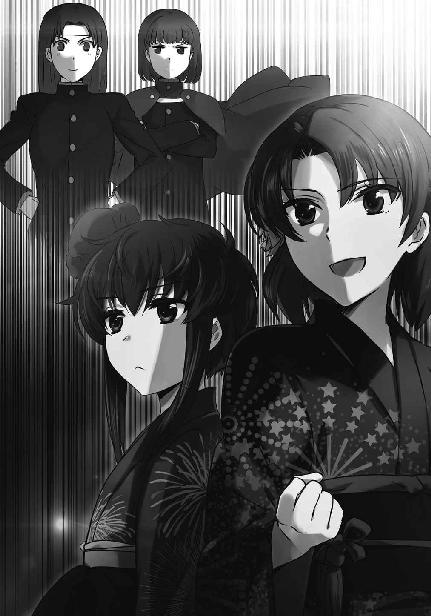
次々と倒されていく両チームの氷柱。
一高にとっては想定どおりの展開。
三高にとっては、意外な展開。
「中列の氷柱が何故倒れないんだ！」
「防御用魔法の構成を変えてきたのか！ 相変わらず、小細工を！」
三高の天幕では、中列左右の氷柱が防御されていることに驚きの声が上がる。
「問題ありません。この程度なら予想の範囲内です」
動揺する上級生を、吉祥寺が落ち着いた声でたしなめる。
「モニタールーム、選手に動揺は見られませんね？」
『大丈夫よ。こうなることは、吉祥寺君にあらかじめ聞いていたから』
通信機を介した吉祥寺の質問に、モニタールームの技術スタッフからしっかりした声で答えが返った。
「さすがはジョージだな。アイツが起動式を変えてくると読んでいたのか」
「去年もやられたことだからね」
将輝の問い掛けに、吉祥寺が余裕のある口調で答えた。
「でもこの程度ではこちらの作戦に何の影響も無い。一本ずつ壊していくだけさ」
「北山さんの情報強化を抜いたか......やはり三高は手強い」
雫の氷柱の七本目が砕かれた瞬間、五十里が独り言のように呟いた。
「敵の魔法は振動系『無炎加熱』、発散系『融解』、加重系『破城槌』ですね。自分より干渉力に勝る魔法師の情報強化に対しては系統の異なる魔法を細かく切り替えることで揺さぶりを掛けるのが定石ですが、基本に忠実な戦法です」
「基本に忠実ということは、言い換えれば正統的で効率的ということだよ。司波君には釈迦に説法かもしれないけど」
「いえ、むしろ耳が痛いですね。俺は魔法力の不足を補う為に奇策へ走りがちですから」
「そうかな？ 司波君の作戦は実に合理的だと思うけど。力で大きく勝っている場合は力押しが一番の近道、という司波君の言葉には目から鱗が落ちたよ。僕は花音が力尽くに走らないようブレーキを掛けてばかりだったから」
「去年のアイス・ピラーズ・ブレイクは力尽くそのものだったと思いますが」
「あれは僕が花音に押し切られたんだ」
五十里が苦笑いを漏らしたちょうどその時、雫の八本目がへし折れる。
それでも、達也たちに慌てた様子はない。
「花音はあと二本か。さて、司波君の予想は当たるかな。どう思う？」
「このまま普通に防御してくれた方が、簡単に済みます」
達也の自己中心的な物言いに、五十里は思わず噴き出した。
「残り二本か......向こうは残り四本」
「やはり苦しい展開になったね。使わずに済めば、それに越したことはなかったけど」
将輝の呟きに、吉祥寺が苦い声で応えた。
その直後、三高の天幕内で悲鳴が上がる。
モニターの中では三高の十一本目が倒されていた。
そして最後の氷柱が、底面の頂点の一つを除いて、宙に浮いた。
スタンドが大きくどよめくのを聞きながら、五十里はクスクスと笑いを漏らした。
「すごい！ すごいよ、司波君！ まさか本当に、君の言ったとおりになるなんて」
三高最後の氷柱は、底面の一点を除いて宙に浮いていた。まるで体操選手が片手倒立しているみたいな姿だ。
「アイス・ピラーズ・ブレイクのルールでは氷柱を完全に空中へ持ち上げるのは禁止されています。言い換えれば、一点でもフィールドに接触していれば良いわけです」
「そして花音の『地雷原』は地面に『面』で接触していなければ十分な効力を発揮しない。点で立っている物には上下動が伝わるだけで歪みが生まれないからね。さすがはカーディナル・ジョージ、『地雷原』対策としては満点だ。『地雷原』対策は」
「吉祥寺真紅郎はどうも、本調子ではないようですね。こんな単純な見落としをする男ではないはずですが」
達也がため息を吐くような口調でそう言うのと同時に、雫が左手で右の袂から拳銃形態のＣＡＤを抜くのが見えた。
格納した起動式は「フォノンメーザー」。ただしＣＡＤの先端を起点とするのではなく、任意の座標に発射ポイントを作り出す改良型だ。
超高振動により量子化し熱線と化した音が三高陣地の中央付近、倒された氷柱が邪魔にならない地点に生じ、そこから水平に走って地面と接触した氷柱の一頂点を撃つ。
氷柱を正面から貫通するには雫のフォノンメーザーでも一瞬というわけにはいかない。
だが、頂点部分を融かすだけなら、瞬きするほどの時間も必要無い。
三高の氷柱は、地面との接点を失った。
その瞬間、「地面と接触した一点で立つ」という魔法の定義が破綻する。
不自然な状態で立っていた氷柱は、たちどころにバランスを失う。
その結果はただ一つ。
地響きを立てて氷柱は倒れ、
試合終了のブザーが鳴った。
会場内ケーブル放送を映し出したモニターは、手を取り合って喜ぶ浴衣姿の少女二人を映している。
その前には、信じられないという顔で吉祥寺が硬直していた。
「......ジョージ、その」
気まずげな声で将輝が声を掛ける、それが合図になった。
吉祥寺が立ち上がり、脇目も振らず天幕の外へ駆けていく。
将輝は親友の背中に、掛ける言葉を持たなかった。
「えっへっへぇ、勝利！」
控え室で合流した花音が、五十里に会心の笑みとＶサインを向ける。
「優勝」
雫が微かな笑みと共に右手を挙げた。
浴衣の袖を摑んだ右手は、恥ずかしそうなＶサインを作っていた。
八月七日、九校戦三日目終了時点で、三高はまだ一高を百ポイントもリードしていた。
だが直接対決の決勝戦を制したこのアイス・ピラーズ・ブレイク女子ペアの試合結果が、一高にとって翌日から始まる反攻の狼煙になったのは、多くの者が認めるところである。
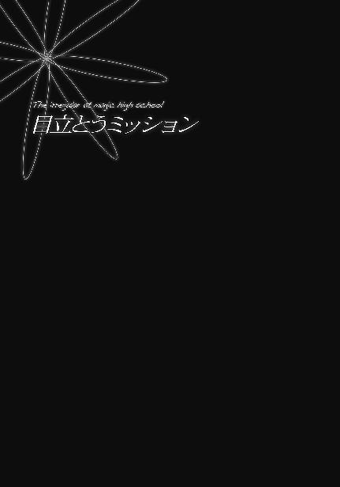
［１］
西暦二〇九六年度の九校戦を間近に控えた七月二十二日、日曜日。
黒羽文弥と亜夜子の双子の姉弟は四葉本家を訪れていた。
目的は十師族・九島家が秘密裏に進めている魔法兵器開発に関する調査結果を真夜に報告すること。文弥はこの調査に直接携わってはいなかったが、別の任務で手が空かなかった父・貢の代理として亜夜子に付き添っているのだった。
真夜は亜夜子から受けた報告に満足している様子だ。労いの言葉を掛けて楽にするように言うと、寛いだ表情で──今までリラックスしていなかったという意味ではなく、仕事中ではないオフモードでという意味だ──二人にお茶菓子を勧めた。
昔の君主は毒入りの茶菓子をそれと分かるように出して、それを食べるか否かで忠誠心を量るなどということもしていたようだが、真夜はそんな無意味なことなどしないし、文弥たちもそのような懸念は懐いていない。茶菓子に手を伸ばす二人の動作が躊躇いがちなものだったのは、真夜自らに勧められたことに対して恐縮していただけだった。
このように、文弥たちは到底リラックスしていると呼べる状態から程遠かった。二人のそんな初々しい様を見て、真夜が悪戯心を起こさなかった、とは言えない。
「そういえば、もうそろそろ九校戦ね？」
「はい」
真夜の問い掛けに、文弥が緊張を孕んだ声で応える。いや、緊張と言うよりむしろ、警戒だろうか。
「九校戦には二人も出場するのでしょう？」
「はい、伯母様」
亜夜子が真夜に対して「伯母様」と呼び掛けるのは、真夜からそう呼べと言われているからだ。双子の父、黒羽貢は四葉真夜の従弟で、亜夜子から見た真夜は正確に言えば「伯母」ではない。亜夜子も第三者に対しては「ご当主様」あるいは「真夜様」と呼んでいる。
真夜も文弥に対しては「伯母と呼べ」とは要求しない。ただ、変装（女装）している時には「伯母」と呼ばせているところを見ると、女の子は「伯母様」と呼ぶ方が可愛いから、という理由かもしれない。
「わたくしたちは二人とも新人戦に出場いたします」
もっとも、亜夜子本人はその使い分けに慣れてしまっていて、もう違和感を覚えなくなっていた。
「新人戦に？ 貴方たちの実力なら本戦に出すべきだと思うけど......」
真夜が言外に「四高なら特に」と言っているのを、文弥も亜夜子も正しく理解した。
「しかし、わたくしたちが本戦に出場するのは少々目立ちすぎではないかと」
「そう思って、新人戦に出場させてもらえるよう、それとなくお願いしたのですが......」
つまり四高内でも、二人を本戦で使おうという意見があったということだ。それを裏工作で回避したということだろう。諜報の専門家である黒羽家の子女らしい話だ。
「余計な真似だったでしょうか？」
文弥が恐る恐る真夜に訊ねる。隣の亜夜子も肩に力が入っていた。
「余計な真似ではないけど......」
真夜が少し考え込む素振りを見せる。文弥と亜夜子は、息を詰めて続くセリフを待った。
「そうね。新人戦でも構わないでしょう」
ただでさえ背筋をピンと伸ばして座っていた双子が、棒を吞んだような姿勢で固まる。二人にはまだ、椅子の背もたれに身体を預けて真夜の命令を拒む達也のような真似はできない。
「文弥さん、亜夜子さん、九校戦では手を抜く必要はありません。全力を出しなさい」
文弥も亜夜子も、真夜の命令には即座に「畏まりました」と答えるつもりだった。
だが、現実には。
「はっ？ はい」
文弥はこの反応だった。
「はい。......しかしそれでは、必要以上に目立ってしまうのではないかと」
亜夜子は文弥より随分とましだった。それでも歯切れが悪いこと、この上ない。それも無理のないことで、彼女は──亜夜子だけでなく文弥も──四葉家当主に対する忠誠心を父親の貢から刷り込まれている。黒羽家は裏仕事が多い四葉の中でも更にその暗闇奥深くを担当している。
闇の中の闇。非合法性が強いからこそ、絶対に裏切らないことが必要だ。文弥と亜夜子に徹底的な「当主への服従」が刷り込まれているのも二人の立場を考えれば当然のことだった。
逆に言えば、それだけ強く服従を刷り込まれていても反問しなければならないほど、意外な命令だったということだ。
「そうですね、亜夜子さん。貴女たちが本気を出せば、去年の深雪さんや達也さんに負けず劣らず人目を引くでしょう」
「ご当主様、それが狙い......なのですか？」
文弥の問い掛けに、
「ええ、そうですよ、文弥さん」
真夜がにっこり笑って頷いた。
「今年は七草家の下のお嬢さんたちも新人戦に出てくるでしょうし、七宝家の長男も必死にアピールを図ってくるでしょうね。そこに、四葉家に関係があるかもしれない貴方たちが華麗な活躍を見せてくれれば、深雪さんや達也さんに注がれる目も分散されるのではなくて？」
そこまで言われれば、二人にも真夜の意図が理解できた。
「お考えは分かりました」
だが、理解と納得は別物だ。
「しかしそれでは、今後の任務に差し支えが出るのではないかと思うのですが」
普通に考えれば、亜夜子の言うことの方が正論だ。諜報員の顔が売れても良いことはない。
「それは心配しなくても良いわ」
しかし、真夜は自分の真意を明かすことなく、亜夜子の正論をあっさり却下した。
「今は、九校戦でしっかり活躍することだけを考えなさい。私も楽しみにしているわ」
「はい、頑張ります」
「ご期待に添えるよう努めます」
文弥と亜夜子は視線を合わせることもなく意思を通わせ、真夜の命令を受諾した。
◇ ◇ ◇
文弥と亜夜子が退出したのを見送って、真夜はテーブルのハンドベルを振った。
すぐに扉をノックする音がしたのは、ハンドベルで呼ばれるべき相手が隣室に控えていたからだろう。
「入りなさい」
「失礼します」
真夜の声に応えて扉を開けたのは葉山執事だった。
「葉山さん、早速ですけど貢さんに連絡を取ってくださいな」
「畏まりました。例の件でよろしいでしょうか」
「ええ、そうよ。......あっ、ちょっと待って」
一礼して退出しようとしていた葉山を真夜が引き留めた。
「やっぱり、私が直接お話します。こちらにつないでください」
「はい、奥様」
葉山が部屋の隅に置かれているアンティークな音声通話機を操作し、貢を呼び出す。
電話はすぐにつながった。黒羽貢も、真夜のナンバーから発信された電話は無視できないようだ。
葉山は電話口で短い会話をやり取りした後、受話器を恭しく真夜へ差し出した。──アンティークなデザインにも拘わらず、受話器はコードレスだ。
真夜が受話器を受け取り「もしもし」と話し掛けると、彼女の耳元から調子の良い声が流れ出した。
『おお、麗しの従姉殿。我が愚息どもが何か粗相をやらかしましたか？』
「いえ、立派にお務めを果たしていましたよ」
『そうですか。それは重畳。さすれば、本日はどのようなご注文でございましょう？』
「その前に、貢さん。偶には動画電話に出られないんですか？」
『その点につきましては私としてもまことに遺憾。花も恥じらい月も隠れる従姉殿の麗容を拝見できないのはとても残念なのですが、何分任務中でして』
「貢さん。このようなことを申し上げるのは心苦しいのだけど、最後の一言だけで結構よ」
『これは手厳しい。それで、お電話いただきましたのはどの件でしょうか』
貢がようやく仕事の声になったので、真夜も意識を切り換えた。
「ご子息たちの件です」
貢から声が返ってくるまでに、少しの間があった。
『......分かりました。すぐに手配します』
その間が貢の心中を物語っていた。
「貢さん。貴方に不満があるのは分かっているけど、これはご子息たちの為にもプラスになることだと私は思っています」
『不満などありませんが、プラスと仰いますと？』
それは黒羽貢らしくない反抗だった。貢としても、文弥と亜夜子を当て馬にするだけならそれほど抵抗は無かっただろう。だがそれが誰の為のものかを考えると、素直に受け容れられないのだった。
「私はご子息たちを諜報の現場に使うのはもったいないと思っていますの」
『もったいない、ですか？』
「相手に傷一つ付けず無力化する文弥さんの魔法。自分だけでなく味方の姿までほぼ完全に消し去ることのできる亜夜子さんの魔法。どちらも一人の諜報員で終わらせるにはもったいないと思いません？」
『二人の魔法は、諜報向きだと思いますが』
「そうですか？ まあ、私が当主の内は、もっと他にも色々やって欲しいと思っているだけなのですけど」
貢には、返す言葉が無かった。真夜に当主の権限を持ち出されては、何も言えない。
「今回お願いする件も、その一環です。色々と不服もあろうかと思いますが、よろしくお願いしますね」
『不服など滅相もありません。ご命令のとおり、手配いたします』
「よろしくお願いします、貢さん」
貢の回答に満足して、真夜が受話器を葉山に渡す。
「葉山さん」
「はい、奥様」
葉山は受話器を通信機に戻し、真夜の前に戻った。
「文弥さんと亜夜子さんの件、貢さんは一応引き受けてくれましたけれど、本心は今でも反対でしょう」
「サボタージュの可能性があると？」
葉山の問い掛けに、真夜が苦笑いを漏らす。
「そうね、この程度のことで反旗は翻さないでしょうけど、手を抜く程度のことはするかもしれないわ。だから葉山さん、噂の動向をチェックさせてちょうだい」
「黒羽殿の御仕事ぶりを観察せよとの仰せですか？」
「ええ。噂の浸透速度を観察して、予定どおり広まっていないようなら教えてください」
「畏まりました」
葉山が恭しく頷く。だが、彼のセリフはそれで終わりではなかった。
「しかし奥様、黒羽様のご懸念も当然かと存じますが」
急に始まった葉山の諫言に、真夜が眉を顰める。
「貢さんの懸念......？ 何のことかしら」
真夜は惚けたのではない。本当に心当たりが無かったのだ。
「黒羽を名乗る者は四葉の縁者であるという噂が広がってしまえば、今後黒羽様の活動に支障が生じるかもしれません。黒羽様は多くの場面で本名を名乗っておいでですので」
それが分かったから、葉山も重ねて諫めるのではなく自分の懸念を伝える形で注意を促した。
「ああ、そのこと」
真夜の顔に納得の色が浮かぶ。
「確かに、多少動きにくくなるでしょうね。でもそれは計算の内よ」
だがそれは、想定内の指摘を受けたことに対する納得の表情だった。
「黒羽様の活動に掣肘を加えることも目的なのですか？」
「最近、貢さんたちに頼りすぎているきらいがありましたからね。他の分家の方々にも仕事を与えないと、実戦の勘が鈍ってしまうでしょう？」
黒羽家にばかり頼りすぎるのはパワーバランスの観点から好ましくない、という真夜へ、葉山は同意の印に一礼した。
◇ ◇ ◇
四葉本家からその日の内に自宅へ戻った亜夜子・文弥姉弟は、夕食後、弟の部屋で一緒になって首を捻っていた。
「やっぱり『ダイレクト・ペイン』はまずいよね」
「上手く『幻衝』と錯覚させられれば使えるんじゃない？」
二人が悩んでいるのは、「何処まで全力を出しても良いのか」ということだった。
真夜から「九校戦では全力を出しなさい」と命じられた文弥と亜夜子だが、二人ともその命令を額面どおりには受け取っていない。全力を出すこと、イコール手の内を全てオープンにすることではないと理解していた。
達也の「雲散霧消」のように軍事機密として使用が禁じられているのとは別に、九校戦のような他人の目がある場所で切り札となる魔法を隠している魔法師は少なくない。「とっておきの奥の手」はいざという時の為に「とっておく」から「奥の手」となり得るのである。
例えば十文字克人は九校戦で「攻撃型ファランクス」を見せることは最後まで無かった。七草真由美は敵を低酸素状態に陥れる「ドライ・ミーティア」を見せなかった、渡辺摩利は「ドウジ斬り」どころか「圧斬り」すら披露しなかった。
克人はともかく真由美と摩利は出場競技の性質上、使う機会がそもそも無かったという事情もある。だが仮に男子のモノリス・コードのような競技が女子にもあったとしても、やはり「ドライ・ミーティア」や「ドウジ斬り」は使わなかっただろう。魔法は、競技だけに使うものでは無いのだから。
「逆に『幻衝』だけでは決定力に欠けるでしょう？ 真夜様は派手な活躍をご期待なんだから、『ダイレクト・ペイン』を『幻衝』に偽装して、両方を上手く織り交ぜながら使うべきじゃないかしら」
文弥固有の魔法と言える「ダイレクト・ペイン」。相手の精神に直接痛みを与える系統外・精神干渉系魔法は、確かに想子の波をぶつけて「打たれた」あるいは「撃たれた」と錯覚させる「幻衝」と表面的に似ている。錯覚を使って攻撃対象にダメージを受けたと思い込ませる「幻衝」に対して、攻撃対象の精神に直接痛みを知覚させる「ダイレクト・ペイン」。そのシステムはまるで異なっているが、肉体に作用する現象を伴わずに痛みを与えるという点は同じだ。
「そうだね......」
「じゃあ文弥は『幻衝』を連続発動する練習ね」
亜夜子から向けられたセリフに、文弥がため息を漏らした。
「無系統魔法はあまり得意じゃないんだけどな......」
「贅沢言わないの」
愚痴を漏らした弟の背中を、亜夜子が平手で叩いた。
文弥が呻き声を漏らす。
それほど強く叩いたように見えなかったが、結構力が入っていたのだろうか。
「貴方はまだ使える魔法があるから良いじゃない。私なんて、何を使えばご当主様のお心に添えるのか分からないんだから」
他人のいる所では「わたくし」という上品な一人称が定着している亜夜子も、家族の前では自分のことを「私」と呼ぶ。その一人称に相応しい、程々に女の子らしい口調で亜夜子がそうぼやいた。
「九校戦じゃ『極散』は使い途がないし、『瞬間移動』はルールで禁止されているし......」
亜夜子の愚痴が的確すぎて、文弥は何と答えれば良いのか分からなかった。姉の言うとおり、九校戦で「極散」は使いようがない。指定領域内における任意の気体、液体、物理的なエネルギーの分布を平均化し識別できなくする魔法「極致拡散」、通称「極散」。その主な用途は自らが、あるいは仲間が発する音を識別不能にし、反射する光を知覚できなくして敵に発見されなくすること、つまりは隠密行動だ。モノリス・コードならば使えるかもしれないが、モノリス・コードは男子専用の種目。それに、「使える」ということと「使って良い」ということは別問題だった。
また亜夜子が得意とするもう一つの魔法「瞬間移動」、正確には「疑似瞬間移動」も九校戦では使えない魔法だ。こちらはルールで禁止されている。「疑似瞬間移動」は自分、あるいはパートナーとなる味方を空気の繭で覆い、慣性を中和し、真空チューブの中を一瞬の内に移動させる魔法だ。この高速移動手段に出番があるとすればミラージ・バットだが、真空チューブが他の選手の妨害と見做される為、実際に使うと反則で失格になってしまう。
「そうだ」
そこまで考えて、文弥が閃いたとばかり握った拳の小指側を掌に打ち合わせた。
「要するに真空チューブを作るのがルールに引っ掛かるんだ。進行方向の空気を『拡散』させながら跳べば反則にならない」
文弥の思いつきを訊いて、亜夜子が嫌そうに顔を顰めた。
「文弥......『疑似瞬間移動』でわざわざ真空チューブを作るのは、余分な工程を挿んでもその方が魔法として容易だからなのよ。第一『拡散』は分布を均一化する魔法だから、進行方向の空気が移動する術者の纏う空気の繭に圧されて密度が上がらないと機能しないわ。それって普通に空気を押しのけながら跳ぶのと変わらないんだけど」
「だったらなお良いじゃないか」
しかし文弥は自分の思いつきに捕らわれていた所為か、亜夜子の不満に、まともに取り合わなかった。
「特殊な魔法を使わずに実力を見せつけることができれば、間違いなく目立つよ！」
「それはそうかもしれないけど......私は瞬間移動が得意なのであって、跳躍が特別に得意なわけじゃないわよ」
「大丈夫だよ。真空チューブで空気抵抗が無くなっても慣性はあるんだ。瞬間移動は、移動魔法と慣性中和魔法の速やかな同期が鍵になる魔法じゃないか。空気抵抗があったって、姉さんの移動速度についていける女子高校生なんていないよ。深雪さんでも無理じゃないかな」
亜夜子の眉がピクリと動いた。深雪にも無理、と言われて対抗心が頭をもたげたのだ。
文弥にそんなつもりは無かったのだが、結果的に彼は、亜夜子にやる気を出させる最も効果的なツボを押したのだった。
「そう......ね。文弥の言うことも、一理あるわ。やってみようかしら」
亜夜子がお手軽な性格だ、ということは決してないはずだ。
「そうだよ。姉さんならやれるって」
むしろここは、幾ら双子といえど意図せず亜夜子をここまで乗せてしまう文弥に、空恐ろしさを覚えるべきかもしれない。
◇ ◇ ◇
第四高校が九校戦の成績に反映するような戦闘向きの魔法より、技術的な意義の高い複雑で工程の多い魔法を重視するようになったのは、主として第三高校の次に設立されたからという単純な理由による。三高が尚武の校風を掲げ、一高、二高に比べより実践的（実戦的）な魔法教育を謳ったのを受けて、その次に設立された四高は対照的な方針を半ば自動的に与えられた。
しかし四高の生徒が他校の生徒に比べて戦闘面で劣っているかというと、決してそんなことはない。技術者的な傾向を持つ生徒が多いのは確かだが、彼らはあくまで魔法の科学技術的側面を重視しているだけにすぎない。
「疑似瞬間移動を反則にならないように改造する、か......」
「難しそうですか？」
「いや、要するに真空チューブを作らずに空気抵抗を減らせば良いんだろう？ できるさ」
亜夜子に相談を持ち掛けられた三年生の男子生徒は胸を張って請け合った。可愛い異性の後輩に良いところを見せようとした、という面が無かったとは言えないが、それよりも四高の意地に掛けて技術的な工夫の領分で「できない」とは言えないという面の方が強い。
「まあ！ さすがですね、鳴瀬先輩」
「お、おう。任せておけって」
たとえ亜夜子に煽てられて鼻の下を伸ばしていようと、四高生の矜持がチャレンジ精神の源泉であるはずだった。
ちなみにこの「鳴瀬先輩」──鳴瀬晴海は雫の従兄である。雫の母、晴海の伯母である北山紅音、旧姓鳴瀬紅音は生粋の武闘派魔法師だったが、晴海自身は技術系志向の高校生だ。四高の中では実技の成績もトップクラスである為、九校戦には選手として出場する。だが、晴海本人はエンジニアとして参加したいというのが本音だった。その為か積極的に、下級生の起動式アレンジに手を貸していた。
真夜から「目立ちなさい」という任務を与えられた翌日の月曜日。亜夜子はこうしてちゃっかり任務遂行の協力者を確保していたが、文弥は自分で試行錯誤し首を捻っていた。
ところで、文弥は美少年である。それも女装すれば「美少女」で通る可愛い系の美少年だ。成長が遅いのか背も低い方で、激しいトレーニングにも拘わらず手足も太くならない。
「黒羽くん、もっとあたしたちのこと、頼ってくれて良いからね？」
「はい、ありがとうございます。分からないところがあったら質問させてください」
「うん。本当に、遠慮しなくて良いからね？」
上級生の女子にすれば庇護欲をそそるというか、ついつい構いたくなる外見の文弥は、さっきからこんな風に女子の技術スタッフから声を掛けられていた。
こういう可愛がられ方は、文弥にとって愉快なものでは無い。彼は達也のようにクールで頼られる男（文弥主観）を目指しており、マスコット扱いは不本意だった。
だからといって先輩の女子生徒に邪険な対応をするほど、文弥は子供ではない。いや、この面で彼は年齢以上に大人だった。すり寄ってくる女子に愛想良く対応し、かつキッパリした態度で手助けの申し出を断る。無愛想に断られたなら女子生徒の間に文弥に対する反感が芽生えただろう。だが美少年が笑顔で一人一人丁寧に応対しているのだ。キッパリした態度はむしろ「案外男らしい」という好感度アップの山を築いていた。
任務と直接の関係は無いことだが、文弥も亜夜子も四高内で着々と「目立ち度数」をアップさせていた。
◇ ◇ ◇
九校戦をまさに間近に控えた七月末。関東、東海地方在住の魔法師を中心に、奇妙な噂が流れ始めていた。
十師族・四葉家。世界最強の魔法師の一人、四葉真夜を当主に戴く日本で最も有力な魔法師集団の一つと見做されている一族。しかしその本拠地は杳として知れず、構成メンバーも当主の四葉真夜以外は謎に包まれている。
しかし、その秘密のヴェールに包まれていた構成員が判明したというのだ。正確には、四葉家の縁者らしき家系の苗字が一つ分かった、というもの。四葉の血縁に「黒羽」という家があるらしい、という噂だった。
魔法関係者の間に流れている情報は、「黒羽」という苗字のみ。フルネームは何というのか、何処にいて何を表向きの職業としているのか、独身なのか結婚しているのか、子供はいるのかいないのか、詳しいことは一切不明。それが余計に人々の興味を呼んでいた。
「黒羽さん、君、もしかして四葉の関係者？」
本人にこう訊ねた──面と向かって、でないのはＣＡＤの調整中だからだ──鳴瀬晴海は、心の芯がかなり剛胆な少年だと言えるだろう。あの噂が広まって以来、四高内では文弥と亜夜子に対して極力その話題を避ける空気が蔓延している。
その中でこの質問だ。周りで作業していた生徒たちも、手を止めて耳をそばだてている。
「違いますよ」
晴海の質問を、亜夜子は笑って否定した。彼女たちに許されているのは「黒羽亜夜子は四葉の関係者かもしれない」と思わせるところまでで、「黒羽亜夜子は四葉の関係者だ」という噂が出回るのは許容範囲を超えている。
聞き耳を立てていた生徒たちが肩透かしにあった表情で作業に戻る。だが晴海はこの一言だけで終わらせなかった。
「本当に無関係？ 君たちの魔法って、どう見ても十師族並みなんだけど」
晴海が手元のＣＡＤから目を離し、顔を上げて亜夜子と視線を合わせる。
亜夜子はにっこり笑って晴海の目を見返した。
「光栄ですわ、鳴瀬先輩。わたくしも十師族に匹敵すると謳われた鳴瀬紅音さんのような立派な魔法師になりたいと思っております」
亜夜子の鮮やかな返しに、晴海が苦笑いを浮かべる。
「今は北山紅音だけどね」
晴海としては、こう言い返すのが精一杯だった。
「そうでしたわね。失礼いたしました」
高校生であることを考慮しても少し大人げない晴海の揚げ足取りにも、亜夜子の笑顔はまるで揺るがない。
「いや。こっちこそ変なことを訊いて悪かった」
晴海もむきになることなく、手元のＣＡＤへ目を戻した。
このように四高内では亜夜子と文弥が上手く立ち回っていた為、二人を四葉家と結びつける憶測はすぐに下火となった。しかし世間には、「四葉家の縁者である黒羽家」の噂が着実に広がっていた。
こうなると噂の真偽を確かめようと嗅ぎ回る人間が増えてくる。「黒羽」という苗字は国内にありふれているというほど多くはないが、特に珍しいというほど稀でもない。
だが「黒羽という苗字の魔法師」であれば、数はそれほど多くない。虱潰しに調べ上げることも、費用を惜しまなければ可能だ。そして四葉家に関する情報は、コストを度外視する価値がある、と考える者が少なくなかった。
「姉さん」
「ええ......今日もいるわね」
九校戦の練習を終えて校門を出た文弥と亜夜子は、尾行がついたことにすぐ気づいた。これで三日連続だ。一昨日は自分たちが見張られていることに緊張を覚えた二人だったが、三日目ともなると「またか」としか思えなくなっている。
「今日はどちら様かしらね」
亜夜子が投げ遣りな口調で呟くと、文弥もうんざりした声でそれに応じた。
「何処かの記者じゃないかな。隠れ方がお粗末だし、誰かと連携を取っている様子もない」
二人に緊張感が欠如しているのは慣ればかりではなく、尾行者の練度が低い所為もあった。
「ジャーナリスト様か。一体何がしたいんでしょうね」
「また姉さんのマスコミ偏見が始まった......と言いたいところだけど、今日のところは僕も同感だ。僕らが何処の誰だろうと、政治的にも経済的にも文化的にも関係ないだろうにね」
「民衆の知る権利、ってやつじゃないの？ 善良な市民の皆様が本当に私たちのことを知りたがっているのかどうかは分からないけれど」
二人は小声で毒を吐きながら最寄り駅に向かう。校門から尾行しても、ついてこられるのはどうせ駅までだ。何故なら、キャビネットの乗車時に行き先を指定しなければならないというシステム上、一旦乗り込んでしまえば後を追い掛けるのは不可能なのである。
二人はそう高を括っていたのだが、これは少々甘かった。文弥も亜夜子も、ジャーナリストの熱意を過小評価していた。
二人が駅の構内に入った途端、背後からバタバタと足音が近づいた。こっそりつけてきているはずの尾行者が文弥たちを捕まえようと駆け寄ってきているのだ。絡まれると面倒だ、と同時に判断した姉弟は改札へ向かう足を速めたが、前からも二人の、やはり記者と思しき中年男性が近づいてくる。最初から駅で取材するつもりで、待ち伏せていたに違いない。
電車通学している四高の生徒は必ずこの駅を使うので、工夫とも言えない確実な手だ。とすると後ろからつけてきた男性は、文弥たちが電車通学ではない場合に仲間たちへ連絡する係だったのだろう。
文弥と亜夜子は顔を見合わせると、いきなり進行方向を直角に変更して駆け出した。前から来る記者（仮）も慌てて走り始めるが、文弥たちの方が断然速い。それに、姉弟の目的地はすぐ近くだ。文弥と亜夜子は息を切らしながら──無論、演技だ──駅の交番へ駆け込んだ。
二人にとって都合が良いことに、交番は無人ではなかった。街路カメラの設置によって交番の数自体が減っているが、都市部の駅には配置されている。それでも警邏中で閉まっていることも多いのだが、今日の二人はついているようだ。──無論、トラブルが発生しがちな朝夕の登下校時という事情もあるのだが。
交番の警官は白衣をイメージした四高の白い制服を見て無意識に顔を顰めた。魔法科高校生が利用する駅の交番に配属されるだけあって、低レベルとはいえその警官も魔法師であり、しかも四高のＯＢだ。だから余計に、後輩たちが魔法師でない市民との間で起こすトラブルを日頃から苦々しく思っていた。
しかし文弥と、特に亜夜子の顔を見て、その忌避感は逆転した。何故か、は言う迄もないだろう。念の為に付け加えておくと、警官は若い男性だ。
「すみません、巡査長さん！」
亜夜子が縋り付くように訴えかけたことで、若い警官の中では「彼女たちが被害者」という構図が疑いようのないものとして確立していた。「お巡りさん」ではなく「巡査長さん」と彼の階級（職位）を正しく呼んだ点も好印象だった。
「どうしたんだい？」
若い警官がいつもに比べて優しい声で応対したのも、亜夜子の容姿を考慮すればやむを得ないことだろう。なお文弥は不安そうに後ろを何度も振り返る演技で、亜夜子のイメージ戦を側面から支援をしていた。
「知らない男の人が追い掛けてきて......囲まれそうになったので......」
不安げにちょっと目を潤ませるところがポイントだ。
「勝手に魔法を使うわけにはいきませんし......魔法無しだと、僕たちはまだ......」
亜夜子に続いて、文弥が彼女の背後から口惜しそうに言い添える。服の上から見た文弥の体格は女の子と見間違うほどに小柄かつ華奢で、彼の言葉に説得力を与えていた。
「分かった。任せておきなさい」
警官は正義感を顔にみなぎらせて、交番の外へ出て行った。
文弥と亜夜子は警官の背後でこっそり目配せを交わして、その背中を見送った。
交番の外から警官と記者（仮）の言い争う声が聞こえる。記者（仮）は「報道の自由」という言葉を盛んに喚いていたが、文弥たちは魔法師とはいえ未成年だ。しかも記者（仮）は三人とも中年男性で、文弥は美少年、亜夜子は美少女。姉弟が交番に駆け込むところを見ていた野次馬からも記者（仮）を糾弾する声が上がり、警官に「証言する」と言い出す者も出てくる始末。
記者（仮）は形勢不利とようやく理解したようで、いきなり下手に出てペコペコ頭を下げながら改札の中へ逃げ込んだ。
［２］
本来の準備以外にも苦労を重ねて、ようやく明日は九校戦会場へ出発となった八月二日の夜。文弥と亜夜子に、真夜からの新たな指令が伝えられた。
「......九校戦の前夜祭パーティーで、達也兄さんと初対面のあいさつをしなさい、か」
「そんなに難しいご指示ではないわね。狙いも分かり易いし」
四高への通学用に二人で借りたマンションのリビングで携帯情報端末に送られた命令文を読み上げた文弥に、向かい合わせに座った亜夜子が自分の端末を見ながらそう応えた。
「まあね」
文弥も「狙いが分かり易い」という部分には賛成だった。文弥たちが達也と初対面であるということをパーティーの参加者に見せつけることにより、達也は四葉家の縁者かもしれない黒羽の姓を持つ文弥たちと無関係、ひいては四葉家とも無関係と印象づけたいのだろう。
「でも、自然にあいさつするような状況を作れるかなぁ。学校が違う上に、達也兄さんは技術スタッフ、競技に出るとしても本戦で、僕たちは新人戦。何でわざわざ達也兄さんのところにって、逆に怪しまれない？」
自分の髪に左手の指を五本とも突っ込んで首を傾げる文弥を見て、亜夜子はクスリと余裕の笑みをこぼした。
「そんなに難しいことじゃないと思うけど」
「姉さん、何か良いアイデアがあるの？」
文弥の声は少し疑わしげだが、亜夜子は気を悪くしなかった。
「任せておきなさい」
亜夜子の自信たっぷりな態度を見て、文弥は姉に任せることにした。亜夜子はその見た目から派手好みの感情家といったイメージが少なからずあるが、実際には確かに負けず嫌いだが真面目で理知的で責任感が強い少女だ。文弥はそれを良く知っているし、亜夜子のそういう面に任務中何度も助けられている。きっと、達也と他人のふりをして接触する上手い考えがあるのだろう。文弥はそう判断して、話題を変えた。
「ところで、ミラージ・バット用の魔法は完成してるの？ 今日訊くことじゃないかもしれないけど」
文弥の問い掛けに、亜夜子が呆れ顔を見せる。
「確かに今日訊くことじゃないわよ、それ......。明日は九校戦に出発なのに、完成してないはずがないじゃない。大体、もし私が『まだ』って答えたら文弥はどうするつもりだったの？」
「どうするって......僕が頑張るしかない、とか？」
自分でも時機を逸した質問だと分かっていただけに、文弥の回答は決まり悪げだ。
対照的に、亜夜子は弟の答えを聞いてニンマリと笑った。
「ふーん......。文弥は随分自信があるみたいね」
「そりゃあ、姉さんと同じだよ。任務はきちんと果たすし、それでなくても試合に出る以上は必ず勝つ。目立たないように勝つという目標が、目立って勝つという目標に変わっただけだ」
文弥は何を言われるか警戒した顔で、それでも口ごもることなくはっきり答えた。
「幻衝とダイレクト・ペインのコンビネーションはものにできたの？」
「問題無い」
文弥が虚勢と見間違うほど強く頷く。
それを見て、亜夜子が柔らかく微笑んだ。双子の片割れに対する遠慮も容赦も無い笑みとは一味違う、優しい、姉の微笑みだ。
「安心したわ」
文弥も肩の力を抜いた笑みを浮かべた。
「僕もだよ」
二人は明日持っていく物についての話を始めた。
◇ ◇ ◇
九校戦の前夜祭パーティーが始まってしばらく経つが、四高の生徒は会場の隅に固まったままだった。
四高は毎年、九校戦では最下位争いが定位置だ。自分たちの魔法に対する矜持は他校に劣るものではないが、それでも気後れがあるのだろう。
その集団の中で亜夜子はかなり目立っていた。それも仕方が無いだろう。魔法師は容姿に優れた者が多いが、亜夜子の持つ派手な雰囲気はその中でも人目を惹きつける。他校の生徒もチラチラと彼女の顔を窺い、話し掛ける機会を狙っている。
だがあいにくと、亜夜子はそういう目立ち方を望んでいない。彼女が自分から話し掛けた男子生徒は、同じ学校の三年生、鳴瀬晴海だった。
「すみません、鳴瀬先輩。付かぬ事をうかがいますけど」
同級生と話をしていた晴海は亜夜子から急に話し掛けられて、少なからず驚いていた。
「黒羽さん、急にどうしたの？」
「はい、プライベートを詮索するようで恐縮なのですが、鳴瀬先輩には一高にご親戚がいらっしゃいましたよね？」
亜夜子から下級生とは思えない色っぽい笑みを向けられ、晴海の顔が赤くなる。
「あ、うん。従妹が一高に通ってる」
晴海本人は懸命に動揺を抑え込んでいるつもりだったが、客観的に見てあまり上手く行っていなかった。同級生の男子が晴海を冷やかすような目で見ている。
女子生徒から亜夜子に対する「可愛い子ぶって」とか「男子に媚を売っちゃって」とかの反感は特に見られなかった。
一つには晴海がそれほどもてるタイプではないということもある。実力的には魔法師としても魔工師としても将来有望だし、大富豪令室の甥というコネもある。だが今一つ地味な外見と魔法に対して熱心すぎる「魔法バカ」的な性格から、恋愛対象としては、同級生の女子生徒は敬遠気味で下級生にもそのスタンスが伝わっている。
しかしそれ以上に、亜夜子へ嫌悪の視線が向けられなかったのは、彼女が見た目から誤解されやすいタイプだということを九校戦の練習を通じて四高の女子生徒たちが知っていたからだった。むしろ彼女たちは、亜夜子があの晴海に一体何の用なのか、興味津々な様子だった。
「それがどうしたの？」
そんな周りの目に気づかず、晴海が亜夜子に問い返す。
亜夜子は自分たちを見詰める視線に気づいていたが、それをまるでうかがわせない笑顔で答える。
「実は一高にご挨拶したい方がいまして......その従妹さんからご紹介いただければと」
「あいさつしたい人？」
「ええ。先輩もご存じでしょうか？ 司波達也さんと仰る方なのですが」
「ああ、あのスーパーエンジニア」
晴海は達也の名前を知っていた。と言うより、四高の選手団で「司波達也」の名を知らないのは一年生の一部だけだ。魔法の科学技術的側面を重視する四高生にとって、達也が去年見せた「マジック」と「ミラクル」は忘れられないものだった。
「黒羽さん、彼のファンなの？」
亜夜子のような美少女が他校の生徒に憧れているというのは、男子生徒にとって愉快ではないことのはずだ。だが晴海の声に嫉妬はない。四高の生徒が「司波達也」に憧れるのは仕方がない、と彼はこの時考えていた。
「いえ、わたくしがと言うより、文弥が......」
そう言って亜夜子が斜め後ろに控えていた文弥をチラリと見る。
つられて晴海が目を向けると、文弥が恥ずかしげに目を逸らした。これは演技ではなく文弥の素の反応だった。文弥が達也に強く憧れているのは事実であり、それを他人に知られて照れ臭く感じるのも本心だ。それが亜夜子の言葉に強い説得力を上乗せしていた。
「分かった。話してみるよ」
晴海は可愛い後輩の為に一肌脱ぐことを快諾した。元々そんなに難しい依頼ではない。文弥のことを可愛いと思ったから、という理由では決してなかった。
晴海が雫の姿を探して会場を見回す。従妹は比較的すぐに見つかった。例年一高がたむろしているテーブルのすぐ近くにいる。ただその隣といっていい場所で、目的の「司波達也」が三高の「プリンス」そして「カーディナル」と真面目な顔で話し込んでいた。
晴海は一気にハードルが上がったように感じたが、約束した手前尻込みはしていられない。自分をそう鼓舞して、雫の所へ足を向けた。
亜夜子と文弥は何の合図も受けなかったが、戸惑うこと無く晴海の背中について行った。
「雫さん」
「晴海従兄さん」
晴海が横から声を掛けると、雫はすぐに振り向いてくれた。雫の隣にいるほのかも、晴海にとっては一応顔見知りだ。お蔭で思っていたほどアウェー感は覚えなかった。
「久し振り」
わざわざ一高生のグループから離れてこちらへ近づいてくれた雫へ、晴海が親しみを込めて取り敢えずそうあいさつした。
「こちらこそ。どうしたの？」
従妹の相変わらずな愛想の無さに内心「もったいない」と思いながら、鳴海本人も決して愛想が良いとは言えない、ぎこちない笑顔で答える。
「実はうちの後輩たちが」
そう言って晴海が後ろを振り返る。
雫が目を向けたのに合わせて、亜夜子が丁寧にお辞儀し、文弥が軽く一礼した。
「司波達也さんにあいさつしたいって言ってるんだ」
雫がわずかに表情を動かして──親しい人にしか分からない程度に──意外感を示した。
「達也さんに？ 深雪じゃなくて？」
自分の名前が聞こえたからだろう。深雪が晴海の方へ振り向く。
生身の人間とは思えないその美貌に、晴海は見とれるのではなく雷に打たれたような衝撃を受けた。だが背後に控える後輩に対する義務感を支えにして何とかすぐに立ち直り、雫の問いに頷いた。
「そう、司波達也さんの方。ほら、うちは『技術の四高』だから」
「何それ」
晴海が思いつきででっち上げた二つ名に容赦のないツッコミを入れながら、雫が納得したように頷く。四高の校風は、雫も知っていた。
「それで、雫さんに紹介して欲しいんだけど、ダメかな？」
「別に良いけど」
雫が頷いて、一高の集団に戻っていく。
雫が深雪に話し掛け、深雪が達也の許へ小走りに駆け寄る。
深雪が達也や将輝と言葉を交わすのを、晴海はやきもきしながら見詰める。
すぐに達也が将輝と別れ、自分たちの方へ歩いてくるのを見て、晴海は達成感からホッと息をついた。
達也が晴海の前に立つ。晴海は達也の背後に控える深雪の姿に硬くなる己を自覚しながら、最後の一仕事と自らを奮い立たせて達也に話し掛けた。
「四高三年の鳴瀬晴海です。お話の邪魔をして済みません」
「一高二年の司波達也です。一条君たちとの話はちょうど終わったところでしたから気にしないでください」
鋭い目付きから想像していたよりずっとソフトな語り口だったことに、晴海は緊張が少し和らぐのを感じた。
（それにしても......格好良い男だな）
過度の緊張から解放されたからか、晴海は声に出さずにそう唸った。特別にハンサムというわけではないが、甘さを削ぎ落としたシャープな顔立ち。何処にも隙のない端正な立ち姿。何が起こってもコイツがいれば大丈夫と初対面の自分にも思わせる落ち着いた雰囲気。
（黒羽君が憧れるのも分かる気がする）
心の中で頷きながら、晴海は肝心の用件を切り出した。
「わざわざ来ていただいて恐縮です。実はうちの後輩が司波さんにご挨拶したいと言ってまして」
晴海のこの言葉を待っていたように、文弥と亜夜子が達也の前へ進み出た。
「黒羽文弥です。初めまして、司波先輩」
「初めまして、黒羽亜夜子と申します。文弥とは双子の姉、弟の関係になります。よろしくお願い致します、司波先輩」
晴海に紹介されて、文弥と亜夜子が達也に初対面のあいさつをする。二人の「初めまして」は少しも不自然さが無いものだった。
「初めまして、司波達也です」
もっとも、それは達也も同じだ。
「しかし、俺は一高生だ。二人の先輩ではないんだが」
「学校は違っていても司波さんは魔法師としての先輩です」
「四高生といってもわたくしたち姉弟は技術系があまり得意ではありませんけど、それでもよろしければご指導をいただけませんか？ わたくしも弟も司波先輩の技に感動しましたの」
もちろんこれは、今後、文弥たちが達也と接触し易くする為のお芝居だ。だから達也の背後に控える深雪も二人の演技を台無しにするような口出しはしないし、他人のふりに自信が無かったので自分から話し掛けもしなかった。
達也にとっても文弥たちと話がしやすくなる口実は都合が良かった。
「九校戦中はさすがに無理だが、別の機会があれば構わない」
「本当ですか！」
「ありがとうございます。いずれ、是非に」
二人が、特に文弥が男の子であるにも拘わらず深雪のような美少女と話をしたがらないのは不自然だったが、それも初対面のお芝居を壊す程のものではない。現にその様子を間近で見ていた晴海は違和感を覚えなかった。
こうして文弥たちは無事、達也とは他人同士という印象を残して四高生徒の集団へ戻っていった。
◇ ◇ ◇
前夜祭パーティーが終わり、もうすぐロビーや廊下の照明が落ちるという時刻。同室の一年生──もちろん姉弟と言えど男女別々だ──を睡眠ガスで眠らせた文弥と亜夜子は、ホテルの庭の奥まった部分で落ち合った。
「文弥、時間どおりね」
「姉さんこそ」
顔立ちこそ違うが雰囲気はそっくりな笑みを交わし、二人は上に羽織っていた薄手の襟無しジップジャケットを脱いで表裏をひっくり返した。
リバーシブルのジャケットが白に近い明るいグレーから、ボトムと同じ黒に近いグレーに変わる。文弥は普通に、亜夜子は髪をジャケットの内側に入れたままファスナーを上げる。それだけで、二人の姿は闇に紛れた。
「じゃあ行こうか。姉さん、よろしく」
「了解」
軽く応えると同時に、亜夜子が得意魔法「極致拡散」、通称「極散」を発動した。
今度こそ本当に、二つの人影が夜の暗闇に溶け込んだ。
文弥と亜夜子が真夜から受けた命令は「九校戦で目立つ」「四葉の関係者だという決定的な確信を持たれないようにする」「達也とは見知らぬ間柄だと周りに印象づける」の三つだ。しかしそれ以前から、黒羽家の魔法師として探っていたことがある。Ｐ兵器＝パラサイドールの性能テストに関する詳細な情報だ。文弥はもちろんのこと、この調査に深く関わっている亜夜子は九校戦の表側で別任務があるからといって、やりかけの仕事を放置するつもりはさらさら無かった。
調査対象はスティープルチェース・クロスカントリーのコース。最終日のスティープルチェースを舞台としてパラサイドールのテストが行われることは分かっている。実験台が魔法科高校生であることも。しかしこの競技のフィールドは縦横四キロメートルと極めて広大だ。「スティープルチェースの競技中に」では場所をほとんど特定できていないに等しい。
それに、どのくらいの数がテストに投入されるのかも分かっていない。テストの妨害そのものは他の実戦要員に任せるとしても──その役目を結局達也が担うであろうことを文弥も亜夜子も確信に近く予測していた──パラサイドールが配置される場所と数は前以て摑んでおきたいと二人は考えていた。
しかし二人の足は、スティープルチェース・クロスカントリーの競技エリアを前にして、停止していた。
「入れそう？」
「......だめ。アクティブセンサーの配置が密すぎる。くぐり抜ける隙間が見当たらない」
亜夜子の極散は主に電磁波、音波、気流を拡散平均化する魔法である。その特性上、亜夜子は空中に放出されている電磁波と音波の偏りに敏感だ。ほのかのように可視光として結実する前の光波の揺らぎまで知覚する感度はないが、既に存在する分布は極めて広い範囲で感じ取ることができる。四キロ四方のスティープルチェース・クロスカントリーコースも余裕で彼女の探知範囲だ。（ただし、動かない固体の配置は知覚できない）
その感覚が、コースを多面体ドーム状に覆う形で張り巡らされている赤外線、電波、音波のアクティブセンサー網を捉えていた。蟻の這い入る隙間もないという例えがあるが、これでは事実として猫くらいの小動物しか気づかれずに出入りすることはできない。
「パッシブセンサーならどうにでもなるのに......コストの掛かるアクティブセンサーをここまで大量に設置するなんて」
亜夜子の言うとおり、侵入者から放たれる電磁波や音波を感知するだけのパッシブセンサーなら彼女の極散で幾らでも無効化できる。アクティブセンサーでも、電磁波や非可聴音波を放ち侵入者から跳ね返ってきた信号を捉える反射型ならやはり極散で無効化可能だ。
だが赤外線や超音波を発信機から受信機へ放ち、それが遮られることで侵入者を感知する遮断型のアクティブセンサーは、その赤外線や超音波を平均化するプロセスそのものが異常として感知されてしまう。
「センサーに引っ掛かることを覚悟の上で突入する？ 内部にはカメラとマイクが配置されているだけなんだろう？ だったら、一瞬で突っ切ってしまえば侵入はばれても正体はばれないんじゃない？」
文弥の思い切りが良すぎる提案に亜夜子も心を動かされたようだったが、最終的に彼女は首を横に振った。
「......それは止めておきましょう。本番を前に、事を荒立てる必要は無いわ」
ここで言う「本番」とは「本番のパラサイドール性能テスト」と「本番の九校戦」の両方の意味だ。去年の無頭竜に絡む不祥事もある。九校戦の会場に不審な侵入者があったとなれば、九校戦が中止になることはないにしても色々と動きにくくなるのは間違いない。それは自分たちの活動だけでなく、達也の方にも迷惑を掛けることになる。
「分かったよ」
文弥が蛮勇とも思えるプランを立てたのも、亜夜子の決定に従ったのも、二人の担当する役目の違いによるものだった。文弥はダイレクト・ペインで前に出て戦い、亜夜子は疑似瞬間移動と極散で侵入および退却を支援する。この役割分担により双子の間では、潜入調査の段階では亜夜子が、実力行使を伴う場面では文弥がイニシアティブを取ることになっていた。
「......今日のところは引き上げるしかないね」
文弥の言葉に亜夜子が「そうね」と答えようとしたその時、
「亜夜子、文弥」
といきなり声を掛けられて、亜夜子は心臓が止まりそうになった。
「達也兄さん！」
文弥の抑えられた、だが嬉しそうな声で、亜夜子もその声の主が誰なのかに気づく。
「達也さん......脅かさないでください」
亜夜子の目尻には涙が滲んでいた。
「そんなつもりは無かったんだが」
夜目の利く達也にはそれが見えただろうに、彼はそれほど済まなさそうでもない声で形式的に謝っただけだ。
「だったらあんなに怖い声を出さなくても良いじゃないですか」
そんな場合ではないと分かっていながら思わず八つ当たりしてしまったのはその所為だろう。
「お前たちもコースを見に来たのか？」
達也は特に弁明も謝罪もしなかった。
普通の女の子なら優しさが足りないと怒るところかもしれない。だが亜夜子は女の涙に微塵も動揺せず任務を最優先する達也を立派だと感じてしまう少女だった。
「......ええ。ですが、警戒が厳しくて」
亜夜子はすぐに気持ちを切り替えた。達也を見習って、任務に意識を集中した。
「中に入れなかったんです」
文弥が姉の言葉を補足する。彼は最初から、達也がここにいることに驚きも疑いも持っていない。亜夜子のように気持ちを切り替える必要すら無かった。
「亜夜子の魔法でも侵入できなかったのか？」
達也が驚きの声を発する。それが自分の魔法を評価しているが故のものだと亜夜子は理解しているが、やはり口惜しさは抑えられなかった。
「あ、いや、悪かった。別に責めているわけじゃないんだ」
達也がそう謝罪したのは、亜夜子のプライドを慮ってのものだった。
自分では平気な顔をしていたつもりだったが、無念の思いを表情の変化から読み取られたのだと亜夜子には分かった。任務に集中すると決意したばかりなのに何気ない一言で心を乱されてしまった自分を亜夜子は恥じた。
「達也兄さんも調査に来られたんですか」
文弥が話題を変えたのは、亜夜子を気遣ってのものではない。あくまでも今後の行動を決める為だと亜夜子には分かった。だが、ありがたいタイミングだったことも確かだ。亜夜子は心の中で弟に「ありがとう」と呟いた。
「ああ。だが俺も中には入れず困っていたところだ」
「そうですか......」
達也の回答に、落胆を隠せず文弥が呟く。
「もう一度トライしてみますか？ 兄さんと僕たちが力を合わせれば、あるいは」
だが文弥は達也に対して、すぐに前向きな提案をした。──そこに具体性は無かったが。
「いや、無理をして騒ぎになるのが一番まずい。今夜は大人しく引き揚げるべきだろう」
亜夜子からすれば当然だが、達也は文弥の提案を却下した。
「そうだね」
達也のそのセリフに応えたのは、文弥でも亜夜子でもなかった。
「誰!?」
亜夜子の鋭い誰何の声に、森の中から細身の人影が浮かび上がる。
闇に沈む暗色の、忍者のような──いや、忍者そのものの格好をした細身の人影。文弥にも亜夜子にも、その人相の細部が何故か見えない。頭巾を被っているわけでもないのに、顔の輪郭も目鼻立ちの特徴も、それどころかおおよその年齢すらも双子には認識できなかった。
「師匠、もっと普通に登場してください」
達也がため息交じりにその人影へ抗議する。
文弥と亜夜子が思わず何度も瞬きした。
達也の抗議と同時に、何故か急に、その人物の人相が明らかになったからだ。
「達也くんの言うとおり、今夜はもう引き揚げた方が良い」
達也の苦情には応えず、八雲は自分のセリフの続きを口にした。
「......達也さん、もしかしてこの方が？」
八雲の正体に思い当たったのか、亜夜子が警戒を緩めて達也に訊ねる。
「多分、亜夜子が考えているとおりだ」
「ではこの方があの、九重八雲先生ですか」
今度は文弥が感慨深げに頷く。四葉家の諜報部門・黒羽の次世代を担う二人にとって、八雲の名は大きな意味を持っていた。
「それで師匠、何か分かったんですか？」
文弥たちの感慨を余所に、達也がそう訊ねた。
八雲は首を横に振る。
「いいや。コースにはまだ何も仕掛けられてなかったよ」
「コースに入れたのですか!?」
亜夜子が思わず声を上げ、慌てて口を手で塞ぐ。その子供っぽい仕草に和まされて達也が微かな微笑を浮かべた。だがすぐにその笑みを消して八雲へ向き直る。
「俺たちは警備システムにお手上げだったんですが、さすがです」
達也が亜夜子を横目で窺う。彼が自分のことを気遣っているのが亜夜子には分かった。
確かに自分では全く歯が立たなかった警備システムを八雲が易々と突破した事実は──易々と、と判断したのは、八雲の服装に乱れが全く無かったからだ──亜夜子にとって口惜しいことだった。
しかしそれ以上に、亜夜子の心の裡には八雲の技量に対する称賛と警戒が湧き上がっていた。文弥と亜夜子が黒羽を継いだ時、自分たちはこの「忍び」に勝てるだろうか。それが亜夜子の大部分を占めていた思いだ。
だから達也が亜夜子に同情したとすれば、それは的外れなものだった。だがその的外れな気遣いが、亜夜子には嬉しかった。
なおも達也と八雲の質疑応答は続いていたが、結局、手掛かり無しということしか分からなかった。無駄足を踏んだわけだが、文弥は達也と会えただけで嬉しかったし、亜夜子は達也に心配してもらって得をした気分だった。
達也に手を振った八雲の姿が闇の中に溶けていく。文弥にも亜夜子にも八雲がどのようにしてこの場を去ったのかまるで分からなかったが、口惜しくはなかった。二人とも、現時点における自分たちと八雲の技量差を大まかにだが感じ取っていた。そこにあるのは嫉妬などバカバカしくなる懸隔だ。二人はただ、向上心を滾らせた。
心密かに更なる修練を誓っていた姉弟へ、達也が振り返った。
「文弥、亜夜子」
小さな声は、厳しく引き締まっていた。
「はい」
「何でしょうか」
自然、二人の態度も改まったものになる。本当は文弥と亜夜子が達也に畏まる必要など無いのだが、これは誰かに強制されたものではなく、双子の自然で自発的なスタンスだった。
「この件は俺が処理する。お前たちは九校戦に集中しろ」
達也は二人に「これ以上手を出すな」と言っているのだった。それは黒羽の魔法師としてのプライドからすれば、受け容れがたいセリフのはずだった。
「分かりました」
「達也さんがそう仰るのでしたら」
しかし微塵の不満も懐かず、文弥も亜夜子も達也の命に頷いた。
［３］
八月十一日、土曜日。九校戦大会七日目、新人戦三日目。今日の競技は男子モノリス・コード一日目と、女子ミラージ・バット。いよいよ文弥と亜夜子の出番だ。
朝、四高の天幕に偶然同時に入った二人は、気合の入った顔を見交わした。
「文弥、遂に本番よ」
最初に声を掛けたのは亜夜子。
「大丈夫だよ。今日の相手は雑魚ばかり。本命は明日の一高戦さ」
姉の激励に、文弥が不敵な笑顔で応える。
「姉さんの方こそ、取りこぼしなんてするなよ」
「大丈夫よ」
亜夜子が自分の勝利を微塵も疑っていない、自信たっぷりな笑顔で応じる。
「本当は噂の『七草の双子』と戦ってみたかったけど」
「新人戦は掛け持ちできないからね」
不敵に嘯く亜夜子に、文弥は苦笑気味の笑みを返す。
「一人はロアー・アンド・ガンナー、もう一人はアイス・ピラーズ・ブレイク......どちらか一人はミラージ・バットに出て来ると思ったんだけど」
どうやら「戦ってみたかった」というのは本気だったようで、亜夜子は本当に残念そうだ。
「そんなに七草家の魔法師と腕比べしたかったの？」
まさかそんな理由ではあるまいと思いつつ、文弥がそう訊ねる。
案の定、そんな殊勝な理由ではなかった。
「えっ？ 違うわよ。『七草の双子』に勝ったとなれば、この上なく目立つでしょう？」
だから当主命令を果たすには最適だと亜夜子が言外に答える。
「第一、私が勝つに決まっているんだから競うも何もないじゃない」
これはさすがに亜夜子の冗談だった。勝敗は実力だけで決まるものではないと亜夜子は任務を通じて良く知っている。
「そうだね」
しかし、亜夜子同様そのことを良く知っているはずの文弥が、大真面目に頷いた。
これには亜夜子の方がびっくりする。
「ちょっと文弥、今のは冗談......」
「ミラージ・バットでは姉さんに敵わないことが分かっていたから、あえてこの種目を外してきたんじゃないかな」
文弥と亜夜子のセリフの出だしは同時だった。だが言葉数が多かった分、文弥のセリフが亜夜子のセリフを打ち消すように被っていた。
「本気？」
亜夜子の探るような問い掛けに、文弥が頷く。
「本気だよ。だって普通に考えればエースをミラージ・バットに持ってこないのはおかしいよ。他の競技はペアで、ミラージ・バットはソロなんだから」
ペア競技一位は六十点（本戦換算三十点）。
ミラージ・バット一位は五十点（本戦換算二十五点）。
二人で六十点取るより、一人で五十点取る方が効率が良いという考え方だ。
それは単純すぎる計算だと亜夜子は思ったが、文弥の次の言葉に気を取られてツッコミは不発に終わった。
「きっと達也兄さんが決めたんじゃないかな。七草姉妹では姉さんに勝てないから別の競技に回そうって」
「そ、そうかしら？」
推理に夢中になっている文弥は、亜夜子が柄にもなく動揺していることに気づかなかった。
「飛行魔法が使えればまた別かもしれないけど、今年の競技では飛行時間に制限が掛かっているからね。瞬間移動をダウングレードすれば他の選手を合法的に蹴散らしながらただ『跳躍』するよりも早く的に到達する魔法になるってことくらい、達也兄さんなら簡単に考えつくはずだよ。僕たちだって考えついたんだから」
「それはまあ、そうでしょうね」
亜夜子もこの意見には完全に同意だった。こと魔法のアレンジと利用方法に関することなら、達也の頭脳は日本でもトップクラス、それどころか世界でも最高クラスだと亜夜子は思っている。──ちなみに文弥は世界最高峰だと確信している。
「姉さんの瞬間移動を知っている達也兄さんが、自分のチームの魔法師ではミラージ・バットで勝てないからエースは他の競技で確実に一位を取るって計算するのは、むしろ当然だと思うよ？」
「なるほど」
これを認めるのは何だかナルシズムのような気もしたが、確かにそう考えるのが合理的だと亜夜子も考えるようになった。
「じゃあ、今日はその達也さんのご期待に応えなければならないわね」
「そうだよ。達也兄さんの正しさを証明する為にも、圧倒的一位を取らなきゃ」
◇ ◇ ◇
文弥に煽られた結果なのかどうか。
亜夜子はミラージバットの予選を圧倒的大差で勝ち上がった。予選の同じ組には三高の一年生エースもいたのだが、彼女が膝をついて悔し涙をこぼしたスコア、と言えばどれほどの圧勝だったか分かろうというものだ。
そして現在時刻、午後七時。
新人戦ミラージ・バット決勝戦が始まった。
嵐のような暴風を巻き起こしながら、亜夜子が空中の光球目掛けて駆け上る。それはさながら、天地が逆転した流星の如き姿だった。
亜夜子の試合を見て「これは仕方が無い」と呟いたのは達也だが、その比較対象にされた少女たちも同級生を応援する為、観客席に来ていた。
「......泉美、あれ、どう思う？」
「口惜しいですけど、私では勝てそうにありませんわね......。香澄ちゃんはどうです？ 何か突破口が見つかりそうですか？」
泉美の問い掛けに、香澄は口惜しそうに首を振った。
「残念だけど......ボクにも勝ちが見えない。観客席で見ていてもそうなんだから、フィールドで試合していたら手も足も出なかっただろうね」
香澄の答えに、泉美は目を見開いた。この侮られるのも負けるのも嫌いな双子の姉が、実際に戦ってもいないのに「勝てない」と認めるなどとは思っていなかったのだ。
彼女たちが短く言葉を交わしている間にも、亜夜子が着々と得点を重ねていく。
香澄たちのチームメイトは、亜夜子が跳び上がった後に別の光球を狙って確実にポイントを稼ぐ方針に切り替えたようだ。亜夜子には及ばないが、着実に二番手をキープしている。
自分ではこういう冷静な試合運びはできなかっただろう、と香澄は考え、彼女をミラージ・バットに起用したスタッフにさすがだと感心した。──のだが、すぐにそのスタッフが達也だったことを思い出して不機嫌満載の顰め面になった。
「香澄ちゃん、何が気に入らないんですか？」
急に気分を害した姉を訝しく思って、泉美がそう訊ねる。
香澄は言うか言うまいか一瞬迷った素振りを見せたが、結局正直に答えた。
「あいつはこうなることが分かっていたのかな......？」
いや、その言い方はとても正直に答えたというレベルのものではなかったが、
「ダメですよ、香澄ちゃん。司波先輩のことを『あいつ』なんて呼んでは」
どれだけぼかそうと泉美にはお見通しだった。
「でも、香澄ちゃんの言うとおりかもしれません。私たちではあの子に勝てないと判断して、他の競技で確実にポイントを稼ぐ戦略だったとも考えられます」
ここで泉美が、少し考え込む素振りを見せた。
「泉美？」
「......もしそうなら」
「もしそうなら？」
「もしそうなら、分からないのは司波先輩が何故あの子の実力を知っていたのかということです」
「......偶々知り合いだったとか？」
香澄の答えは単純で一見何も考えていないようだが、一番可能性の高い解答だった。
「それは無いと思います。司波先輩は前夜祭パーティーであの子と初対面のあいさつをされていましたから」
だが泉美が、自分の目で見た事実でそれを否定する。
「へぇ、そうなんだ」
「......香澄ちゃん、少しは先輩方が何を為さっているかにも気を配った方が良いですよ。今日の味方は明日の敵、などという殺伐としたことを言うつもりはありませんが、他人の成功や失敗を観察することで近道を見つけたり落とし穴を避けたりすることもできるのですから」
「あーはいはい、いつものお説教どうも。でも近道や落とし穴は泉美が教えてくれるんだからいいじゃん」
「まったくもう......」
「それでさ。偶然じゃなかったら、何故司波先輩には分かったんだろう？」
頭を抱えた泉美に、香澄が軌道修正の質問を投げ掛ける。
その間にも、亜夜子と一高選手の点差は開いていく。
泉美が頭に当てていた手を下ろして香澄と目を合わせた。
「あの噂の為、かもしれません」
「噂？」
よく分からない、という顔をする香澄に、泉美は直接答えずヒントを出した。
「あの四高の選手の名前は何ですか？」
「えっ？ 黒羽亜夜子でしょ？ あっ、黒羽!?」
ここで第一ピリオド終了のブザーが鳴る。観客席がざわつく中で、泉美が香澄にしか聞こえないように囁いた。
「ええ、その噂です」
「四葉家の血縁に黒羽という家がある......」
「司波先輩は四高の新人戦ミラージ・バット代表選手の名簿を、何処からか入手されていたのかもしれませんね」
「うっわー......何か、犯罪臭い」
「......今の話のつながりで、感想がそれですか」
泉美が呆れた視線を向けると、香澄が決まり悪げに笑いながら目を逸らした。
泉美が「ふぅ......」とため息を吐き、再び囁き声で話し始める。
「あの子が使っているのは単なる『跳躍』ではありません。おそらく『疑似瞬間移動』から真空のチューブを作る工程を取り除いた魔法」
「それってルール違反にはならないの？」
「ええ。『疑似瞬間移動』がミラージ・バットでルール違反になるのは、本人が移動する前に真空のチューブが他の選手の移動を妨げるからです。本人の移動と共に起こる突風は規制の対象になりません」
香澄が「へぇ、そうなんだ」と今初めて知ったように頷いているのを見て、泉美は頭痛を覚えた。泉美は魔法の理解において明らかに感覚派で、それを本人も自覚している。だがその泉美から見ても、香澄はアバウトすぎるように思われたのだ。
「......多分、あの子は『疑似瞬間移動』が得意魔法なのでしょう。ロアー・アンド・ガンナーやアイス・ピラーズ・ブレイクで私たちが負けるとは思いませんが、あの子の魔法力が十師族の一員である私たちに、少なくとも匹敵するものであることは間違いありません」
香澄の表情が急に真剣なものとなった。
「十師族・七草家の魔法師に匹敵する魔法力。なるほどね。あの子が四葉家の血縁だという推測、何だか当たっている気がしてきた」
「そうですね......」
ここで第二ピリオド開始のブザーが鳴った。
香澄の注意は試合フィールドに引き寄せられ、泉美の呟きの意味が問われることはなかった。
泉美は逆に、試合に全く集中できなくなっていた。彼女は試合に関係の無い思考に捕らわれていた。
（十師族に匹敵する魔法力の持ち主は、同じ十師族の可能性が高い......）
（では、深雪お姉様は？）
（深雪お姉様のお力は、明らかに私たちより上）
（七草家の魔法師を上回る魔法力の持ち主なんて......それこそ四葉家の......）
（いえ......そんなこと、あり得ませんわね。深雪お姉様が、あの四葉家の魔法師だなんて......）
泉美は、己の中に芽生えた疑念を忘れようと強く念じた。
「あっ......!?」
その時、突然香澄が声を上げた。
「きゃっ!?」
後ろめたい──と勝手に自分で感じていた──思惟にふけっていた泉美が、その声に過剰反応する。
「わっ!? 泉美、どうしたのさ？」
泉美の悲鳴に、香澄の方がむしろ驚いていた。
「い、いえ、何でもありません」
これは、誤魔化しているわけではなかった。突然思考を中断させられて、泉美は今まで何を考えていたのか思い出せなくなっていた。......忘れようという意志が、記憶に鍵を掛けたのかもしれない。
「それより、香澄ちゃんの方こそどうしたのですか？」
「えっ、うん。ボク、縁起でもないことに気づいちゃったよ」
「縁起でもない？」
小首を傾げる泉美に、「気づかなきゃ良かった」という後悔を滲ませる表情で香澄が答える。
「四高の一年生にはもう一人、黒羽って選手がいるじゃん。今日の新人戦モノリス・コードに出場してた」
香澄に言われて、泉美も「あっ!?」という形に口を開ける。
「あの男子も四葉の関係者だとしたら......」
「明日のモノリス・コードも波乱がありそうですわね......」
顔を見合わせた二人は、同時に試合模様へ目と注意を向けた。
明日のことを考えないようにしたのである。
◇ ◇ ◇
八月十二日、日曜日。九校戦八日目、新人戦四日目。
香澄たちの祈り（？）も虚しく、新人戦モノリス・コード、リーグ戦二日目は波乱の展開となっていた。
第八回戦（二日目第三回戦）終了時点で、一高と四高が六勝零敗でトップ。三高が五勝一敗でこれに続いている。例年、最下位争いが定位置だった四高の快進撃には、四高関係者を含めて誰もが驚いていた。
下馬評では第八回戦の一高対三高が事実上の優勝決定戦と見られていた。それに相応しい激闘を制した一高チームは、試合終了直後、「これで優勝だ！」と盛り上がっていたが、第九回戦の対四高戦を前に緊張感をみなぎらせていた。
「フォーメーションは今までどおりだ」
試合前のミーティングで、キャプテンの七宝琢磨が確認するようにチームメイトの顔を交互に見る。
「ああ」
「僕もそれが良いと思う」
千川と梶原、二人のチームメイトから異議は出なかった。二人とも琢磨を信頼した目で見返している。
琢磨は彼らの信頼に相応しい活躍をこの新人戦で見せてきた。場外では三高に差をつけられて萎縮する一年男子を叱咤激励してまとめ上げ、このモノリス・コードではディフェンスとして自陣モノリスの前で全ての攻撃を跳ね返し、敵のオフェンスをことごとく返り討ちにしてきた。第八回戦の対三高戦も先にオフェンス二人が倒され、同時に敵のディフェンスを倒したものの一対二となった不利な状況で、三高の選手を続けて撃破し勝利をもぎ取ったのは琢磨だ。ここまで六連勝の最高殊勲選手は間違いなく彼だった。
新入生総代でありながら入学当初は同級生の間にも悪い噂が先行していた琢磨だったが、四月末のある日を境に彼はがらりと変わった。
自己主張が強いのは相変わらずだが、それを押し付けることが無くなった。
リーダーシップを取りたがるのは一緒でも、独り善がりな面が影を潜め全体に目を配るようになった。
感情的になりやすい性格はそのままだが、過ちを指摘されれば素直に反省し謝るようになった。
何より「変わろう」「成長しよう」と努力しているのが傍目にもよく分かり、同級生たちの共感と信頼を集めていった。
このような積み重ねがあって、一高代表チーム一年男子選手九人の纏め役は自然に琢磨が担っていた。
「四高チームについてだが、俺は典型的なワンマンチームだと分析している」
琢磨の言葉に、チームメイトの二人が頷く。
「オフェンスの黒羽文弥。コイツが問題だ。口惜しいが、コイツと正面からぶつかり合えば俺も勝つのは難しいだろう」
「七宝君!?」
「お前がそこまで言う相手か......」
「口惜しいけどな。案外、あの噂は本当かもしれない」
七宝たち三人の脳裏に「四葉」と「黒羽」に関する噂がよぎる。
琢磨はその噂を意識から振り払って作戦説明を続けた。
「お前たちの力を侮っているわけじゃないが、残念ながら二人とも黒羽選手には歯が立たないだろう」
琢磨の言葉に、チームメイトは首を振った。
「馬鹿にされているなんて思っていないよ。妥当な分析だと思う」
「確かに、一分も立っていられないだろうな」
そう言いながら口惜しそうに俯く仲間の姿に、琢磨もグッと奥歯を嚙み締める。
「......すまない」
「七宝が謝ることじゃない。それで？」
「ああ......だから、アイツとの戦闘は避けてくれ。そのまま俺の所に素通りさせて構わない」
「あえてこっちのモノリスまで近づけるということ？」
その心配そうな問い掛けに、琢磨は頷いた。
「四高はこれまでの全試合を相手チーム戦闘不能で勝っている。それにモノリスのコードを入力する為にはディフェンスが邪魔だ。黒羽選手は間違いなく、まず俺を倒そうとする」
琢磨の予想に、千川も梶原も異論はないようだった。
「俺が黒羽選手を相手に時間を稼ぐ。お前たちはその間に敵のモノリスを攻略してくれ。黒羽選手抜きの二対二なら、お前たちが不覚を取ることはない」
「......黒羽選手がモノリスに構わず俺たちの各個撃破に来たら？」
「黒羽選手が自分の方に近づいてくると判断したら、とにかく全力で俺の所まで後退しろ。俺が黒羽選手の相手を始めたら、すぐに反転して敵陣へ向かってくれ」
「分かった」
「了解だ」
琢磨が改めて、チームメイトと顔を見合わせた。
「まだ十回戦の最終試合が残っているとはいえ、この試合に勝てば今度こそ優勝はほぼ決まりだ。絶対に勝つぞ！」
「おうっ！」
琢磨たちは気合いを入れ直して、試合会場の岩場ステージへ出陣した。
それはまるで疾風だった。
試合開始と同時に四高陣地を飛び出した小柄な人影は、白い巨岩の間を縫うように駆け抜けたちまち一高陣地へ肉薄した。
一高の選手はそれに気づいていない。
最初の接触は、完全に不意討ちの形になった。
「ガッ！」
「千川っ!?」
チームメイトがいきなり岩陰から現れた敵の攻撃で倒されたのを見て、琢磨は思わずその名を呼んだ。
だが、手遅れだ。
一高チームのオフェンス選手は、四高のオフェンス選手──文弥に、一瞬で倒された。
（何だ今のは!? 「幻衝」か!?）
琢磨はその早業に動揺を禁じ得なかった。
琢磨の知る「幻衝」は幻覚による痛みを与えて相手の戦闘力を殺ぐ魔法だ。徐々にダメージを与え、決め手となる魔法を放つ隙を作るつなぎ技の術式。出会い頭の一撃で相手を完全に無力化するような強力な魔法ではない。
（それに接近したのがまるで分からなかったぞ!?）
岩場ステージといっても、視界が塞がれてしまうほど石灰岩が密集して配置されているわけではない。岩と岩の間はそれなりに距離があるから、敵陣からこちらへ走ってくる姿が何処かで必ず見えるはずだ。
それにこのスピードで接近してきたからには、生身の身体能力だけでなく必ず自分に対して魔法を使っている。それなのに琢磨には、魔法による事象改変を受けた物体の接近が知覚できなかった。
「クッ、梶原っ、戻れ！」
だが動揺したのは一瞬のこと。琢磨は前進していたチームメイトに、自分と合流するよう指示した。
しかしその時、琢磨とチームメイトの間に石礫の雨が降り注ぐ。
「何だこれは!?」
思わず足を止めるチームメイト。
その背後に文弥が迫る。
「逃げろ！」
琢磨のこの指示は、妥当ではなかった。
逃走を命じられた梶原選手は文弥に背中を向けたまま、なおも降り注ぐ石礫の雨の中へ飛び込んだ。
石礫はそれほど脅威では無い。確かに当たればダメージを免れないが、対物障壁で防御可能だ。梶原選手にはそれだけの力量もある。
まずかったのは、文弥に背中を曝し続ける結果になったことだ。これでは狙い撃ってくださいと言っているようなもの。
突如、石礫の雨が止んだ。
その直後、梶原選手を幻覚の痛みが襲う。
両足を何かで刺されたようなダメージに梶原選手がよろめき、反転して尻餅をつく。
振り返ったのは、背中を向けたままでは防御も反撃もままならないと気づいたからだった。
自分に迫る、小柄な人影。
梶原選手がそう認識して文弥に反撃の魔法を放とうとしたその時。
彼を直接、激痛が襲った。
梶原選手の意識はその痛みに耐えられず、ブレーカーが落ちるように途切れた。
琢磨はその様を見て「甘く見た！」と思わず後悔を口にしていた。
四高が文弥のワンマンチームだという琢磨の分析は、大筋で正しかったが、一面で間違っていた。
四高生が得意とする魔法は工程が多い、複雑で精緻な術式だ。
例えば石灰岩を砕いて作った石礫の散弾を自陣から放って、遠く離れた敵陣へ正確にばら撒くような魔法。
（直接戦闘の能力は低くても、援護射撃に適した魔法を四高チームは備えていたのか！）
琢磨はそれ以上、後悔を嚙み締めている余裕が無かった。
文弥が確実に魔法を当てられるという意味での射程距離に入っていた。
先手を取ったのは琢磨だ。彼は自分の前面に十六個の空気弾を作り出し、群体制御で、照準を定めず方向性だけを定義して撃ち出した。
一点を狙うのではなく顔を、胸を、手足を目掛けて襲い掛かる空気の弾丸。文弥はそれを障壁で防御するのではなく、軽やかに飛んで躱した。
今度は空気の弾丸ではなく薄い円盤を八枚並べ、琢磨はさながらチャクラムのようなスタイルで文弥目掛けて飛ばす。
文弥は白い巨岩に足を置いたと見るや、一瞬の停滞もなく逆方向へ跳躍し、空気の戦輪を躱す。そして空中で琢磨目掛けて拳銃形態特化型ＣＡＤの引き金を引いた。
琢磨の右腕に切りつけられたような痛みが走った。弱みを見せまいと苦鳴を吞み込むが、左手首に巻いたＣＡＤを操作する指が鈍る。
文弥が再び石灰岩を足場にして跳躍する。
琢磨は右太腿に錐が刺さったような痛みを覚えた。
奥歯を嚙み締めてその痛みに耐え、細く絞り込んだ下降気流を文弥目掛けて打ち下ろす。
文弥は琢磨の攻撃を、空中で斜め前に跳躍することで回避した。
空中では運動方向を変えられない、という常識は、魔法師にとっての常識ではない。琢磨も文弥の回避行動に驚きはしなかった。
彼が思ったのは、
（牛若丸か、コイツは!?）
というもの。
──ならば自分は五条の橋の弁慶か。
琢磨はその思考を一瞬で打ち消した。
弁慶と牛若丸の勝負は、弁慶の敗北で終わる。こんなことを考えるのは不吉であり敗北主義につながる。そう自分を戒める。
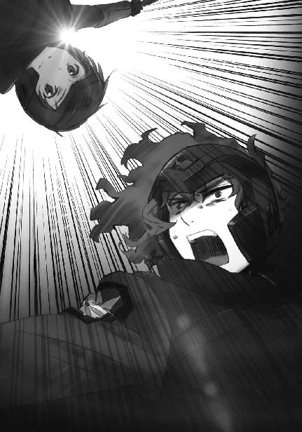
再び琢磨の身体に痛みが走る。傷を伴わない、幻の痛みだ。彼も想子の防壁を展開し、無系統魔法に備えているはずなのに、ダメージが少しずつ蓄積されていく。
（それだけ元々の「幻衝」の威力が高いのか）
このままではジリ貧だ、と琢磨は思った。
こちらは一人で、向こうはまだ三人もいるのだ。体力が残っているうちに勝負をかけなければならない。
琢磨は再び空気弾の弾幕を張って文弥を牽制すると、大技の準備に入った。
肉体が次々と襲い掛かる痛みに悲鳴を上げるが、全て幻覚と言い聞かせて無視する。
目の前の地面には四高の陣地から放たれた多数の石礫。
その一つ一つに魔法式をコピーしていく。
琢磨の魔法を伝える為の、群体制御用の魔印。
一際激しい痛みが腹を貫いたのと同時に、琢磨は叫んだ。
「喰らえ！」
──『ストーン・シャワー』──
声と同時に心の中で魔法名を叫び、琢磨は群体制御魔法を発動した。
琢磨の前に散らばっていた石礫が同時に浮き上がる。
観客席にどよめきが起こる。
それは、石礫が一斉に文弥が立っていた巨岩へ降り注いだ光景に対するものだったのか。
それとも巨木が倒れるが如く、琢磨が仰向けに倒れたことに対するものなのか。
『ダイレクト・ペイン』。
空中から琢磨に撃ち込まれた文弥の魔法は、想子の衝撃波が肉体に重なる想子体に衝突することによって、その部位を打たれた、切られた、刺されたなどの幻覚を作り出す無系統魔法ではなく、精神に直接痛みを与える系統外魔法。
このユニークな魔法により、琢磨は遂に力尽きた。
試合終了のブザーが鳴る。
文弥が右手を突き上げ、観客席が歓声と喝采に沸き上がる。
新人戦モノリス・コード第九回戦、一高対四高戦は四高の勝利で幕を閉じた。
◇ ◇ ◇
四高チームは続く第十回戦、対三高戦にも勝利を収め、新人戦モノリス・コードで全勝の一位となった。
新人戦とはいえ毎年最下位争いをしていた四高が、一種目とはいえモノリス・コードで優勝という快挙。
その立役者である黒羽文弥の名は、前日の新人戦ミラージ・バットで圧倒的なスコアを記録し一位となった黒羽亜夜子の名と共に観客と各校代表と九校戦関係者の記憶に深く刻まれた。
〔ミッション・完了〕
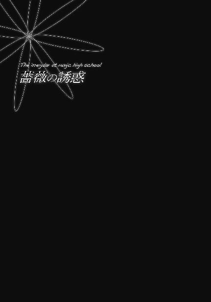
西暦二〇九六年六月、国際実業界に一つの訃報が流れた。
市場規模は小さいものの、軍事上の重要性からどの国家も無視できない魔法工学製品。そのトップメーカーであるドイツのローゼン・マギクラフト社の前社長、バスティアン＝ローゼンが息を引き取った。
享年九十六歳。老衰死だった。
◇ ◇ ◇
ＣＡＤその他、魔法機器の売上でＵＳＮＡの「マクシミリアン・デバイス社」と世界首位の座を争うドイツの魔法機器メーカー「ローゼン・マギクラフト社」。その日本支社長、エルンスト＝ローゼンは自分のオフィスで書類、ではなく録画映像を見ていた。
記録されているのは去年、西暦二〇九五年夏の九校戦モノリス・コードの試合模様。本戦ではなく新人戦だ。ディスプレイの中では場違いなマントを羽織った大柄な少年が剣のような物を振り回している。
ような、というのはその全長が十メートルを超えていて、しかも根本と先端しかなく、先端部は空中を移動しているという通常の剣ではあり得ない特徴を備えていたからだ。
一般人には驚きを誘う武器かもしれないが、エルンストにとっては少し物珍しいだけで大して価値のある物ではない。彼が注目しているのは、武器ではなくそれを振るう少年の方だ。
異形の剣による斬撃は、その半ばで軌道が横にずれ地面に喰い込んだ。少年が魔法による攻撃を受けて横倒しに吹き飛ばされたからだ。ハンマーで叩かれたに等しい衝撃を受けながら剣を最後まで振り切った闘争心は瞠目に値するし、金属片を地面にめり込む勢いで人間の頭上に落とすのは幾ら相手がヘルメットを被っているとはいえ少々思い切りが良すぎるようにも思える。
しかしエルンストが注目していたポイントはそのどちらでもなかった。
ディスプレイの中で少年が立ち上がった。だがそれは、普通に考えればあり得ないことだった。少年は直前に魔法攻撃を受けて一メートル近く吹き飛ばされたばかり。それに相応しいダメージを受けているはずだ。意識を失っていてもおかしくないし、録画映像で判断する限り実際に気絶していたように見える。しかし画面の中でマントを振り回す少年の動きから、それを窺い見ることはできない。
少年が獅子吼のような気合いと共にマントを投げた。たった今まで柔らかな布であったマントが、一枚の黒い板となって回転しながら飛んで行く。
「硬化魔法か」
エルンストの口から独り言が漏れた。彼の呟きが終わる前に黒い板は地面に突き立ち、少年のチームメイトを守る壁となる。
壁は土砂の奔流を受け止め、跳ね返した。
少年が土に喰い込んだ剣の先端部に向かってダッシュする。獣のような勢いだ。彼は手に持った剣の根元と小さな墓標のように立った先端部の凹凸をかみ合わせ、一本に戻った剣を土の中から引き抜いた。
再び少年の口から雄叫びが上がる。
剣が分離し、刃が宙を舞う。
少年の一撃は、相手チームに残った最後の一人を薙ぎ倒した。
「ふむ......」
映像はそこで終わっていた。エルンストは暗くなったディスプレイに目を向けたまま、意味ありげな吐息を漏らした。
「何度見ても間違いないか。ゲオルグの孫はブルク・フォルゲの能力を受け継いでいる」
思い出したようにディスプレイの電源を切り、エルンストは目を閉じて椅子の高い背もたれに寄り掛かった。
「まさか第一型式の遺伝子がこんな所で継承されていようとは......」
エルンストは目を開けて、少し苛立たしげに首を振った。彼はこの情報が本社に送られておらず、日本に来るまで知り得なかったということに腹を立てていた。
調整体魔法師ブルク・フォルゲの第一型式、ゲオルグ＝オストブルクが五十年前、日本に逃亡したのは分かっていた。しかしブルク・フォルゲ製造を命じたドイツ軍部と製造に携わったローゼンは、他の第一型式がことごとく自滅した事実から、ゲオルグも長くないと考えて追跡の必要は無いと判断していた。
だからといって、ローゼンはその遺伝子に対する権利を放棄したわけではない。ブルク・フォルゲの製造には少なからぬ資金を投入し、その大半は回収できていないのだ。
調整体に関するデータ自体は保存されているのだから、この映像を見れば分かったはずだ。彼、西城レオンハルトがブルク・フォルゲの特徴を備えていることを。現に本国から連れてきたエルンストの側近はすぐに気づいた。
この事実と、ゲオルグ＝オストブルクが日本に逃亡した過去を考え合わせれば自然と一つの推理に行き着く。西城レオンハルトはゲオルグの血を引いている。ゲオルグ＝オストブルクはこの日本で子を成し、その遺伝子がこうして受け継がれている。これが事実であることは、すぐに裏付けが取れた。
日本支社の立て直し──という名目の粛清はすぐに実行するとして、とエルンストは考えた。
（問題はこの少年をどうやって手に入れるかだ......）
彼はフレキシブルレイアウトのモニターになっているデスクの天板に、西城レオンハルトに関する調査資料を呼び出した。既に繰り返し見ている資料だが、何度読んでもその度に渋い表情を浮かべてしまう。
一見、不遇をかこっていて攻め所が多いように見えるデータだ。だがエルンストの判断はその逆だった。少年は自分の境遇に不満を持っていない。少なくとも高校生活を楽しんでいる。二年前ならもっと簡単だったかもしれないが、今の彼は相当の好条件を提示しても誘いに乗ってこないだろう。エルンストの頭脳を以てしても、日本を捨てさせドイツを選ばせるだけの決め手を見出せない。
だからといって強引にドイツへ連れていくわけにもいかない。魔法師の出国はきびしく制限されている。それはドイツでも日本でも同じだ。観光旅行が認められることはまずないし、ビジネス目的であっても長期の滞在は認められない。公務でさえ、大使館員など一部の例外を除き、海外に月単位で居住することは中々許可されないほどだ。
これは別の側面から見れば、魔法師の出国が厳しく監視されているということに他ならない。特にローゼン・マギクラフトはドイツ政府・軍部とつながりの深い魔法関連の企業。出国時に日本政府から受けるマークは特に厳重なものになる。本人の協力が得られる任意の亡命ならともかく、拉致が成功するとは思われない。
最低限、本人をその気にさせることが必要だ。
（とにかく、接触してみなければ展望も開けない）
ローゼン本家の人間である彼が日本支社長として赴任してきたのは、飛行魔法デバイスを実現した日本の魔法機器メーカーＦＬＴとその開発者トーラス・シルバーにローゼンが危機感を懐いたからだ。実現不可能と言われていた飛行魔法デバイスの開発を、ＦＬＴは何故成功させることができたのか。その秘密、研究体制、研究ノウハウを探り出し、可能であればトーラス・シルバーをローゼンに引き抜く。
素性を秘匿されているトーラス・シルバーの正体はまだ分かっていない。あの技術者に関する情報操作は驚くほど強力で巧みなものだ。しかし、その正体を突き止めることまで含めて、エルンストに課せられている使命だ。その為にローゼンの持つ経営資源を最優先で利用する権限を彼は与えられている。
これは彼にとって試練であると同時にチャンスでもあった。この仕事を成し遂げれば、彼はローゼン本家の後継者レースで、他の候補者に一歩先んじることになる。
トーラス・シルバーの秘密を暴き、引き抜く。それが日本におけるエルンストの最優先業務のはずだった。だが「西城レオンハルト」という思い掛けない発見で、彼は優先順位の変更を余儀なくされた。
世界で最も早く調整体魔法師製造技術を確立した国はドイツだ。しかしそこには、先駆者の宿命ともいえる過度の試行錯誤があった。魔法師の開発は大概非人道的なものだが、それを考慮に入れても最初期の調整体魔法師製造に実験投入された技術は許されざるものだった。人道とか尊厳とか、そういう近代的なモラルよりもっと根幹の部分、宗教的な禁忌を想起させる技術だった。
ある意味当然というべきか。その技術を人間は受け止めきれなかった。未だ明確な因果関係は確認されていないが、その技術を投入された調整体魔法師は若くして壊れた。肉体的に壊れたのではなく、精神的に自壊した。自殺した者、約半数。狂死した者、約半数。自殺も狂死もしなかった者も任務中に斃れ、あるいは逃亡し、ローゼンの手元には一人も残らなかった。
ローゼン家では「実験データが残っているのだから、それでも不都合はない」と考えられていた。現に、第一型式のデータを基にしてより安定的な性能を実現した第二型式、第三型式が生み出されている。
しかし、自壊がゼロになったわけではない。一層安定性を増した第三型式のブルク・フォルゲでも十パーセントの確率で狂死者が発生している。調整体製造に要するコストを考えれば、軽視できない損失率だ。
だから、より不安定な第一型式の遺伝子を継承しながら自壊の兆候を見せない西城レオンハルトは、今後の調整体魔法師開発の為に是非とも手に入れたいサンプルだった。これはエルンスト個人の考えではなく、ローゼン家当主の了解も得ていた。
スカウト条件に関する、白紙委任状と共に。
しかしせっかくの白紙委任状も、効果的な条件を思いつかなければ宝の持ち腐れだ。
（更なる調査が必要だな）
あと一か月もすれば、今年の九校戦が開催される。補欠学生である少年が今年も選手に選ばれるかどうかは微妙だったが、身上調査書に記載されたデータから見て応援には来るはずだ。
ローゼンの日本支社長である彼の手元には早くも九校戦の招待状が届いている。そこで接触を図るのが最も自然だろう。
来日当日からずっと付きまとっている監視の目を鬱陶しく思いながら、エルンスト＝ローゼンは招待状の返事を書かせるべく秘書を呼んだ。
◇ ◇ ◇
西暦二〇九六年八月四日。今年も明日から九校戦が始まる。例年とは異なる緊張感が会場を包み込んでいたが、その緊張に感応しているのは主に出場を控えた選手で、観戦に来たギャラリーはそれを「エキサイティングな雰囲気」と捉えていた。
レオもその一人だ。彼は先月から新競技シールド・ダウンの練習相手を務めており半分スタッフのようなものだが、この空気の中、緊張より興奮を覚えていた。......仮に選手として出場していても、彼の性分としてこの点は同じだったかもしれない。
久々に行われた競技種目の変更。その方向性は魔法師の実戦投入を想定している。各校の選手もスタッフも、程度の差はあれどこの認識は一致していた。
魔法は武力、いや、兵力であり、魔法師には兵士、あるいは兵器としての役割が求められている。それは紛れもない事実の一側面だ。若い彼らも、そのことは承知している。分かった上で国防に携わる道へ進もうとしている生徒も少なくない。
だが、こういう現実を突きつけられるのは少なくとも半年以上先のこと、魔法科高校を卒業してから向き合えば良いと考えている生徒がほとんどだった。そこにいきなり、九校戦という舞台で「兵士に求められる技能」を要求されて、魔法科高校生たちは狼狽を覚えていた。
覚悟ができていなかった。
その一言で片付けてしまうのは簡単だ。しかし、常在戦場の心構えなど容易に持ち得るものではない。覚悟を決めるには時間が必要だ。
一方で、人は環境と時間によって変化する生き物である。覚悟が必要な環境に放り込まれれば、自然とそれを身につけていく。これまでの魔法科高校は、尚武を掲げる三高を含めて、兵士としての心構えを切実に要求する環境ではなかったということだろう。
要するに魔法科高校生にとって、九校戦の種目変更が通達されてからの一ヶ月と少しという期間は、変化に適応する為に十分なものではなかった。ただそれだけのことだったのである。
もっともこれは一般論だ。誰もが戸惑っていたわけではない。
既に兵士、戦士としての心構えを有していた者にとっては、新たに採用された競技もゲームでしかない。事故で最悪の事態が生じる可能性は高くなった。だがそれはあくまでも事故であり、誰かが命を落とすことが必然ではない。その意味では、格闘技やモータースポーツと変わらない。
他方、自分は軍人にならないと決めている──割り切っている生徒にとっては、試合がスリリングでエキサイティングなものになっただけだった。全く逆の方向性ながら、ある意味で格闘技やモータースポーツと変わらない、という点では同じだ。そう認識していれば、戸惑いも狼狽も無い。
例えば、エリカは前者。
そして、意外に思われるかもしれないが、レオは後者だった。
レオは自分のことを戦士であるとも兵士であるとも認識していない。志望する職業は交通機動隊か山岳警備隊。軍人になるつもりもなければ、自分が軍人に向いているとも考えていない。
戦うことを恐れてはいないが、自分にできるのは喧嘩までだと彼は思っている。レオは自分の遺伝子の四分の一が兵器となるべく改造を受けたものだと知っているが、その血に縛られるつもりは毛頭無かった。
しかしローゼン・マギクラフトの日本支社長、エルンスト＝ローゼンは、レオに対して正反対とも言える評価を持っていた。
エルンストがチェックインするレオを見掛けたのは、本当に偶々だった。観戦には来るだろうと考えていたが、ホテルのフロントをずっと見張っていたわけではない。部下を使って見張らせてもいなかった。彼もこのホテルに到着したばかりで、秘書と共に案内役の下士官を待っているところだった。
ガールフレンドの荷物持ちをしている姿は年齢相応に微笑ましいが、骨太で厚みのある身体つきは既に少年のものではない。男性魔法師は古典的な「魔法使い」のイメージに反して体格の良い者が多い。だがその中でも、レオの肉体はエルンストの目を引いた。
秘書を遣わすべきか、それとも自分で声を掛けるべきか。迷っているエルンストの視線の先で、レオは同じ一高の生徒に声を掛けた。
（あれは、司波達也）
達也もまた、エルンストがスカウトしたいと考えている魔法科高校生だ。前任の日本支社長からもその価値を耳にしていたし、四月の恒星炉実験では前任者の極めて高い評価が決して過大なものではないと確認している。
声を掛けるにはちょうど良い機会だ、とエルンストは思った。二人一緒なら、一人一人別々に話し掛けるより彼らも警戒しないだろう。それがエルンストの判断だったが、一緒にいる少女の顔を見て考えを変えた。
エルンストを躊躇させたのは深雪でも美月でも、雫でもほのかでもなく、エリカだった。
アンナ＝ローゼン＝鹿取。それはエルンスト＝ローゼンの従姉の名であり、千葉エリカの母の名でもある。エルンストの父親の長兄がローゼンの現当主。そして次兄が本家を出奔したアンナの父、エリカの祖父だ。
つまりエリカはローゼン家当主の弟の孫に当たる。本来であればローゼン本家の一員に数えられるべき娘なのだ。
エリカもまた、エルンストがこの日本で処理すべき事案の一つ。しかもデリケートな取り扱いを要求される厄介な案件だ。西城レオンハルトはともかく、司波達也の前でエリカとコンタクトするのは避けたかった。
結局エルンストはレオにも達也にも声を掛けず、その場を立ち去る彼らを見送った。
◇ ◇ ◇
翌日、八月五日の朝食後。エルンストは日本人の女性秘書に一通の封書を手渡した。
「千葉エリカ嬢への招待状だ。呉々も粗相の無いように」
「承知しております」
「弁護士は手配できているな？」
「昼には到着の予定です」
「交渉は君たちに一任する。話が纏まったら呼んでくれ」
「はい、お任せください」
秘書が一礼してエルンストの前から退く。彼女の姿が見えなくなってから、エルンストはスイートルームに運び込ませたデスクの奥で小さくため息を吐いた。トーラス・シルバーや西城レオンハルトのスカウトは、成功すれば将来ローゼンに大きな利益をもたらしエルンスト自身の地位向上にもつながる前向きの仕事だ。逆に、千葉エリカに関わる諸事は、失敗すればローゼンに大きなデメリットをもたらしエルンストにとっても大きな失態となる後ろ向きの仕事だった。
エリカは今年の六月に亡くなったローゼン家の先代当主、バスティアン＝ローゼンの曾孫だ。そしてバスティアンの息子であるエリカの祖父、孫であるエリカの母は既にこの世を去っている。
ローゼンの一族にとって、エリカの祖父は日本人と駆け落ちした時点で、既にいないものとなっている。だがそれはあくまでも一族内部の認識に限った話だ。法的に見れば、エリカは遺留分権利者、曾祖父の遺産の一部を受け継ぐ権利を有している。
日本支社赴任当初、エルンストにはエリカと関わり合いになるつもりは無かった。顔も知らないエリカの母親は、従姉といっても他人同然だ。ましてやその娘のエリカは親戚という感覚も無かった。
それはおそらく、エリカの方も同じだろう。いや、彼女はそんな消極的な気持ちではなく、もっと積極的に、こちらとの接触を忌避している可能性が高いとエルンストは思っている。彼女の立場なら、ローゼン家を憎悪していてもおかしくない。
そんな相手と交渉しなければならないというのは、気が重くなる話だ。しかしエルンストに、この問題を避けて通ることは許されない。先代社長の相続は何時発生してもおかしくなかったもので、それが現実となった時、日本支社長の地位にあったのはエルンストなのだから。
巡り合わせが悪かった、と諦めるより他に無い。幸い、交渉自体は秘書と弁護士に押し付けことができる。エルンストはそう考えて自分を慰めた。
◇ ◇ ◇
秘書から千葉エリカとのアポイントが取れたと報告を受けて、エルンストは拍子抜けの感を覚えた。彼はエリカがもっと頑なな拒絶を見せると予想していたのだ。当日中に返事が来る、どころか招いたその日に会いに来るというのは完全に予想外だ。まあ、ローゼンの中枢にいるエルンストに、ローゼン本家の血筋とそれに付随する財力・権力などどうでも良いというエリカの本音は、理解できなくても当然だった。
そろそろエリカがやって来るという時間になって、エルンストはロビーに下りた。迎えに出たわけではない。エリカのことを今か今かと待っていた、という印象を与えたくなかっただけだ。事実、本家の者たちは千葉エリカが先代の遺産に対してどう出るか、気になって仕方が無かったのだが、交渉の責任者を押し付けられたエルンストはそれをエリカ本人に覚らせたくなかった。
エルンストがホテルのロビーに下りていった行為にそれ以上の深い考えはなかったのだが、この時、彼は運が良かった。
エルンストはホテルの外へ向かっていた少年に、流暢な日本語で話し掛けた。
「失礼、西城レオンハルト君ではありませんか」
当然の反応だが、唐突に名前を呼ばれたレオは、驚きを浮かべた顔で振り返った。
「そうだけど、あんたは......ローゼンの支社長さん？」
今度はエルンストの方が小さな意外感を見せた。
「ほぉ。私のことを知っているのですか」
「そりゃ、俺たちの間では有名人ですからね」
レオはエルンストの顔を恒星炉実験直後のニュース番組でしか見ていない。だが記憶力に優れた彼にとっては、それで十分だった。
「それは光栄だ。改めて、エルンスト＝ローゼンです」
適度に砕けて適度に丁寧な、余裕を感じさせる口調でエルンストが名乗る。
「はあ。ご存じのとおり、西城レオンハルトです」
人を食った挨拶で、レオはそれに応えた。
「それで、ローゼンの支社長さんが俺に何の用です？ 俺には達也みたいな技術はありませんけど」
レオの声に媚は無い。魔法の世界におけるローゼン・マギクラフトの影響力は製品分野に止まらず、軍や警察内部においても隠然たるものがある。それが分からぬほど、レオも世間知らずではない。ただ彼は、そんなもので得をしようとは考えない人間だった。
「単刀直入に言いますと、君をスカウトしたいのですよ」
「スカウト？ だから俺には自慢できるような魔法工学関係の技術なんてありませんけど」
エルンストが魔工技師として自分をスカウトしようとしているのではないことくらい、レオにも分かっている。これはエルンストの真意を探るセリフだった。
無論、その程度の思惑はエルンストに筒抜けだ。
「ここでは詳しい話もできません。スカウトに応じる、応じないは別にして、まずは私の部屋に来てくれませんか。西城君の納得が得られるよう、しっかりと説明させてください」
「困ったな。俺、これからダチと約束があるんですよ」
レオがさっさと話を切り上げて背中を向けないのは、ローゼンとコネを持つことによるメリットに未練があるのではない。その逆で、喧嘩別れのデメリットを懸念してのことだった。
ローゼン・マギクラフトの影響力は、今年四月にマスコミを賑わした反魔法師キャンペーンの際に思い知らされている。あの時、反魔法師的なムードを和らげるのに大きな役目を果たしたのは、他でも無い、レオの目の前に立つエルンスト＝ローゼンのインタビュー報道だった。エルンストが恒星炉実験を高く評価したことが、魔法師に対するネガティブキャンペーン終息に大きな役割を果たしたのは疑いようのない事実だ。
ＣＡＤのトップメーカーであり魔法工学製品のリーディングカンパニーであるローゼン・マギクラフト社が魔法師の敵となることはあり得ない。だがローゼンはドイツの企業だ。日本の魔法師に対して冷淡な態度に転じる可能性は十分にある。
角が立たない上手い言い訳を考えるのは、レオの苦手分野だった。言葉を飾るのは、彼の性分ではない。「約束がある」の一言だけでは引き下がる気配の無いエルンストを前にして、レオは次の言葉に苦慮していた。彼の意識はそこに向いていて、少し距離を置いて通りかかった銀色の下級生、達也の助手のポジションに収まっている一高一年技術スタッフ・隅守賢人のとても目立つ姿にも気づかなかった。
「そうなのですか」
エルンストの態度は、それ程押しの強いものではなかった。ただ粘り強く、巧みだった。
「すぐに済むから、とは残念ながら言えません。西城君にも色々と訊きたいことがあるでしょうからね。例えば、君のお祖父さんのこととか」
「祖父さんの......？ ゲオ爺さんに関係のある話なのか？」
これまで迷惑そうな素振りしか見せていなかったレオが、隠しようのない興味を示した。
「お祖父さんの話に興味がありますか？ でしたら、ドイツにいた頃のヘル・オストブルクのことも私が知っている限り教えてあげましょう」
「うーん、参ったな......」
正直なところ、レオはかなり心動かされていた。ただ彼は義理堅い人間だったので、友人との先約を破るのが忍びなかった。
レオの背中に最後の一押しをくれたのは、クラスメイトの不機嫌な声だった。
「取り敢えず話だけでも聞いてみたら」
「エリカ？」
背中から掛けられた声にレオが振り向く。
エリカはぶすっとした顔で横を向いていた。
彼女が顔を向けている反対側のサイドには、三十代から四十代と思しきスーツ姿の女性がいた。よほど気に入らない相手なのか、エリカはその女性からあからさまに顔を背けていた。
「断っても、またつきまとわれるだけだから」
もっともエリカの声が不機嫌丸出しなのは、その女性に対する悪感情ばかりが原因ではないだろう。彼女の言葉には、エルンストに向けた棘も生えていた。
「一回くらい約束をすっぽかしたって、達也くんは気にしたりしないわよ」
「お前、何でここに？」
「どうでも良いでしょ、あんたには」
エリカは身体中から「話したくない」というオーラをまき散らしていた。
それはレオだけでなく、エルンストにも分かったはずである。
「そういえば西城君は千葉エリカさんと同じ一高の二年生でしたね」
「......クラスメイトですよ。それが何か？」
「ほう。実は彼女と少し相談しなければならないことがあるのですよ。いや、私が話をするのではなく弁護士と話し合ってもらわなければならないことなのですが。それで、弁護士の準備ができるまで少しお待たせしてしまうと思っていたところだったのです」
だからこれは、
「クラスメイトの西城君が一緒なら、千葉さんも退屈しないでしょう。彼女の為にも、少し付き合ってもらえませんか」
エルンストが、わざと言っていることだ。
「そういうふざけた態度なら、あたしはこれ以上付き合わないわよ」
エリカの声には今や不機嫌を通り越して、殺気がこもっていた。
「あんたたちがしつこく、どうしてもって言うから、話を聞いてあげることにしたんだけど。あたしの方は、あんたたちの事情になんて興味は無いのよ」
きつい眼差しでエリカがエルンストを睨みつける。
エルンストはそれを、余裕のある表情で受け止めた。
「別に恥じることでもないと思うが......我々の関係をご友人に知られるのは嫌ですか？」
エリカの頰が紅潮した。
しかしそれは、恥ずかしさに顔を赤らめたのではなかった。
「行くわよ。案内して」
顔を向けず、エリカはスーツの女性秘書に要求する。
秘書が先頭に立ち、その後ろにエルンストが続く。
エリカは足を踏み出して、顔だけで振り返った。
「何してるの。あんたもさっさと来なさい」
レオが結局、エルンストの招きに応じたのは、祖父の話に興味があったからというよりエリカを放っておけなかったからだった。
今のエリカは、何かに追い詰められているような印象がある。余計なお節介かもしれないが、彼女を一人にするのは良くないとレオは感じたのだった。
だからといって、レオに気の利いた会話ができるはずもなく。
クッションの効いたソファの上で、レオは今、大層居心地の悪い思いをしていた。
「そうそう、去年の新人戦モノリス・コード決勝戦、ビデオで拝見しました。実に勇猛な戦い振りでしたね」
先程から舌を動かしているのは主にエルンストで、レオは訊かれたことに答えるだけ。それは別に構わないのだが、隣から押し寄せるピリピリとした不機嫌の波動が、レオをどうにも落ち着かない気分にさせる。
その波動の発生源は、この部屋に入ってきてからずっと黙りを続けているエリカだ。今の彼女はまるで、背中の毛を一斉に逆立てた猫だった。
レオはエリカの放つ殺意にも似た敵意に怯えているのではない。
その余裕の無さがエリカらしくないように感じて、それがレオを落ち着かない気分にさせるのだ。
一方で、エリカに敵意を向けられているエルンストは、彼女の刺々しい態度を気にしている様子が無かった。分かっていて無視しているというより、それを当然のものとして受け止めているような印象があった。
「西城君、今年は選手として出場しないのですか？」
「しませんよ。去年も最初から選手だったわけじゃないし......」
「去年、あれ程はっきりした実績を残したのに？」
「不器用ですからね、俺は」
レオの回答を聞いてエルンストがニヤリと笑った、ような気がした。唇も目尻も動かなかったが、瞳の色が、笑っているように見えた。
「西城君の魔法は十分に実用的だと思いますが」
「はあ、どうも」
色々と含みがありそうなエルンストのセリフに、レオは相槌を打つことしかできなかった。
その時、ドアをノックする音がした。
エルンストが手元のリモコンで鍵を開ける。
入ってきたのは、先刻の女性秘書だった。
「失礼します、弁護士の先生がお見えになりました」
「分かった」
エルンストは秘書に向かって頷き、エリカへ顔を向けた。
「隣の部屋を商談用に空けてもらっています。そちらでまず、弁護士の説明を聞いてください」
すぐに返事をしなかったエリカに対して、エルンストは意地の悪い口調で付け加えた。
「それとも、西城君にも同席してもらった方が良いですか？」
「......行くわよ」
エリカが立ち上がり、
「案内しなさい」
秘書に向かって先程と同じ言葉で命じた。
エリカが扉の向こうに消えた途端、エルンストを見るレオの目付きが鋭いものとなる。
「あいつとあんたたちローゼンはどういう関係なんだ？」
エルンストはにこやかなビジネススマイルでレオの視線を受け止めた。
「気になりますか？」
達也ならここで「気になる」と即答しただろう。だがレオは達也と違って、少年らしい含羞を持ち合わせていた。
「別に、あいつのことが気になるとかじゃ......」
「西城君はお祖父さんの話の方が興味があると思っていましたが」
「あ、ああ。そのとおりだぜ。約束どおり、ゲオ爺さんのことを聞かせてくれよ」
エルンストの誘導にまんまと乗った格好だが、レオ自身がそれを良しとしている面もあった。
本音では、祖父のことよりもエリカのことが今は気になっていた。しかしレオは、彼女の事情に自分が踏み込んで良いものかどうか、躊躇いを覚えていたのである。
「良いですよ。ですが君のお祖父さん、ヘル・オストブルクのことを話す前に......西城君、君は『ブルク・フォルゲ』のことをどの程度知っていますか？」
全身の筋肉に力が入り、強張る。レオがそれを自覚したのは、止まっていた呼吸を再開した時だった。
「......世界で最初に作られた調整体魔法師のシリーズ名。魔法技能の強化よりも肉体の強化に重点が置かれた強化人間。魔法技能を持つ超人兵士」
そこで一旦言葉を切り、レオは息を吸い込んだ。
「だがその実態は、ほとんどの個体が自滅した失敗作」
レオの口調が硬かったのは、声が震え出さないように力んでいたからだろうか。
そんな彼に、エルンストは優しく見える微笑みを浮かべた。
「ブルク・フォルゲは失敗作ではありませんよ」
レオがエルンストへ猜疑に満ちた目を向ける。彼の瞳の中には疑いのみならず怒りまでもが渦巻いていた。
「第一型式のブルク・フォルゲが自壊したのは例外なく戦場においてです。戦闘に参加しなかった第一型式に自壊は見られませんでした」
「......爺さんは自分以外、皆死んだと言っていたぜ」
「当時の祖国は、彼らを戦闘に参加させないという選択肢を許さない状況でしたから」
何事か反論しかけたレオを遮って、エルンストがもう一言付け加える。
「入隊直前に脱走したゲオルグ殿を除いて」
「爺さんが......脱走？」
レオが質問を返すまで、短い間があった。
エルンストはその質問を予期していたのだろう。答えはすぐに返ってきた。
「ヘル・オストブルクは良心的兵役拒否者だったのです。調整体としての教育を受けていた彼がどこで非暴力思想を学んだのかは分かっていませんが、彼は兵役を拒否する代償として祖国を捨てることを選択しました」
「それで爺さんは日本に......？」
「最初はアメリカに亡命したんですが、どうも性に合わなかったようで......半年ほどで、日本に移住していました」
「意外だな......ゲオ爺さんの性格からすれば、だだっ広いアメリカの方が性に合うような気がするんだが」
「色々あったんでしょうね。伯父もアメリカまでしか同行しませんでしたので、そこから先のことは分かりません」
「伯父......？」
レオがその単語に反応するのはエルンストの計算どおりだった。
実はレオの方も、エルンストが自分の興味を惹く為に口にした話題だと勘付いていたが、それでも無視できなかった。
「ブルク・フォルゲを作り出したのは我々ローゼン・マギクラフトです」
エルンストのいささか唐突なセリフを聞いて、レオが訝しげに眉を顰めた。
「ドイツ軍が作ったんじゃなかったのか？」
調整体は軍によって作られたもの。それがレオの常識だった。
「研究の発案者は軍の科学者ですが、実際の研究は我々に委託されたのですよ。ヘル・オストブルクもローゼンの研究所で誕生しました。彼は生真面目な人間が多かったブルク・フォルゲの中では珍しく陽気で気さくな人物で、研究所の職員やその家族とも親しく付き合っていました。伯父はヘル・オストブルクと特に親しくさせてもらっていたそうです」
「だから爺さんの脱走を手伝ったのか？」
「脱走と言っても、非合法ではありませんよ。他国で軍務につかないこと、他国の魔法師開発に協力しないことを誓約した上で、彼は国籍を放棄したのです」
「......約束を守るように、呪いでも掛けたのかい」
皮肉な口調でレオが挿んだ茶々に、エルンストは気分を害した様子は無かった。
むしろ彼は、面白そうに口もとを綻ばせた。
「呪いとはまた古風な言い回しですね。日本の魔法科高校生の間では、古い言葉が流行っているのですか？」
「いや、そういうわけじゃねえけど......」
指摘を受けて、自分でも古臭いと思ったのか、レオの返しは歯切れの悪いものだった。
「残念ながら我々は、永続性のある心理操作の技術を有していません。あくまでも信頼関係に基づく契約です」
「よくそれで軍事機密の塊を手放す気になったな」
エルンストは「そのセリフを待っていました」とばかり、笑みを浮かべた。
「ブルク・フォルゲの皆さんを調整体にしたのは彼らの意思によるものではありません。我々が勝手にやったことです。ですからせめて、生き方くらいは自分で選ばせて差し上げたかったのですよ」
「......死に方の間違いだろ？ 生まれた時から研究所の中で、ずっと戦闘魔法師としての技能を叩き込まれてきた人間に他の生き方が選べるわけがねえ」
「それは否定しません」
レオの憎まれ口を、エルンストはあっさり認めた。
「だから余計に、ゲオルグ殿の望みを叶えてやろう、という結論になったのでしょう。戦闘魔法師として作られた者に、兵士でない生き方ができるのかどうか。科学者たちがそんな好奇心を懐いたであろうことは想像に難くない」
言い訳が無かったことにレオが拍子抜けしている隙に、エルンストは話題を再転換した。
「俄には信じられないかもしれませんが、私たちはヘル・オストブルクを信用して出国の手伝いをしたのです。伯父ルーカスがアメリカまで付き添ったのも、監視の為ではありません。伯父はゲオルグ殿にとても懐いていたそうですから」
「懐いていたって......」
「ヘル・オストブルクが故郷を捨てたのが第三次世界大戦勃発の直前です。当時伯父は十四歳でした」
十四歳という年齢を聞いて、レオが目を剝いた。
「まだ子供じゃねえか」
「ええ。我々ローゼン一族にとっても仕事に関わらせるには早過ぎる歳です。事情を知らない第三者からすれば、伯父はちょっとした旅行に出掛けたとしか見えなかったでしょうね。ローゼン本家の次男である伯父の護衛に強化兵士をつけても、不自然には思われなかったはずです」
「そういう名目で周囲の目を誤魔化したってことか......」
「当時、すでにテロや内戦が散発的に生じていました。アメリカも決して安全とは言えなかった。そのリスクを承知で、伯父はゲオルグ殿の亡命に協力したのです。我々ローゼン家は、ゲオルグ殿の意思を、ひいてはブルク・フォルゲの皆さんの意思をそれだけ尊重していたのだと理解してもらえれば幸いです」
「......あんたたちがゲオ爺さんの為に危ない橋を渡ったってことは理解した」
レオは不承不承、エルンストの主張を認めた。
彼はエルンストの言い分を全面的に信用していたわけではなかった。特に、調整体ブルク・フォルゲ全体に対して、彼の祖父に対するのと同じように手厚く処遇したというのは信じられない。事実として、祖父以外のブルク・フォルゲは天寿を全うできなかったのだ。
しかし、ローゼン本家のルーカス少年が祖父を好きでいてくれたことは信じられると感じていた。レオはローゼン家に都合の良い説明を全面的に信じてはいなかったが、全てが胡散臭いとも思わなくなっていた。
「ブルク・フォルゲの第一型式を、ゲオルグ殿を除いて全て死なせてしまったことを、ローゼン家は後悔しています」
エルンストは悲痛な表情でそう語った。
レオは彼の表情に、偽りを見つけることができなかった。
「本来であればローゼン・マギクラフト社は調整体の育成から手を引くべきなのでしょう。ですが我々は、この世界に深く関わりすぎた。これから何をして何をしないのか、自分たちの意思だけでは決められなくなってしまった」
「まあ......そこは何となく理解できるぜ」
ローゼン家と規模はまるで違うが、レオの実家も過去のしがらみを捨て去ることができずにいる。自分は何とも思わないが、姉にとっては辛いこともあるだろう。しかし今、家で面倒を見ている連中を放り出すことはできない。
「君をスカウトしたいのはその為なのですよ」
レオの眉が険しく顰められる。
「俺に、実験台になれって言うのか？」
レオの声には殺気、というより敵を前にした野獣の気がこもっていた。
牙を剝く虎や獅子の前に立って、平気でいられる人間は少ない。
「いえいえ、まさか」
エルンスト＝ローゼンは、その例外的な胆力を持つ人間のようだ。
「人体実験などという野蛮な真似はしません」
「以前はやってたんだろ」
嚙みつくようなレオの決めつけにも、エルンストは余裕を崩さなかった。
「それは否定しません。しかし言い訳をさせてもらうなら、人体実験を行っていたのは我々ローゼンだけではありません」
エルンストの「言い訳」はレオも知る歴史的事実で、そう言われてしまえば彼も口をつぐむしかなかった。
「私たちは西城君に、調整体の訓練を手伝って欲しいのですよ」
「訓練？ そいつは、実験とは違うのか？」
レオの質問に皮肉が含まれていないわけではなかったが、それよりも疑問の成分の方が多かった。
「魔法科高校や魔法大学で行われている魔法技能開発のプログラムを実験とは言わないでしょう。それと同じです」
「俺にはインストラクターなんて務まらないぜ？ まだ高校生で、しかも出来の悪い劣等生だ」
レオは本気で卑下しているのではなく、遠回しに断っているだけだ。
だがエルンストはその論法を逆手に取った。
「君の上達が思わしくないのは、魔法科高校のカリキュラムが君に合っていないからです。ブルク・フォルゲは近接戦に特化した能力を与えられている。遠距離の攻防は通常兵器に任せておけばいい。君たちは戦闘の最終局面における拠点占拠や、撤退時における要人警護を想定した魔法師です。当然、通常兵器を代替する魔法師とは異なるトレーニング方法があるはずだ。君にはそれを作り上げてもらいたいと考えています」
エルンストがレオに申し入れているのは魔法師ではなく、研究者の役目だ。レオはエルンストの言葉に違和感を覚えていたが、それが具体的に何かということまでは指摘できなかった。
レオは決して鈍くないし、愚かでもない。ただ魔法の研究、魔法師の開発がどのように行われるのかを知らなかっただけだ。
この場に達也がいたなら、エルンストの申し入れが不自然なものだと分かっただろう。だが高校生は普通、その手の具体的な知識を持ち合わせていない。
「無論、それなりの待遇をお約束しますよ。西城君にはピンと来ないかもしれませんが、将来的には本社の部長待遇を用意しています」
「......せっかくだけど、遠慮させてもらいますよ」
表面的には、美味しい話に思える。だがレオは、自分の嗅覚を信じた。
「俺も今の生活に不満が全く無いってわけじゃないけど、それでも余所の国へ行って一旗揚げようって考えるほどじゃない」
レオは面白い冗談を考えついた、という風にニヤリと笑った。
「俺は、小市民なんで」
残念ながら、エルンストにはまるで受けなかったが。
「そう結論を急ぐ必要も無いでしょう」
エルンストはにこやかな表情をまるで変化させず、レオを引き止めに掛かった。
「外国といっても、西城君にとっては縁もゆかりも無い土地ではありません。それに、ドイツには君の助けを必要としている仲間たちがいます」
「仲間？」
少しのタイムラグがあって、レオが顔色を変える。
「まさか、爺さんと同じ調整体を作っているのか......？」
「残念ですが、我々も自分たちの一存で出来上がった技術を捨て去ることは不可能なのです」
エルンストの声は、聞いているだけなら、苦渋に満ちていた。
「ただ、同じではありません。心を病む症例は随分減りました。その分、能力はヘル・オストブルクの頃より下がっていますが、人命第一ですからね」
レオが手が細かく震える。それ程強く拳を握らないと、殴りかかりたいという衝動に耐えられなかったのだ。
生存率を高める為に性能を下げた。それは確かに事実だろう。しかしその動機は、人道的なものでは決してない。高いコストを掛けて作った兵器が簡単に自壊するようでは採算が取れない。それだけのことだ。
本当に魔法師の身を心配しているのなら、ただ一人を除いて自滅したブルク・フォルゲを再び作り出そうとはしない。エルンスト＝ローゼンは、目の前のこの男は調整体を道具としか考えていない──。
レオが怒りに震えていることは、エルンストにも分かったはずだ。表情や仕草から相手の心理を読み取れない鈍感な人間に、交渉事は務まらない。
だがエルンストは、レオの神経を更に逆撫でするようなセリフを続けた。
「もし西城君が望むなら、ローゼンの一族に迎え入れても良い。君は先程、千葉エリカと私たちローゼン家の関係を気にしていましたね？」
レオから、返事は無い。
エルンストはレオの返事を待たなかった。
「彼女は」
聞いてはいけない。レオは瞬間的にそう感じた。
「ゲオルグ殿の亡命を助けた」
しかし彼は、エルンストのセリフを遮ることができなかった。
「ルーカス＝ローゼンの孫」
「じゃあ......」
「そうです。彼女は先代当主バスティアン＝ローゼンの曾孫に当たる、れっきとしたローゼンの一族です」
「エリカが、ローゼンの一族......？」
レオが呆然と呟く。彼が受けた衝撃は、ブルク・フォルゲが今なお生産されていると聞かされた時よりも大きかった。
反論を紡ぐことができないレオに、エルンストが誘惑の言葉を囁く。
「彼女には相応の対価を受け取ってもらって、ローゼン家に関する権利を放棄してもらう予定だったのですが......君が望むなら彼女を好きにしてもらって良いですよ。ローゼン家にとっては意味の無いの娘ですが、一族の血を引いているのは確かだ。彼女の夫ならローゼン一族の一員とすることに異議は出ないでしょう」
「ふざけんな！」
レオが吼えた。彼は男女の垣根を越えて、エリカのことを仲間だと考えている。男とか女とか関係無く、すごいやつだと敬意を懐いている。その彼女を政略結婚の駒にするエルンストに、レオは怒りを抑えられなかった。
だが、レオの認識はまだ甘かった。
「そんなに堅苦しく考える必要はありませんよ。夫といっても血縁関係を作り上げる為の方便です。彼女に子を産ませれば、それ以上のことは求めません。あの娘、外見は中々のものですからね。君も悪い気はしないでしょう？」
エルンストはレオをわざと怒らせようとして、このような条件を出したのではない。千葉エリカはエルンストの目から見ても美しい少女だ。男なら美女を自由にできるというのは魅力的なはず、と考えただけだった。
要するにエルンストが俗物だったということだが、彼の考え方がおかしいわけではない。
富。地位。名誉。プライド。あるいは、美しい異性。報酬として一般的で、世間に広く通用するもの。
ただエルンストは、選択を誤っただけだ。
その過ちが、レオの更なる怒りを招く。
レオの自制心が、音を立てて切れた。
「テメエ！」
自分のことを「戦士」とは思っていないレオだが、エリカのことは「戦友」と認識している。その戦友を侮辱されて、レオは遂に自分を抑えきれなくなった。
レオが、自分とエルンストを隔てるテーブルを、座ったまま蹴り上げた。
飲み物はサイドテーブルに載っていたのでカップやソーサーが割れることはなかったが、派手な音を立ててテーブルが壁際に転がっていく。
テーブルが動きを止める前に、レオは立ち上がり、右手を振りかぶっていた。
エルンストもわずかに遅れて立ち上がっている。中年太りとは縁の無い体型だが、戦闘員でもアスリートでもないビジネスマンにしては驚くべき反応速度だ。
レオが右の拳を突き出す。
怒りに任せた大振りなパンチだが、普通の人間に躱せるスピードではなかった。
事実、エルンストはレオのパンチを避けられなかった。
レオの右拳は、エルンストの目の前、至近距離に出現した魔法障壁によって受け止められていた。
障壁は術者との相対距離で形成される性質の物だったのだろう。エルンストは立ち上がったソファに尻餅をついている。彼の身体を受け止めたソファはその勢いでひっくり返りそうになるが、激しい音を立てて床に脚を戻した。
「あんた......魔法師だったのか」
「......三流だがね」
拳を振り切った体勢で見下ろすレオと、肘掛けを摑んだ姿勢で見上げるエルンストが、どちらも驚いた表情で短い問答を交わす。
「何事です!? 支社長、大丈夫ですか!?」
テーブルとソファの立てた音が隣の部屋にも聞こえたのだろう。ドアが激しくノックされる。
エルンストが遠隔操作でドアのロックを解除した。
すぐにそれと分かったのか、女性秘書がドアを開けて駆け込んでくる。
そのすぐ後ろに、エリカが続いていた。
「支社長、如何なさいましたか!?」
「大丈夫だ。何でもない」
エルンストが笑顔で首を横に振る。
女性秘書がそれで納得した様子はなかったが、彼女はそれ以上質問を重ねなかった。
「レオ、何を言われたの？」
一方のエリカは、レオとエルンストの体勢を見ただけで大体何が起こったのかを察したようだ。その上でレオに理由を訊ねた。
「何でもねえよ」
レオはエリカと目を合わせようとしない。
エリカの方も、それ以上問い詰めることはしなかった。
「そっ。じゃあお暇しましょ」
レオを促しそのまま部屋を出て行くかと思われたエリカだが、すぐには踵を返さなかった。
「話は分かったから、結論は弁護士さんから聞いてちょうだい」
彼女はエルンストにそう話し掛けた。
「正式な書類が必要ならサインするから、家の方に届けさせて。もう、わざわざ話をしに来る必要無いから。もちろん、こちらから出向くつもりも無い」
だから二度と呼びつけるな。そう言外に告げて、エリカは今度こそエルンストに背中を向けた。
◇ ◇ ◇
ホテルの職員ではなく自分の部下、つまり日本支社の従業員に部屋を片付けさせて、エルンストは秘書を含めた全員を下がらせた。
レオとの面談は、正直に言って不愉快の一言に尽きた。だが商談で不愉快な思いをするのはありふれたことである。いつ迄も引きずっていてはビジネスなどできない。
エルンストは手酌でショットグラスにウイスキーを注ぎ、一気に呷った。彼はドイツの蒸留酒コルンやアクアビットよりスコッチ・ウイスキー派だ。別に外国の物が好きだというわけではない。その証拠に、と言えるかどうかは定かでないが、ブランデーは好まない。
彼がアルコールの助けを欲するほど引きずっているのは、レオに対してではない。全く無関係ではないが彼自身に対する不快感は大したものではなかった。西城レオンハルトのことは、所詮子供だと割り切れた。
ではエリカの態度が腹に立ったのかというと、これも違う。レオと比較すれば関連度は高いが、やはりエリカ本人が問題なのではなかった。
エルンストの心に不快な小骨となって引っ掛かっているのはエリカの祖父、ルーカス＝ローゼンのことだった。
ローゼン一族の汚点。
卑劣な逃亡者。
浅慮な背信者。
ローゼン家直系の責務も信用も踏みにじり、身勝手な駆け落ちで方々に多大な迷惑と損害をもたらしたエルンストの伯父。
ルーカスが一族の定めた婚約者を捨てて日本人女性と駆け落ちした所為で、ローゼン家はしばらくの間ヨーロッパの社交界で肩身の狭い思いをしなければならなかった。あのスキャンダルが無ければマクシミリアン・デバイスに欧州市場を侵食などさせなかった。
彼が日本に移住した裏に日本政府との密約など無かったということをドイツ政府に納得させる為、ローゼン・マギクラフト社は日本進出を控えなければならなかった。それは市場を失ったというマイナス面だけでなく、技術開発の面でも無視できない負の影響が見られた。
それでも、ルーカスが女にしか興味の無いボンクラならば、まだ害は少なかった。なまじ、頭が切れ機転も利く質だった為に、ローゼン家は彼を切り捨てる時期を誤ってしまった。本来ならば、もっと早く、出奔される前に放逐しておくべきだったのだ。
そう......。ゲオルグ＝オストブルクの逃亡を手伝った時点で。
エルンストがレオに語った内容には、この点で虚偽が含まれていた。
ローゼン・マギクラフトは、ゲオルグを解放などしていない。彼の亡命を許す気などローゼン家には無かった。
ゲオルグの亡命を手助けしたのは、ルーカス＝ローゼンの独断だ。いや、亡命の首謀者はゲオルグ本人ではなくルーカスだった。
あの時の真相はこうだ。
ルーカスがアメリカに旅行するにあたり、ゲオルグがその護衛役に選ばれた。十四歳の少年とはいえあの時のルーカスはローゼンの直系としての仕事を与えられての渡米だったし、第三次世界大戦の前哨戦とも言える地域紛争が中南米でも頻発していた。ローゼンの直系であるルーカスが、その当時白兵戦において最強の兵士と見られていたブルク・フォルゲを自分のボディガードに指名するのは自然であり当然と受け止められた。
しかしそれは、ルーカス＝ローゼンの計略だった。彼はゲオルグを監視が緩い国外に連れ出し、ルーカスが自分でリークした情報に釣られて襲撃してきた反政府テロリストとの交戦中を狙ってゲオルグを脱走させたのだった。
全てが茶番だと分かったのは、ゲオルグの生存が日本で確認された一年後のことだった。その時には既に世界中で地域戦争──最早「紛争」で片づけられるレベルではなかった──が勃発しており、正規の手続きで入国しているゲオルグを日本から連れ戻すことは不可能だった。
ゲオルグ＝オストブルク脱走の真相が明らかになった時点で、ルーカスはローゼンの後継者候補から外された。しかし、前当主バスティアンの五人いる息子、娘たちの中で最も優秀と評されていたその才覚を、ローゼン一族の大人たちは惜しんだ。機密性の高い軍関係の仕事にはもう関わらせられないが、一般業務の管理者や政略結婚の駒としては使えるのではないかと欲を出してしまったのだ。
（その結果が、あのざまだ）
結局ルーカスはローゼン家に害しかもたらさなかった。彼は恩を仇で返したまま、その償いもせず世を去った。
ならば彼の孫に、多少役に立ってもらったとしても罰は当たらないはずだ。
エルンストは少し酔った頭で、そんなことを考えていた。
心の中で散々愚痴をこぼして満足したのか、エルンストの思考はエリカからレオに焦点を移した。
（それにしても、西城レオンハルトのあの力は）
あれは本物だ。それが確認できたことだけが、今夜の収穫だった。
それは決して、小さな成果ではない。
（運動エネルギーを中和する対物障壁を腕力で吹き飛ばすとは）
エルンストは確かに魔法師だ。そもそも魔法の素養が無くては魔工師にはなれない。魔法が使えなくても魔法工学製品を開発することはできるが、魔法が使える、使えないは大きなアドバンテージになりハンディキャップになる。ローゼン一族は自身が魔法を使えたから、魔法工学産業の黎明期において先駆者となり得た。
ただその能力は、お世辞にも一流と呼べるものではなかった。逆に、だからこそ前線で使い潰されることなく技術者として成功を収める余地があったのだろうが。
エルンストの力も本人の自己申告どおり貧弱なものだ。三流というのは、謙遜ではあっても噓ではない。彼の魔法力はせいぜいが二・五流といったレベルだ。
それで何故、レオの拳を防ぎ得たのか。そのからくりはエルンストが使ったＣＡＤにある。
完全思考操作型ＣＡＤ。世界に先駆けてローゼン・マギクラフトが製品化した最新モデルだ。思考操作の為にインターフェイスを一から見直し、手動操作に迫る確実性と手動操作を上回るスピードを実現した魔法補助具。そのスピードがあったからこそ、エルンストのお世辞にも速いとは言えない発動速度で魔法障壁の展開を間に合わせた。
しかし、ＣＡＤで発動速度は上げられても、干渉力は底上げできない。あの時の障壁の強度は彼の魔法力に相応しい、程々のものでしかなかった。
だがそれでも、魔法として成功していた。物理法則を一時的に書き換える魔法は確かに機能していた。
あの時彼が使った魔法は、運動エネルギーの中和による運動体の停止。レオの拳は、エルンストの魔法により振りかぶった位置から障壁に接触するまでの間に得た勢いを殺されて「殴る」から「押す」に変化させられていたはずだ。
それなのにレオの右腕は、太ってはいないが瘦せてもいない、エルンストの大柄な身体を押し倒し、否、吹き飛ばした。
あのパワーは人間という生物が持ち得る範疇を逸脱している。人間にあのパワーを発揮するのが不可能という意味ではない。レオの筋肉量では、完全に静止したゼロ距離からエルンストを吹き飛ばすパワーを絞り出すことは不可能なはずだった。
日本で「火事場の馬鹿力」と呼ばれている人間の潜在的な筋力を引き出す技術の実在をエルンストは信じていない。リミッターは意味があるから存在するのだと彼は考えている。
あの時のレオのパワーは、そういう非科学的な偶然が作用したのではない。
レオの肉体の中でブルク・フォルゲの遺伝子が作用したものだと考える方が、エルンストにとって合理的だった。
（やはり、多少手荒な真似をしても手に入れる価値がある）
エルンストは本国から彼の手駒である第三型式のブルク・フォルゲ、ヴァールブルク姉妹を呼び寄せることを決意した。
◇ ◇ ◇
九校戦の会場は国防軍の敷地内だが、その中で起こることに目を光らせているのは国防軍だけではない。今の時代も縄張り侵犯は仁義にもとると激しく非難されるので大っぴらには活動していないが、他の情報機関も諜報員を潜り込ませている。こっそり動いている分には、国防軍も「お互い様」ということで見なかったふりをしていた。
公安のオペレーターである小野遥も九校戦の会場に潜り込んだ諜報員の一人だ。彼女には第一高校のカウンセラーという肩書きがあるので、他の同業者より楽をしているかもしれない。と言ってもそれは、会場内にいる口実に苦労しないというだけであって、諜報の仕事自体に平坦な近道があるわけではない。
今回の彼女の任務──本人の主張によれば副業──は、外国人招待客の監視。日本にとって、あるいは国防軍にとって機嫌を損ねられない相手であり、特権的な自由を認めざるを得ない彼らは、容易に国家機密漏洩ルートとなり得る存在だ。
表面的にその行動を制限できないなら、裏側から見張るしかない。九校戦に招かれた外国政府職員、外国人学者、多国籍企業幹部には、一人一人に二人、三人、あるいはそれ以上の監視者がついている。
遥がマークしている相手は魔法工学製品のリーディングカンパニー、ローゼン・マギクラフト社の日本支社長、エルンスト＝ローゼンだった。
この任務を命じられた時、「今回は楽な仕事だ」と遥は思った。
魔法工学製品は市場規模が小さい為、売り上げで見たならローゼン・マギクラフトは大した会社ではない。しかし軍事分野においてますます存在感を増す魔法の価値を考えれば、国家や軍にとって軍艦や軍用機のトップ企業に勝るとも劣らぬ価値がある。特に去年の秋、世界を震撼させた「灼熱のハロウィン」以来、そのプレゼンスは高まるばかりだ。
必然的に、国防軍はエルンスト＝ローゼンに大きなフリーハンドを与えないわけにはいかない。その意味で、彼の監視は一瞬も目を離せないというレベルで密なものである必要があった。
だが遥は、そのことを上司から何度も念押しされながら、勝手に楽観していた。エルンストは単に日本支社長というだけでなく、ローゼン本家の直系に極めて近い人間だ。本社の次期社長候補とも噂されている。
そんな人間が、犯罪や外交問題となる行為をしでかすはずがない。
彼女は何の根拠もなく、そう決めつけていた。
（私ってバカ......）
しかし遥は自分が如何に甘かったか、九校戦の初日で思い知らされていた。
エルンストはよりにもよって、彼女の本業の──と遥本人が主張してやまない──勤務先である第一高校の生徒を相手に一悶着起こしてくれたのだ。
暴行と魔法無断使用。
暴行事件はレオがエルンストへ一方的に殴り掛かったものであり、魔法無断使用はその暴力から身を守る為に障壁魔法を使用したというもの。表面的に見れば正当防衛で、エルンストに非は無い。
だがエルンストがレオを招いた密室で起こった事件で、ローゼン側が隠蔽を図っているとくれば、背景に面倒な事情が潜んでいるのは明らかだ。
エリカがローゼン先代社長の曾孫であり、レオがドイツの開発した最初期調整体の末裔であることを遥は知っていた。ローゼンの先代、バスティアンが先日亡くなり相続問題が発生していることも彼女は把握していた。しかし遥は、それがこの場でトラブルに発展するとは考えていなかったのだ。まさかローゼン・マギクラフトの日本支社長ともあろう者が高校生を相手に揉め事を起こすなどとは、遥の想像力を超えていた。エルンスト＝ローゼンはもっと大人で紳士的な対応をする人物だと無意識に決めつけていたのである。
「今年は司波君に関わらないで良いから楽だと思ったのに......」
遥の口から囁き声で愚痴が漏れる。彼女は九校戦が始まる前、上司に「達也と深雪をマークする役目は他の部員を当てて欲しい」と申請していた。
自分は顔を知られているので必要以上に周りをうろちょろしていると絶対に勘付かれる。あの二人はただの魔法科高校生ではない。必死にそう訴えた甲斐あって、公安から追加のオペレーターが派遣されていた。（なおその公安部員は達也に簡単に振り切られ、彼の暗躍に一切気づくことができなかった）
遥に対して代わりに割り振られたのが、エルンスト＝ローゼンの監視だった。この任務を命じられた時、前述のとおり彼女は「ラッキー！」と思ったのだ。ところが蓋を開けてみれば。
（ドイツから新型の調整体とまだ製品化もしていない最新の魔法装備を取り寄せるなんて......。平和的に事を納める気はさらさら無いってことね）
遥は自身の特殊技能を駆使して集めた調査結果を前に、これからどんな厄介事が起こるか予想し、それに自分が否応なしに巻き込まれることを確信して、途方に暮れていた。
◇ ◇ ◇
八月十四日、火曜日の夜。
一高生は本日の、モノリス・コードの勝利に浮かれていた。
彼ら、彼女たちが躁状態になっているのは、今回の九校戦が苦戦続きだったストレスの反動だ。一高は一時、三高に百点差のリードを許していた。それが、昨日のミラージ・バットでようやく逆転してトップに立った。しかし今日のモノリス・コードで三高に負けていたなら、点差は十五点まで縮まっていたところだ。
結果は一高が一位、三高が二位。両校の点差は九十五点まで広がった。三高に最大のリードを許していた三日目終了時点の、ほぼ逆の点差になっていた。
まだ優勝が決まったわけではない。三高に再逆転される可能性は残っている。だが彼我の戦力を考慮すれば、その可能性は無視できるほど小さい。一高生は少し気が早い祝勝会気分ではしゃいでいたのだ。
それは選手とスタッフに限ったことではない。泊まり込みで応援に来ている生徒も同じように興奮していた。夕食が済んだ後も、苦しかった戦いと明日も期待に応えてくれるであろう代表選手の活躍を予想し語り合っていた。
しかし、どんな場所、どんな時、どんな場合にも例外は存在する。
例えば達也は代表団の輪を抜け出して、九重八雲立ち会いの下、藤林響子と密談していた。
例えばエリカは美月や他の友人たちに見つからないよう、こっそりレオの部屋を訪れていた。
レオが泊まっているのは狭いシングルルームだ。大勢で騒ぐには全く向いていない。今も部屋にいるのはレオとエリカの二人だけ。しかしエリカの目的は、言う迄もなく逢い引きではなかった。
「あの後、ローゼンから何か言ってきた？」
「何も言ってこないぜ」
「そう......」
「オメエの方はどうなんだよ」
「何も言ってこないわ」
エリカが友人知人から深刻な誤解を招くリスクを冒してまでレオと二人きりで会っているのは、エルンスト＝ローゼンの動向が気になるからだった。九校戦初日の夜に強引な手口で接触してきたエルンストだが、あれ以降、エリカの前にもレオの前にも姿を見せていない。使いを寄越すこともしない。
「あん時のことは冗談だった、ってわけもねえだろうしなぁ」
エリカはあの場でローゼンにとって都合が良い回答を返しているので、向こうが興味を失っていると考えられないことはない。しかしレオに対するなりふり構わぬ勧誘が、あの夜限りのものだったとは思えなかった。
「そうだったら良いんだけどね。あたしの方は単純な話だったけど、あんたに対するラブコールは簡単に引き下がるような代物じゃなかったでしょ」
「ラブコールってお前な......」
ラブコールという表現にレオが顔を顰めた。
だが彼はそれ以上本題に関係の無い文句はつけなかった。
「お前に対する要求もそう簡単に片付けて良いこっちゃないだろ。詰まるところカネの問題だから単純って言やあ単純かもしれないが、庶民の遺産じゃねえんだ。幾らお前が『要らない』って言っても、向こうにしてみりゃそう易々と信用はできないだろうぜ」
「それでも単純な金銭の問題よ。金額が幾ら大きくても」
エリカはつまらなさそうな目でそう言い切って、一転、真剣な眼差しをレオに向けた。
「でもあんたをスカウトしたいっていうのは、軍事絡みだからね。一回断られたくらいで諦めるはずがない」
レオとエリカは自分がローゼンからどんな申し入れを受けたか、情報を交換し合っている。
エリカは自分が先代ローゼン当主の曾孫であり、ローゼンの財産の一部を継承する立場にあること。
レオは自分がローゼンの作った調整体の遺伝子を受け継いでおり、現在生産している調整体の改良に協力を求められていること。──なおエリカを好きにして良い云々は黙秘している。
レオはともかくエリカの方には自分とローゼン家の関係を打ち明けることに躊躇いがあった。レオがその話を既にエルンストから聞かされていると知らないから尚更である。だがお互いの事情を知っておかないと、二人の間の温度差に相手がつけ込んでくるおそれがある。そう判断したエリカの方から共闘を提案したのだった。
「むしろあいつらの本音は、あんたの意思なんて関係無いってところじゃない？」
「力尽くかよ......お前の妄想って笑えねえところがやばいな」
「怖い？」
エリカの挑発とも取れる問い掛けに、
「怖いな」
レオは強がる素振りも見せずに頷いた。
「俺の事情に知り合いを巻き込んじまうかもしれねえからな」
「それは無いでしょ」
エリカはレオの回答に意外感を見せなかった。その代わりただ淡々とレオの懸念を否定した。
「相手は地位も立場もある大企業のオーナー一族だからね。荒っぽい真似をして、それが明るみに出た時、ダメージがデカイのはあっちよ」
「そんなもんもみ消せる、とか思ってそうじゃないか？」
「あいつらのホームグラウンドならそうかもしれないけど、ここは日本よ。もみ消せないとは言わないけど、その為のコストは許容できないほど大きいでしょうね」
「結局は金勘定か」
「相手は商売人よ。当然じゃない」
エリカの乱暴な理屈に、レオは納得した様子だ。
「じゃあ、襲ってくるとしても『ばれないようにこっそり』か」
「一服盛ってお持ち帰り、かもね」
それまで皮肉げな笑みを浮かべていたエリカが、言葉を切って真顔になる。
「今日まで手を出してこなかったってことは、あたしたちが家に戻ってから仕掛けるつもりなのかな。ここは軍の敷地内だし、その方が確実だって向こうは考えているのかもしれない」
「ありそうなことだな。だがよ。こっちにそう思わせておいて、油断しているところへ仕掛けてくるって可能性もあるぜ」
レオの反論に、エリカは数回、瞬きした。
「......何だよ、その意外そうな顔は」
「意外......。あんたがそんな細かいことを思いつくなんて」
「お前なぁ......」
エリカの失礼な発言に、レオは怒るのではなく脱力した。
「あっ、バカにしてるんじゃないよ。本気で感心してるんだけど」
「それがバカにしてるんだよ！」
このセリフも、食って掛かるというよりツッコミのニュアンスが濃かった。
「まあまあ。とにかく、あんたの言うことにも一理あるわ。せいぜい、気を抜かないようにしましょう」
「俺たちとしちゃ、他にできることはないか。こっちから攻め込むわけにゃいかないからな」
「とっても残念だけどね」
エリカは肩をすくめて、レオに同感であることを示した。
◇ ◇ ◇
エルンスト＝ローゼンは、策があって九校戦期間中ずっと大人しくしていたのではなかった。監視がきつすぎて、下手に身動きが取れずにいたのだ。
マークが厳しくなったのは八月六日の朝からだ。タイミングから見て、西城レオンハルトおよび千葉エリカとの接触が原因だろう。
日本の諜報組織の能力を甘く見ていたと、エルンストは認めざるを得なかった。閉め切った部屋の中で、大した騒ぎにもならなかったにも拘わらず、エルンストが引き起こしたトラブルを直ぐさま把握してのけたのだから。
あの時、室内に盗聴器や盗撮カメラが仕掛けられていなかったことは確認していた。どのような手段を用いて室内の様子を知り得たのか分からない。だから余計に、不用意な真似はできなかった。
しかし今日、八月十五日で今年の九校戦は終わりだ。これ以上手をこまねいてはいられない。
エルンストが暴力的な手段を用いることも辞さないというエリカたちの推測は当たっていたが、基地内で荒事は避けたいだろうという推理は間違っている。市街地で事を起こすよりは基地内で決着を付けたいとエルンストは考えていた。
ローゼン・マギクラフトは魔法工学製品メーカーだが、そもそもの成り立ちから軍需企業の性格が強い。このあたりの事情はＵＳＮＡのマクシミリアン・デバイスも同じだ。日本においても国防軍に対して太いパイプを持つ一方、市街地の治安を預かる警察には発言力が無いに等しい。国防軍基地内の方が無理を通す交渉材料が豊富なのである。
エルンストは焦りを覚えていた。
「支社長」
一時的に日本当局と敵対するリスクを冒してでも西城レオンハルトの身柄を確保すべきか。そんな迷いの中で朝食を済ませたエルンストの所へ、エリカの応対をした例の女性秘書がある報告を持って来た。
「日本軍に内部抗争が発生している？ 確かか？」
「はい、支社長。間違いありません」
「そうか......」
これはチャンスかもしれない。
エルンストは素早く思考を巡らせた。
「リンダとエマを呼べ」
「はい」
程なくして、エルンストの前から退出した秘書に替わり、二人の若い女性が彼の前に現れた。
外見年齢はどちらも二十代前半。二人とも百七十センチ近い長身で、細身の筋肉質な体型をしている。瞳の色も同じヘーゼル。銀色の髪をショートにしているところまで同じだ。
一卵性双生児というほどそっくりではないが、顔立ちは他人のそら似で片付けられないほどよく似ている。この二人を見た大抵の者は、二卵性の双子か歳の近い姉妹と判断するだろう。それは間違いではなかった。
「リンダ＝ヴァールハイト、参りました」
「エマ＝ヴァールハイト、参りました」
この二人は同じ母の腹から生まれた姉妹ではないが、遺伝子上は姉妹と言って差し支えない。ローゼン内部の名称も「ヴァールブルク姉妹」だ。
彼女たちは同じ男女の精子と卵子からなる受精卵を同じ調整設計図で加工し、同じタイプの人工子宮から約一ヶ月違いで誕生した最新型のブルク・フォルゲ調整体。第三型式と呼ばれるバージョンの中で最も成功していると見られている二個体だ。
リンダの方が先に人工子宮から出て来た為、彼女が姉、エマが妹ということになっている。もっとも、この二人の間に姉妹愛は無い。対外的には「エマ」「姉さん」と呼び合う仲だが、それはあくまでロールプレイであって、お互い相手のことは仕事上のパートナーでありライバルであるとしか考えていない。
「二人とも、今日は別の任務についてもらう」
この二人はエルンストの護衛という名目でドイツから呼び寄せられている。
「いや、本来の任務に戻ってもらう、と言うべきか」
しかし本当は、西城レオンハルトを確保する為の戦闘要員として来日したのだった。
「いよいよ仕掛けるのですか」
エマが期待感を微かに漂わせてそう訊ねる。ブルク・フォルゲはその性質上、護衛任務に多用されており要人警護は慣れたものだ。だが今回はあらかじめ、自分と同じ調整体魔法師を相手にした捕獲作戦という説明を受けている。与えられた能力をフルに発揮できる期待感をずっと押し殺してきたところへようやく「本来の任務」と聞かされて、逸る心が漏れ出てしまったのである。
「そうだ」
エルンストの回答は、エマの期待に背かぬものだった。
「日本軍による監視はクリアできたのですか？」
リンダも第一型式との戦闘には──正確に言えば、第一型式より自分たち第三型式の方が優れていると実証する機会を得たことには、高揚を禁じ得ない。ブルク・フォルゲの第二型式は、生物としての安定性を高める為、第一型式に比べて「超人兵士」としての性能をダウングレードする方向で改良された。第三型式は生物としての安定性と超人兵士としての性能を両立させた最新バージョンだが、戦闘能力のみで評価するなら第一型式に劣ると見做されている。
レオは第一型式そのものではなく非調整体、非魔法師の血が混ざっている。だが第一型式の特徴を受け継いでいると、エルンストだけでなくローゼンの技術者からも認められていた。レオを倒すことで、第一型式と第三型式の評価をある程度であれ覆すことができるとヴァールブルク姉妹は考えていたのである。
しかしエマより少し慎重な性格のリンダは、今日まで行動を控えざるを得なかった状況を無視することもできなかった。
「日本軍に内部抗争が発生している。大規模な争乱に発展する可能性はほとんど無いが、事後の処理にむしろ手間取るだろう。九校戦の競技中は大きく動けない。だとすれば、競技終了直後、我々を監視している人員がそちらの処理に回されることになると私は考えている」
エルンストが語ったことはほとんどが彼の推測だったが、リンダはそれに疑義を挿まなかった。無論、エマもだ。
「日本軍以外の監視は無視するのですね？」
エマのこの問い掛けも、確認以上の意味を持たない。
「基地の中なら、軍の目さえかいくぐれば何とかなる」
リンダとエマは、エルンストに向かって姿勢を正した。
「本日の競技終了後、西城レオンハルトを人気の無い場所に誘い出す。君たちで彼を捕獲しろ」
「はい」
エルンストの命令をリンダが落ち着いた口調で受諾し、
「本任務に当たっては、ファントム・アンツーク（ファントム・スーツ）の使用を許可する」
「分かりました！」
エルンストの指示に、エマが興奮のうかがわれる表情で応えた。
◇ ◇ ◇
八月十五日。二〇九六年度九校戦最終日、午前九時二十五分。
午前中の競技、女子スティープルチェース・クロスカントリーが始まる五分前になって、一高応援席に幹比古が現れた。
「あれっ、吉田君？」
美月が真っ先に気づいたのは、単に彼女が通路に面した席に座っていて、幹比古がその通路を上ってきたからだ、と思われる。
「おはよう、柴田さん」
そう言って美月の横に立ち止まった幹比古は、応援席をキョロキョロと見回してため息を吐いた。
「参ったな......すっかり満席だ」
幹比古の言うとおり、一高応援席は生徒と職員で全て埋まっていた。この競技でよほど大きな取りこぼしがなければ一高の優勝が決まるのだ。応援にも熱が入るというものだろう。
「幹比古、替わってやろうか？」
美月、エリカの向こう側からレオが幹比古に声を掛けた。
「いや、いいよ」
首を横に振って腰を浮かせ掛けたレオを押し止め、幹比古は通路の階段に直接腰を下ろした。
少しオロオロした表情を浮かべている美月の隣から、エリカが顔をのぞかせて幹比古に話し掛ける。
「ミキ、何でわざわざ応援席に来たの？ 選手は天幕のモニターで観戦してるんじゃない？」
幹比古が曖昧な笑みを浮かべてエリカを見上げた。
「そうなんだけど、何となく居心地が悪くてね」
幹比古に人見知りの気があるのはエリカも知っていたので「何故」とは訊かなかった。モノリス・コードのチームメイトは上級生だし、二年生のチームメイトも技術スタッフも一人を除いて幹比古にとり、あまり付き合いがある相手ではない。
「達也くんは？」
エリカが何故と訊く代わりに口にしたのは、この質問だった。
「達也は女子選手の分の調整を終えてから部屋に戻って休んでいるよ」
幹比古の回答に、美月が驚きを表す。
「えっ、大丈夫なんですか？」
「疲れているだけだと思う。無理もないよ。昨日までもフル回転だったところに、今朝は五人分の調整だから。何だか、午後の競技を担当してもらうのが申し訳ない気分だよ」
男子のスティープルチェースは午後二時スタートで、達也が担当するのは幹比古一人。午前と午後のバランスが悪い気もするが、達也に担当して欲しいという女子選手の希望を受け容れた結果の割り振りだ。
「達也のことだから、午前中休んでいれば大丈夫だろ」
「午後はミキ一人っていうなら、大した負担にもならないだろうしね」
レオはともかく、エリカが幹比古を慰めるようなことを言ったのは、一応選手に気を遣ったのだろう。
「それなら良いんだけど......」
幹比古の反応は歯切れの悪いものだった。浮かべた表情も曖昧な微笑だ。
実を言えば、いざとなったら自分で調整しても良いと幹比古は考えていたのだった。
椅子に座れなかったのは幹比古だけではなかった。スタート間際になるまで応援の観客は増え続け、通路は前世紀の盆正月に見られた帰省列車のような様相を呈していた。
飛行船で空中に吊された大型ディスプレイに表示されている時計が、九時二十九分を指した。
「いよいよか」
レオの目が期待に輝く。
「どんなレースになるんだろうね」
「本当に、予想がつかないよ。どんな障碍が待っているのかすら分からないんだから」
エリカが呈した疑問に、幹比古が首を振りながら答える。
スティープルチェース・クロスカントリーは今年始めて採用された競技だ。本来、純然たる軍の訓練メニューで競技として公開された例はほとんど無いとあって、何が起こるか誰も予測できずにいた。
「危ないことにならなければ良いんですけど」
美月がレースに対する不安を口にする。魔法師の卵とはいえ未成年の高校生にやらせるのだ。安全はきちんと確保されているはずだが、危惧の念は拭えない。
そんな期待と不安が渦巻く中、空中の秒針が頂上に近づく。細長い針が真上を指すと同時に、四十一丁のスターティングピストルが競技の開始を告げた。
スタートから五分。今のところ戦況は各校横並びの状態だ。
「五分で一キロか。このペースは速いのか、遅いのか？」
レオの疑問に幹比古が答える。
「森の中ということを考えても、少しゆっくりめだね。もちろん、魔法あってのスピードだけど」
「時速十二キロだろ。魔法抜きでも不可能じゃないと思うんだが、知らない森の中を進むのはそれだけ大変ってことか」
「ただの森じゃなくて、罠が仕掛けてあるからね。皆、様子を見ているんじゃないかな」
「それに、この視界の悪さは予想以上よ。どのくらいのスピードで進めば安全か、ペースを摑みかねている面もあると思う」
幹比古とはやや違う切り口でエリカがレースの感想を述べる。彼女の言葉には、レオだけでなく幹比古も納得を示した。
「これ、中継用のカメラが無かったら中で何が起こっているのか分からないわね......。ううん、カメラにも結構死角があるみたいだから、コースに曲者が紛れ込んでも分からないかも」
「エリカちゃん、怖いこと言わないでよ」
エリカが何気なく呟いたセリフに、美月がブルッと身体を震わせた。
自分の思考が知らず知らず物騒な方向へ暴走しかけていたのを覚って、エリカが美月に「ゴメンゴメン」と謝る。
その直後、「あーっ！」という悲鳴が応援席のあちらこちらから上がった。
その声につられて見上げたディスプレイの中では、花音が泥まみれになっていた。
胸から下はまだ泥沼の中だ。彼女が何を思い何を感じているのかは、俯いている所為で表情が見えないので分からない。
花音が両手を泥の中から引き抜く。
次の瞬間、
泥沼が、爆発した。
ディスプレイの中で、花音がゴールの方角へ顔を向けた。
そして中継用マイクが、彼女の雄叫びを拾う。
「──ふざけるなぁぁ！ これの何処が軍事訓練なのよぉー！」
本人にしてみれば心からの叫びだっただろう。
だが応援席の一高生たちは、申し訳ないという顔をしつつ失笑を漏らしていた。
エリカと美月もその例外ではない。
エリカの口から放たれた物騒な呟きは、競技が終わるまで忘れ去られていた。
◇ ◇ ◇
スティープルチェース・クロスカントリー、女子の部。優勝は深雪。他の一高選手の主な戦績は花音が二位、ほのかが五位で雫が六位。
男子の部。優勝は三高の一条将輝。一高選手は幹比古が二位、服部が三位でゴールした。
その結果、第一高校が四年連続で総合優勝の栄冠を勝ち取る。
今年は苦戦が続いたという意識が強い所為か、祝勝会が始まる前から一高代表団にはお祭りの空気が漂っていた。祝勝会には選手、スタッフだけでなく、練習相手を務めた自分やエリカも引きずり込まれること間違いないだろう、とレオには思われた。
レオはお祭り騒ぎが嫌いではない。むしろノリは良い方だ。
だが大した貢献もしていないのに、当事者のような顔をしてしゃしゃり出るのは気が乗らなかった。
戦いの場を与えられた選手たちが、本音では羨ましかったのかもしれない。嫉妬などという格好の悪い真似はしたくない、と無意識に考えていたのかもしれない。
優勝校の特権である祝賀会は、後夜祭パーティー終了後に行われる。
レオはダンスパーティーが始まる前にホテルを抜け出した。
彼には一つ、あまり良くない趣味がある。いや、趣味というより癖だろうか。
それは、彷徨癖。
歩くでも、走るでも、叫ぶでもなく、夜を、さまよう。
深夜が近づくにつれて、当ても無くフラフラと歩き回りたくなるのだ。
今はまだ真夜中と言うには早い時刻だが、今夜は何故か、いつもより強く夜に誘われているようにレオは感じた。
彼は人気が無い場所を求めて、闇に沈む森の中へ足を進める。
演習林は、無人魔法兵器「パラサイドール」の関係者が証拠隠滅に現れるのを期待して、警備がわざと緩められていた。
それを知らないレオは、誰からも呼び止められなかったのを良いことに、スティープルチェースのコースに使われた森の奥深くへ進んでいった。
◇ ◇ ◇
レオがホテルを抜け出したことは、すぐにエルンストの知るところとなった。
予定では後夜祭パーティの最中、レオを人気のない場所へ誘い出す段取りになっていたが、彼の方から人混みを離れてくれたのはエルンストにとって好都合だ。
ただこれでは、彼が何処に行くのか分からない。仕掛ける場所をこちらが選べない。
エルンストはヴァールブルク姉妹にレオの追跡を命じた。邪魔が入らぬ場所で確保するよう付け加えて。
レオが演習林に向かったことを見届けたヴァールブルク姉妹は、ローゼン・マギクラフト社のコンテナ型移動ラボへ立ち寄った。
ファントム・アンツーク（ファントム・スーツ）に着替える為だ。
ファントム・アンツークは歩兵用の高機動装備。この点はムーバル・スーツと同じだ。ヘルメットの形状が異なるくらいで、他は色も外見もよく似ている。
だが移動速度と移動距離を重視し打撃力の高い遊撃兵力として運用する、ある意味で個人用戦闘ヘリの役割を目指したムーバル・スーツに対し、ファントム・アンツークは対探知性能とセンサーのジャミング機能を重視し潜入工作や後方攪乱、建物内部や森林部など障碍物の多い環境下での戦闘を想定している。
「リンダ＝ヴァールブルク、エマ＝ヴァールブルク。ファントム・アンツークの機能チェックを」
ハッキングを防ぐ為、ファントム・アンツークはスタンド・アローンで作動する設計になっている。外部との無線接続は音声通信のみで、戦術データ・リンク機能も無いという徹底ぶりだ。
移動ラボの技術者に促されて、リンダとエマは着用したスーツの自己診断機能を走らせた。
「全機能、異常ありません」
「こちらも、異常無しです」
リンダとエマがバイザーに表示された診断結果を申告する。続けて技術者の「動きにくい所は無いか」という質問に対しても、二人は問題無いと回答する。
「よろしい。では、健闘を祈る」
技術スタッフ責任者の声に見送られて、二人は移動ラボから出撃する。
リンダとエマはファントム・アンツークのステルス性能を活かし、基地の監視網をくぐり抜けて、レオを追い掛け演習林の中へ侵入した。
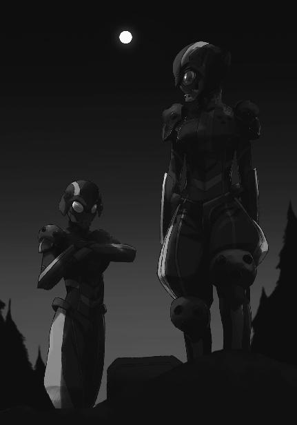
◇ ◇ ◇
レオの動向を気にしていたのはエルンストだけではない。
ローゼンを共通の敵と認識しているエリカも、レオの動きに気を配っていた。
だから彼女はレオがホテルを出て行ったのに、すぐ気づいた。
（あのバカ！ こんな時に一人でフラフラと！）
ローゼンが強引な勧誘手段を取る、具体的に言えば拉致を企てる可能性が低くないとレオは分かっていたはずだ。少なくともエリカと話をしている最中は、それを理解している様子だった。
（あいつは一人になったら危機管理もできないの!?）
「エリカちゃん......どうしたの？」
知らず知らずの内に苛立ちが顔に出ていたのだろう。
美月から怯えを含んだ声を掛けられて、エリカはハッと手を顔に当てた。
「あ、あはは......何でもない。何でもないよ」
慌ただしく手を振って誤魔化すエリカ。美月は小首を傾げてクエスチョンマークを浮かべているものの、取り敢えず怯えた様子は無くなっていた。
「あっ、そうだ！」
どうやら誤魔化せたようだ、と考えたエリカが、わざとらしく両手を叩く。
美月の疑問は何一つ晴れていないのだが、彼女は大人しくエリカの次のセリフを待った。
「あたし、用事ができたんだ。悪いけど、ミキの所にでも行ってて」
「ええっ!? 無理だよ！」
エリカの言っていることは相当無茶で、美月でなくても無理だと返しただろう。幹比古はもうすぐ始まる後夜祭パーティーに出席予定で、あのダンスパーティーは九校戦代表チーム限定だ。顔パスが通用する祝勝会とはわけが違う。去年エリカがパーティー会場に潜り込めたのは、あらかじめウエイトレスとして雇われていたからでしかない。
美月が途方に暮れるのも当然だ。しかしエリカの方も、今は美月を思いやる余裕が無かった。
戸惑いに立ち尽くす美月に背を向けて、エリカはその場から走り去った。
エリカは部屋に戻り、刃の部分が棍棒に変化する形状記憶合金で出来た脇差し形態の武装一体型ＣＡＤを持ってホテルの外へ出た。
レオが向かった方向は分かっている。
彼女はホテルの敷地を出ようとして、巡回の警備兵の姿に気づき建物の角に身を隠した。武装デバイスは目立たぬよう棍棒形態に変化させているとはいえ、この「形状記憶棍刀」は今年度から警察で採用されている製品化済みの武器だ。
当然、国防軍の兵士もこの武装一体型ＣＡＤのことは知っているはずだ。ＣＡＤがそこら中にゴロゴロしている九校戦開催中のホテルだから見咎められずにいるようなもので、敷地の外へ武器を持ち出すことを見逃してはくれないだろう。
エリカが向かおうとしているのは、国防軍が演習に使う人工林なのだ。
だからといって、ずっとここでこうしていられないのも確かだ。彼女の感覚は、レオの気配と、レオを追い掛ける二つの気配を捉えているのだから。
何故自分がここまで一所懸命になっているのか、今この瞬間他人に問われたら彼女は答えに窮しただろう。それを理解しないまま、エリカが強行突破を決意しかけたその時。
「千葉さん」
背後から声を掛けられて、エリカは素早く振り返った。危うく手に持つ武装デバイスを棍棒形態のまま振るおうとして、寸前で思い止まる。
声の主は、エリカの間合いのギリギリ外側から声を掛けていた。──もっともエリカがその気になれば、一瞬で彼女の間合いの内だったが。
「小野先生？」
エリカの声は猜疑心と警戒心で満ちていた。
彼女に五感外知覚は無いから後ろは見えない。だが今のように警戒心を研ぎ澄ませている時なら、見えなくても人が近づけば確実に感知する自信があった。
それなのに、遥の接近がエリカには分からなかった。声を掛けられるまで、背後に立たれていることに気がつきもしなかった。
「......いつの間に？」
「そんなに警戒しないで。この状態から千葉さんを相手にして、私に勝ち目は無いんだから」
そう言いながら遥は両手を挙げた。
彼女に敵対の意思が無いことを感じ取って、エリカも気持ちを静める。
「さっきのは私の特技。と言うか、私はこれしか出来ないんだけどね」
遥が何を言っているのか、一拍おいてエリカは理解した。
「大した特技だと思いますよ。小野先生にその気があれば、あたしは背中を刺されていた」
「どうかしらね。千葉さんなら何の気配も感じなくても、刃が迫っているというだけで反撃してきそうだけど」
エリカと遥はお互い本気のエールを交換し合って、ようやく話し合いの態勢に入った。
「千葉さん。そのデバイス、私が持っていってあげようか」
「小野先生が、ですか？」
「ええ。私なら誰にも見つからずにそのデバイスを演習林まで持って行けるわよ」
そういえばこの人、素人じゃなかったな、とエリカは一年四ヶ月前のことを思い出しながら考えた。
エリカたちが入学直後に遭遇した反魔法主義犯罪結社による大騒動、「ブランシュ事件」。その際、遥が達也にテロリストの居場所に関する情報を提供した現場をエリカはその目で見ている。
軍か、内情か、公安か、それとも私的な情報組織か。具体的な所属は興味が無かったので調べていないが、遥がその筋の人間であることは確実だ。少なくともエリカはそう思っている。
エリカは胡散臭く思っていることを隠そうともしない眼差しで遥を見詰めた。
「あたしごと隠していただければありがたいんですけど」
そうじゃないと持ち逃げされるかもしれないじゃないですか、というニュアンスが込められたエリカの嫌味なリクエストに、遥は苦笑を漏らした。
「残念ながら、そこまで便利な力じゃないわ。子猫程度までなら隠して連れて行けるけど、人間は無理」
「残念です」
遥の笑みが挑発するようなものに変化する。
「私のことが信用できない？」
「信用する根拠がありません」
エリカの答えはいっそ見事と言いたくなるほどけんもほろろなものだった。
もっとも、それで遥がダメージを受けた様子は無い。
「でも信用した方が得だと思うけど？」
遥の挑戦的な指摘にエリカが考え込んだのは数秒だけの短い時間だった。
「納得できる理由を教えていただければ信用します」
「理由？ そうねえ......勤め先の生徒だから？」
それでエリカが納得するとは遥も思っていなかっただろう。語尾が疑問調になっていたのがその証拠だ。
案の定、エリカは冷ややかな目を彼女に向けている。今にも遥に背を向けそうな雰囲気だ。
「あっ、待って待って！ 今のも噓じゃ無いわよ。でも本当の理由は......」
遥はもったいぶって言葉を切ったわけではない。
「本当の理由は？」
言い難そうにしている遥を、エリカは容赦無く問い詰めた。
「......西城君を連れて行かれるとアルバイト先の上司に怒られるから」
「アルバイト？」
エリカの短いセリフは、「アルバイト先は何処か」ということと「学校の職員がアルバイトをして良いのか」ということを同時に問い掛けるものだった。
「それは訊かないで欲しいな......」
遥の回答も、二つの質問に答えるものだ。
「......良いです。小野先生に御願いします」
結局折れたのはエリカだった。遥が自分を利用しようとしているのは分かっていたが、エリカの方も警備兵を前に手助けを必要としていた。このままでは得物を持ったままレオを追い掛けらないし、素手で切り抜けられるような甘い事態は想定できない。武器は必要不可欠だ。
差し出された武装デバイスを、遥はホッとした表情で受け取った。
◇ ◇ ◇
演習林に入り、既に一キロほど進んでいるが、レオが足を止める気配は無い。
見失わないギリギリの距離を取って彼を追い掛けていたヴァールブルク姉妹は、足を止めてヘルメットのバイザー越しに目を合わせた。
「センサーの反応無し。エマ、貴女の方はどうですか？」
ファントム・アンツークの対探知機能でこの辺りがセンサーの死角になっていることを確認したリンダが、念の為エマに再確認を求める。
「こちらも反応無し。仕掛けますか？」
「そうですね、仕掛けましょう。ただし、まずは説得です」
「分かっています。無意味だと思うけど」
念を押すリンダにエマが肩をすくめるような素振りを見せた。
リンダも同感だったし、戦闘を望んでいるのもエマと同じだったので、「妹」の態度をたしなめはしなかった。
「行きましょう」
「ヤー」
リンダの合図にエマが応じ、二人はレオへ向かって走り出した。
夜の闇に沈んだ森を、ただ気ままに奥へ奥へと進んでいたレオは、背後から迫ってくる足音に立ち止まり振り返った。
半分宙に浮いているような軽い音だが、小動物が駆け寄ってきている可能性は最初から頭に無い。野生動物のテリトリーを頻繁に彷徨するレオは、この足音が人間のものだと聞き分けていた。
余程体重が軽いのか、それとも体重を軽くしているのか。
後者であるなら、接近してくるのは魔法師だ。
不用心に歩き回っているようでも、レオは自分が襲われる可能性を忘れていなかった。ズボンの丈が長いのは当然として、シャツも長袖。左手には手甲形態のＣＡＤを付けているし、右手にも拳を保護する指貫グローブをはめている。
レオは、何処から襲い掛かってこられても対応できるよう身構えた。
だが相手に奇襲の意図は無かったようで、その足音は彼のすぐ傍までやって来ると勢いを緩め、規則的な歩調に変わる。
右の木の陰と、左の木の陰。
そのまま進めばレオを挟み込む位置に、二つの人影が現れた。
「女か......？」
二人が着ている服は一見するとライディングスーツのようなツナギだが、要所要所を守るようにプロテクターが仕込まれていて身体のラインは分かり難い。頭部もヘルメットにすっぽり覆われてどんな顔をしているのか全く分からない。だが全体のシルエットから、この二人が女性だとレオは思った。
二人が同時にヘルメットのバイザーを上げる。市販のバイク用ヘルメットより顔が露わになる面積が広いのは、視野の確保を重視しているからか。
レオの推測は当たっていた。バイザーの下には、若い女性の顔が隠れていた。
若いといってもレオより年上。二十代前半に見える。
夜目の利くレオは、二人が白人女性であること、二人がとても良く似ていること、そして二人の顔立ちが何処と無く作り物めいていることまで見て取った。
「西城レオンハルト」
レオから見て右側の女性が彼の名を呼ぶ。「西城」の部分が慣れない感じだったのに対して、「レオンハルト」の発音は随分と流暢だ。
この時点まで、レオには状況が吞み込めていなかった。
「私たちと一緒に来てもらえませんか」
だがもう一人の女性が放ったこのセリフで、彼は何が起こっているのかを覚った。
「なるほど、そうかい......。あんたら、ローゼンの人たちだろう」
「何を今更。白々しい」
エマが苛立たしげな声を上げ、
「私たちが尾行していることを承知で邪魔が入らない場所に誘導したのではないのですか？」
リンダが訝しげに問い掛ける。
目的が話し合いであれ戦闘であれ、レオが自分たちのことを分かった上でセンサーもカメラも無いこの場所に誘い込んだのだとヴァールブルク姉妹は考えていた。
しかしこれは彼女たちの買い被りである。レオにそんなつもりは無かった。彼は気の向くままフラフラと歩き回っていただけで、尾行に気がついたのも少し前のことだ。
「お、おう。まあな」
だからこう答えたのは、彼の見栄である。
幸い、ヴァールブルク姉妹はレオの回答を額面どおりに受け取った。
「それにしても、ただの高校生だと思っていましたが中々の胆力ですね」
「ただの高校じゃなくて魔法科高校だけどな。それで、一体俺に何の用だ？」
気を取り直して、レオが彼女たちに用件を問い直す。
「一緒に来なさいと言ったでしょう」
強い口調でエマが答える。リンダとは対照的に、彼女の態度は高圧的なものだった。
「俺が訊きたいのは、何の為に俺を連れて行きたいのかってことなんだが」
「それも既にエルンスト様からお伝えしているはずですが」
リンダがエマを抑えるようにしてレオの問い掛けに答える。
「俺は本当のことが知りたいのさ」
「それを知ったら、断れなくなりますよ」
レオの挑戦的な口調に、同じような口調でエマが応じた。
「......断って良いのかい？」
「......分かっているじゃないですか」
「待ちなさい、エマ」
早くも戦端を開こうとするエマを、リンダが制止した。
「自分がこれからどうなるのか、彼に教えてあげましょう。自分のことですからそのくらいの権利はあると思いますし、知っておいた方が本気で抵抗してくれるでしょうから」
「そうでしょうか。むしろ、喜んで同行しそうですが」
エマはクスッと笑いながら、形だけの反論を口にする。彼女も本心ではリンダと同じく、真実を告げることでレオの抵抗が激しくなる、ひいては自分たちの性能を存分に示すことができると考えているのだった。
「平和的に解決するなら、それに越したことはないでしょう」
リンダは心にもない言葉をエマに返して、レオに向き直った。
「西城レオンハルト。貴方の遺伝子の四分の一はローゼン・マギクラフトの調整施設で作られたものです。従ってローゼン・マギクラフト社は貴方の遺伝子に権利を有しています」
「おいおい、競走馬じゃないんだぜ。......それで？」
レオの口調はまだまだ人を食ったものだったが、表情は厳しく引き締められている。
リンダとエマを同時に睨む目付きは、既に戦いの中にある者のそれだ。
リンダとエマが同時に、ゆっくり前進する。
レオがじりじりと後退し、太い幹を背にして止まる。
ヴァールブルク姉妹は、レオを左右から挟むポジションで立ち止まった。
「最初期型の調整体でありながら自壊しなかった唯一のサンプル。貴方の遺伝子には大きな価値がある」
「貴方の遺伝子は、新しい調整体の開発に役立ってもらいます」
エマがリンダからセリフを引き継ぐ。
レオはリンダに対する警戒を維持したまま、エマへ振り向いた。
「人体実験か？ それとも、解剖でもするのかい」
「ウフフフフ、まさか」
エマがこれ見よがしに声を上げて笑う。
「もっと良いことですよ」
再びリンダが口を開く。
レオは二人のどちらかに視線を固定することができなくなった。
「貴方には新型調整体の母体に遺伝子を提供してもらいます。知っていますか？ 最近、我が国では、人工受精より自然な受精の方が優秀な個体を生み出すという説が支持を広げているのですよ」
「要するに、卵子提供者の女性とセックスするのが貴方の仕事というわけです。良かったですね。皆さん、きっと美女揃いですよ」
「俺は種馬かよ......！」
エマの嘲弄に、レオは嫌悪感を剝き出しにした。挑発に乗ってはいけないという自制の声は、心の片隅に押しやられた。
「不満ですか？ 大丈夫、貴方の意思は尊重します。最初の相手は、貴方のお友達にしますから」
「てめえら......まさか」
「千葉エリカさん、でしたっけ？ 本家の血を引く優秀な魔法師。きっとローゼンの調整体を代表する新型を産んでくれますよ」
「ふざけんな！」
レオの身体から制御を外れた想子が噴き出す。
リンダとエマがそれに呼応して、ヘルメットのバイザーを閉じる。
「シュトライトコルブン（槌矛）！」
レオが叫んだ直後、彼の右拳に想子が集まる。魔法の発動に過剰な想子が空中に飛び散らずレオの拳を厚く覆っているのだ。
レオがエマに殴りかかる。
エマは避けずに左腕でレオの拳を受ける。
装甲板に鉄球が衝突したような、重い金属音が演習林に響いた。
エマの身体がはね飛ばされる。彼女はスーツの機能を使って転倒することなく姿勢を立て直した。
「硬化魔法か!?」
「何を驚いているのですか？」
背後から降ってきた声に、レオは思考するより早く地面を転がった。
リンダの跳び蹴りがレオの上を通過する。
慌てて立ち上がるレオの前方に、リンダが余裕をもって着地する。
今の攻撃は彼女も本気では無かったのだろう。本気なら、声を掛けたりはしない。
「私たちはブルク・フォルゲの第三型式。貴方がその血を受け継ぐ第一型式の改良型です。貴方と同じ魔法を使うのは当然でしょう」
今の蹴りは、リンダからの挨拶だった。
「もっとも、改良型である私たちの方が優れていますけれどもね。今からそれを証明してあげます！」
そして今度は、エマが襲い掛かる。
彼女の拳には、先程レオが使ったのと同じ魔法が宿っている。ＣＡＤを操作した素振りは無かった。彼女たちが着用しているファントム・アンツークには、完全思考操作型ＣＡＤが内蔵されていた。
「パンツァー！」
レオのコマンドは間一髪で彼の服を鎧に変えた。
エマの右ストレートをレオは左肩で受ける。
しかし、エマの攻撃はそれで終わりではなかった。
次々と繰り出されるパンチとキック。
その拳、その足は完全思考操作型ＣＡＤの補助を受けてその都度紡ぎ出される硬化魔法で鋼の硬度を得ている。
一方のレオは、逐次展開の技法により継続的に更新される硬化魔法で服に鎧の強度を与え、エマの攻撃をブロックしている。
だが反撃する拳には、最初に繰り出した一撃の硬さが宿っていない。
レオの肉体は相手をむしろ上回る性能を発揮しているが、彼の魔法演算領域は一つの魔法を継続的に発動し続けるだけで手一杯になっている。
「エマ、手伝いましょうか？」
リンダに声を掛けられて、エマが一旦レオから大きく距離を取った。
「予想を上回る性能であることは認めます。でもリンダは手を出さないで。一人で十分よ」
「分かりました。手出しは控えましょう」
敵の片割れが「手を出さない」と言ったからといって、それを額面どおり信用するほどレオは純な性格ではない。しかしリンダがそう口にしたことによって、彼の注意がエマに集中したのも確かな事実だった。
その「虚」を、レオは突かれた。
リンダの身体が彼の視界の下に沈んだ。
膝の高さ、木の根や地面に埋まっている岩に引っ掛からないギリギリの高さを滑空するリンダの足が、レオを襲う。
レオは跳び上がってその蹴りを躱した。
彼が地上に戻るより先に、エマの跳び蹴りがレオの腹に突き刺さる。
木の幹に叩きつけられたレオは、根元に落下すると同時に自ら地面を転がった。
間一髪でリンダの踵を避けることに成功。
だが立ち上がったところにまたしても、エマの蹴り、今度は回し蹴りを喰らってしまう。
よろめきながら何とか踏ん張り、レオはディフェンスの構えを取った。
間合いを詰めてきたエマのワン・ツーは何とかブロックする。
しかし側面に回り込んだリンダの手刀は、防ぎ止める体勢にない。
その時。
銀光が閃き、
リンダが手刀を引き戻して後退する。
風は光に遅れて吹いてきた。
「レオ、生きてる？」
不敵な声でエリカが問い掛け、
「見りゃ分かんだろ」
同じくらい不敵な声でレオがそう答えた。
◇ ◇ ◇
演習林の入り口で遥と別れたエリカは、得物を脇差しに変形させてレオの後を追い掛けた。
彼女の感覚は三人の気配を摑んでいる。
レオと、彼に接近する二人の追跡者。
その想子光をエリカは白く光る人影として捉えていた。
元々エリカが叩き込まれた剣術体系には想子光を頼りに敵の位置や周囲の状況を掌握する技が含まれている。人間の知覚反応速度の限界領域で剣を振るう「山津波」を使いこなす為には、視覚や聴覚だけでは不十分なのだ。
だがエリカは去年まで、この技術をあまり熱心に修行していなかった。曖昧な「陰」を認識する感覚を磨くより、剣を操る技を磨く方が大切だと、剣士として思い込んでいた。
彼女が考えを変えたのは、一高に現れたパラサイトと交戦した経験がきっかけだった。
パラサイトが肉体を持っている間は戦えた。
だが、肉体を捨てたパラサイトを相手にした時、自分は足手纏いだった。
彼女はあの戦いの直後、そう感じていた。今も、そう思っている。
自分には、美月のような特別な「目」は無い。
自分には、達也のような特別な「眼」は無い。
しかしそれは、言い訳にはならない。
エリカは自身をそう叱咤した。
あの戦いの後、彼女は集中的に想子光を認識する技を修行した。
彼女はこの技術でも天稟を示した。元々気配を読むことには人並み以上に長けていたのだ。その剣士としての感覚に魔法師としての感覚を融合させることで、エリカは短期間の内に想子光で「陰」と「影」の「形」を捉える技を会得した。パラサイトとの最終決戦の夜、灯りの無い森の中で自在に戦えたのは、その特訓があってのことだった。
パラサイトとの戦いにけりを付けた後も、エリカは想子光で物理光線を代用する技術を磨き続けてきた。今の彼女は「視角」を絞り込めばおよそ八百メートル先まで、想子光の輪郭を識別することができるようになっていた。
美月のように、霊子光を見ることはできない。
達也のように、そこに何があるのかまで見通すことはできない。
エリカが見ている「景色」は、影絵のようなものだ。
だが敵を見つけ、敵を見失わない為には、それで十分だった。
彼女は確実にレオとその追跡者を追い掛ける。
演習林に入ってから、そろそろ一キロになろうかという所で、突如闘気が膨れ上がり、激突するのをエリカは感じ取った。
分厚い鉄板を、巨大なハンマーで叩いたような、重々しい金属音が彼女の耳に届く。
エリカは自分の気配を隠すのを止めて、闘争の場へ急いだ。
そして今、エリカはレオとヴァールブルク姉妹の戦闘に割り込んでいる。
リンダ＝ヴァールブルクに脇差しの切っ先を向けて牽制しながらレオに不敵な声を掛ける。
「レオ、生きてる？」
「見りゃ分かんだろ」
レオの闘志がまだ尽きていないことを確認して、エリカは唇の両端を吊り上げた。
◇ ◇ ◇
思い掛けない邪魔に、リンダとエマは攻撃の手を止めた。
自分にどう対処すべきか決めかねている様子の二人に、エリカは楽しげな声を掛けた。
「飛び入りで参加させてもらうけど構わないよね？ そっちも二人なんだし」
「千葉エリカ......」
「うん？ ああ、ローゼンの人なら知っていても不思議じゃないか」
リンダの独り言とも誰何とも取れる呟きに、エリカも独り言めいた答えを返す。
ようやく奇襲を受けた驚きから回復したのか、バイザーに隠れたリンダの瞳に戦意が戻った。
「貴女を痛めつける許可は下りていないのですが」
「心配しなくても治療費なんか請求しないわよ。そもそも、そんな必要も無いだろうし」
お前たちの攻撃など当たらない。
言外にそう告げたエリカのセリフを、リンダとエマは正確に理解した。
「リンダ、やりましょう。千葉エリカを捕獲することはエルンスト様の意に適うはず」
「エルンスト様は彼女と友好的な関係の構築を望んでいるわ」
「友好関係下で彼女が母体となることを承諾するはずないでしょう」
「......それもそうね。やりましょう」
リンダがそう答えた直後、彼女はエリカへ、エマはレオへ襲い掛かった。
エリカに襲い掛かったのはリンダだった。
いや。正確に言えば、リンダはエリカに襲い掛かろうとした。
しかし彼女が一歩を踏み出そうとした時には既に、エリカの振るう刃が彼女の首に迫っていた。
慌てて腕を上げ、リンダは刃をブロックする。ファントム・アンツーク自体の防刃機能と硬化魔法の効果によって、刃がリンダの肉体を傷つけることはなかった。
だが、ブロックした腕から伝わってくる感触に、リンダは違和感を覚えた。
違和感は次の瞬間に、危機感へと変わった。
軽すぎる感触。それはこの一撃が半ばフェイントの意味しか持たぬものであった証だ。
エリカが最初からそのつもりだったのか、それともブロックされると分かって次の一刀の為に力を抜いたのか、それは分からない。
リンダに、それを考える余裕は無かった。
激しい衝撃が脇腹を襲う。切られた、いや、打たれたのだ。
リンダは痛みを堪えて前方へ身体を投げ出した。
リンダの背後からその首を薙ぐエリカの一閃は、切っ先がわずかにスーツをかすめるだけの結果に終わった。
リンダは直ぐさま立ち上がり、飛行魔法を使って距離を取ろうとする。
だがファントム・アンツークに組み込まれた重力制御魔法用デバイスが作動した時にはもう、エリカが短い刃の届く距離まで詰め寄っていた。
リンダが垂直に跳び上がる。逃げる為ではなく、反撃の為だ。
己が背の高さの分だけジャンプし、両足をエリカの頭部目掛けて蹴り出す。
跳び上がる為の予備動作を魔法で代替した、通常の跳び蹴りより一テンポ速い蹴撃。
その奇襲を、エリカはあっさりと躱した。
ただ躱したのではなく、リンダの右のふくらはぎを脇差しで薙いだ。
蹴りの威力を高める為、ブーツには硬化魔法が掛かっていた。だが他の部分は硬化魔法の効力範囲外だ。
痛みを堪え、乱れた姿勢を立て直して、リンダは飛行魔法で樹上に着地した。
リンダは脇腹に手を当て、上げていた右足を枝の上に下ろした。幸い、どちらも骨に異常は無い。相手の得物が軽量だったことが幸いしたようだ。
リンダが立っている枝を見上げて、エリカが嘲笑を浮かべた。
「丈夫なスーツだこと。でも、魔法を使っていなければ衝撃までは吸収しきれないようね」
言葉による揺さぶり。
リンダは懸命に心を静め、体勢を立て直した。
今のセリフは彼女の動揺を誘い隙を作り出そうとするものだったが、全く無意味なものではなかった。
硬化魔法を使っていなければ衝撃を吸収しきれずにダメージを負う。
逆に言えば、敵は硬化魔法を貫いてダメージを与えられないということだ。
リンダはファントム・アンツークの全面を硬化魔法で覆い、エリカ目掛けて飛び降りた。
レオはエマを相手に防戦一方を強いられていた。
付け入る隙が全く無い、というわけではない。
レオの実感として、格闘技術は自分の方が優っている。
ただ、相手にダメージを入れられない。
レオとエマは同じブルク・フォルゲといっても、生まれた状況を考えれば随分違う。エマは調整体として操作された受精卵から作られたのに対して、レオは調整体の祖父を持つというだけで四分の三は自然な──という表現が妥当であれば──遺伝子を持つ。だが魔法師としてのタイプは全く同じだ。
硬化魔法に著しく偏った適性があり、高い身体能力を持つ。
硬化魔法については互角、硬化魔法以外の魔法力はエマが若干高く、身体能力はレオが若干上回っているという程度の違いだ。
だから互角の条件で戦えば、この様に一方的な展開にはならないはずだ。
レオが苦戦しているのは装備の差、主にＣＡＤの性能差に原因があった。
起動式の展開速度はＣＡＤのハードウェアに依存する。しかもレオが使っているのは音声コマンド入力方式であるのに対して、エマが使用しているＣＡＤは完全思考操作型。起動式の展開はエマが圧倒的に速い。それは即ち、魔法を切り替える速度に大きな差があるということだ。
拳や足を局所的に硬化する攻撃用の術式と、腕の広い面積や身につけている衣服の全面を硬化する防御用の術式。
二人が同時に攻撃を意図した時、先に武器を手にするのはエマの方だ。
レオが攻撃を仕掛けようとしても、エマの方が先に盾と鎧を完成させる。
レオは継続的に全身防御の魔法「パンツァー」を更新し続けることで、ダメージを辛うじて防いでいる状態だ。
この戦況を打開する為には、攻防一体の術式が必要だ。
その魔法を、レオは持っていた。
だが、あらゆる状況に適合する道具が存在しないのは魔法も同じだ。攻撃にも防御にも適した魔法は、他に大きな弱点を持つ。
しかし──と、レオは思った。
どうやら、躊躇っている余裕は無さそうだった。
エリカは圧倒的なスピードでリンダの攻撃を躱し続ける。
だが彼女にも、余裕があるわけではなかった。
リンダは軍事用の特殊スーツで全身を覆っている上に、硬化魔法で防御力を高めている。
それに対して、エリカは何の防具も着けていない。
リンダが全身防御の硬化魔法を発動してから、エリカの脇差しは彼女に何のダメージも与えられずにいる。
対して、リンダの拳が一発でも当たれば、それがクリーンヒットでなくてもエリカを倒す決定打になり得る。
それは両者が共通して懐いている認識だった。
このことに焦りを覚えているのは、リンダの方だった。
（何故あんなに速く動ける!?）
飛行魔法で機動を補助しても縦横無尽に駆け回るエリカにまるで追い付けない。
今のところダメージは負っていない。とはいえ、ヒット・アンド・アウェイで攻撃を当て続けられれば心理的な消耗は避けられない。
一方的に攻撃を受けていることだけではない。エリカの動きは、リンダにとって不可解なもので、それが足に絡みつくようなプレッシャーになっていた。
（何故あの小娘はこの暗闇の中で私よりも速く動けるんだ？）
それがリンダには分からない。理解できない。
（暗視装置も携帯ソナーも無しにこの暗闇、この障碍物だらけの森の中を何故躊躇いも無く！）
万全の装備に身を固めているヴァールブルク姉妹と異なり、エリカは手に持つ得物以外、ほとんど普段着だ。
（この小娘、恐怖心が無いのか!?）
それなのに何の躊躇も無く、リンダよりも思い切りよく、かつ確実に樹々を避け木の根を踏み越え下生えに足も取られずこのフィールドを駆け巡っている。
（このままではこちらのスタミナが切れてしまう）
リンダが焦っている理由はこれだった。
そもそも何故リンダもエマも最初から全身防御の魔法を使っていなかったのか。
それは常駐型魔法に共通の欠点、継続時間に限界があるからだ。
飛行魔法の魔法式があれほど小さなものになっているのは、他の魔法を併用するニーズに対応する為だけではなく、継続して使える時間を延ばす為でもあった。
現代の魔法技術では、一つの魔法を発動するのに魔法師の想子保有量が問題になることはほとんど無い。だが現代の魔法は基本的に、瞬間的あるいは短時間で完了するものだ。長時間効果を維持する為には何度も魔法を掛け直さなければならず、発動の都度確実に想子を消耗していく。
効果が強い、つまり現実からの改変度が高い魔法ほど多くの情報を魔法式に書き込まなければならない。その分、想子の消耗量は増大する。そして一般的に、広い範囲に効力を及ぼす、つまり空間的に大規模な魔法より、長い時間効力を及ぼす、即ち時間的に大規模な魔法の方が想子の消耗量は多い。
世界は常に、魔法によって書き換えられた事象を修正しようとしている。その力は時間の経過と共に強くなっていく。同じ魔法を長時間維持しようとすると、経過時間に対して比例的に想子を消耗するのではなく指数的に消耗量が増えていく。
飛行魔法はこの問題を、魔法による事象改変が終了すると同時に、同じ魔法を新たに発動することで回避している。
レオは「パンツァー」を継続的に使用することに慣れている為、負担を減らすコツを覚えている。ずっと魔法を発動し続けているように見えて、時々魔法を更新せず切断している。
だがヴァールブルク姉妹はこれまで、長時間同じ魔法を使い続けた経験が無い。そのような状況に直面したことが無かった。
常に最先端のＣＡＤの提供を受ける環境にいたので起動式の出力速度に不自由をしたことが無い。それは、硬化魔法に限って言うなら、魔法の発動速度で不利に陥ったことが無いのと同義だ。
必然的に、と言って良いだろう。ヴァールブルク姉妹の戦い方は、状況に応じた魔法を素早く発動するというものになる。ＣＡＤの優位があり、特定魔法に特化しバリエーションを犠牲にすることで発動速度のアドバンテージを握った彼女たちには、一方的に攻撃され続けるという経験が無かった。そんな状況を想定してもいなかった。
リンダは既に想子枯渇の兆候を自覚している。これ以上全身防御の魔法を維持し続けることには無理があった。
（──問題無い。あの刀でファントム・アンツークを着た私に決定的なダメージを与えることはできない）
エリカの脇差しでファントム・アンツークを切れないのは実証済みだ。骨折に至る打撃を加えられないことも最初の攻防で分かっている。
リンダは全身防御魔法「パンツァー」を解除して局所硬化魔法「シュトライトコルブン」を発動し、攻撃へ転じることを決意した。
こちらからの攻撃で相手を捉えられないなら、カウンターを打ち込めば良い。
彼女は一際太い木の幹を背にして足を止めた。
エマが繰り出すパンチとキックのコンビネーションを腕と肩でブロックし、レオはローキックを繰り出した。狙いはエマの軸足。ダメージを与えることが目的ではなく、蹴り足が戻りきっていない状態で軸足を払い、体勢を崩すことが目的だ。
ローキックがヒットした感触は、まるで金属バットを蹴ってしまったかのように硬かった。だが体重までは増やせなかったようで、エマの身体は四分の一回転して宙に浮いた。
普通なら──魔法抜きなら、エマはそのまま地面に落下して少なからぬダメージを負っただろう。しかし彼女の身体は重力に逆らってそのまま上昇し、空中で一回転して地面に降り立った。
ただ上昇したのでは無く、放物線を真似た軌道を描いて五メートルほど水平方向にも移動している。エマの力量では、一気に間合いへ踏み込めない距離だ。
レオはここに、切り札を切るタイミングを見出した。
「ジークフリート！」
レオが高らかに音声コマンドを吼える。手甲形態のＣＡＤからレオの腕に起動式が吸い込まれ、その直後、レオの全身が想子光を帯びた。レオの肉体に事象改変の力、魔法が作用する。
その魔法を知っているのか、エマが狼狽の気配を漏らしながらレオに襲い掛かる。
エマが指を揃えた右手を突き出す。硬化魔法「シュペーア（槍）」。指の穂先がレオの衣服を貫く。だが戦闘用スーツのグローブにつつまれた指先は、レオの皮膚を穿つどころか窪ませることすらできなかった。
エマの四本貫手を左肩で受けたレオがエマの右腕をはね上げる。
ガードが開いた所を狙った左フック。
レオの左拳とエマのヘルメットが激突する。
レオのＣＡＤについているプロテクターはあくまで付属品だ。素材自体は頑丈なものだが、クッションの機能はほとんど無い。
だがレオの拳は潰れず、逆にエマのヘルメットはバイザーにひびが入った。
エマの身体が後方に吹き飛ぶ。
慌てて立ち上がったエマがバイザーを上げたのは、ひびで視界が悪化したからか。
彼女の目は驚きをたたえている。だが「信じられない」「何が起こったのか分からない」という顔ではなかった。
エマは、レオが発動した「ジークフリート」の性能に驚愕していた。
肉体不壊化魔法「ジークフリート」。自分自身の肉体を「硬化」する魔法。
硬化魔法とは、物体を硬くする魔法ではない。物体を構成するパーツの相対位置を狭いレンジに維持する魔法だ。例えば「パンツァー」は身につけている物を構成する分子の相対位置を魔法発動時点のものに固定する。衣服に「パンツァー」を使った場合、布地を織りなしている一本一本の糸が間隔も湾曲状態も固定される為、刺しても切っても穴が開かず、叩いても挟んでも潰れない。ただし関節部まで同じように固めてしまうと自分が動けなくなってしまうので、あらかじめ起動式で可動部分を確保しなければならない。
それに対して「ジークフリート」の効果は「肉体を構成する分子の相対位置について外部からの変更を受けつけない」というもの。魔法発動時点の分子の相対位置を固定するのではなく、常に肉体が決定した今この瞬間の相対位置を固定するように作用する。伸縮する皮膚と筋肉、曲げられた骨格がそれ以上変形も変質もしないようにする、それがこの魔法の効果だ。
外部から肉体に加えられた刺激を相殺する力場を作り出して、外的な力による変化をキャンセルする魔法。刺突、切断、打撃、圧迫による損傷のみならず、酸やアルカリによる変質も受け付けない。皮膚と筋肉組織を透過するものでない限り熱や電磁波の影響も受けない。それが肉体不壊化魔法、ジークフリート。
絶対に変形しない拳が絶対の硬度をもって、戦闘用スーツのヘルメットに損傷を与えたのだった。
レオが猛然と突撃する。
エマに飛行魔法で逃げる隙を与えず間合いに飛び込み、相手の攻撃を無視してパンチを繰り出す。
エマの顔が引きつる。
ジークフリートを発動中のレオとノーガードの殴り合いは自分に不利。
そんな理性的な判断以前に、技術を捨てた原始的な闘争に対する恐怖に囚われたのだ。
エマが両手で顔面をかばう。
女性だから、で片付けてはならないのだろうが、全く無関係とも思われない。
それでも彼女はパニックに沈まず、全身防御魔法「パンツァー」で守りを固めた。
硬化したスーツを、絶対の硬度を宿したレオの拳が打つ。
殴る。
殴る。
連打する。
鉄拳、否、金剛拳のラッシュ。
エマの身体が、糸の切れたマリオネットのように崩れ落ちた。
レオは油断無く身構えたまま倒れ伏す彼女を見下ろしている。
エマが再び立ち上がってくる気配は無い。
そう見極めて、レオはその場にへたり込んだ。
リンダが遮蔽物を背にして迎撃の構えを取る。
それを見て、エリカはリンダの正面で立ち止まった。彼我の間合いは約九メートル。木に邪魔をされず直線を取れるギリギリの距離だ。
真っ向勝負か、とリンダは思った。彼女にとっても望むところだ。
馬上槍試合ジョストに臨む騎士になったような気分で、リンダはエリカの攻撃を待つ。
一太刀浴びるのはやむを得ない。その代わり、確実に一撃を当てる。
リンダがそう覚悟を決めた瞬間。
エリカの姿が消えた。
リンダは、エリカの動きを目で追えなかった。
リンダのカウンター狙いを、エリカは正確に読んでいた。
あれほどあからさまな構えだ。エリカでなくても分かる。むしろ罠の存在を疑うレベルだ。
リンダが選んだ戦術は、エリカにとって望むところだった。
消耗しているのはリンダだけではない。
向こうは何太刀浴びても戦闘を続けられるのに、こちらは一発もらえばアウト。そのプレッシャーは、エリカにとっても厳しいものだ。
魔法力よりも気力が先に尽きてしまう。それをエリカは恐れていた。
おあつらえ向きに、相手に躱す意思はない。躱せる態勢にない。
（せめてミズチ丸があれば良かったんだけど......）
彼女の得物は大蛇丸でもミズチ丸でもない、普通の特化型ＣＡＤを組み込んだ武装デバイスだ。それが不安と言えば不安だった。
（まあ......無い物ねだりをしても仕方無いし、何とかなるでしょ）
（いいえ、何とかしてみせる！）
エリカは自身に慣性制御魔法を発動した。
エリカが足を踏み出す。
彼女の磨き抜かれた足さばきは、エリカの身体を目にも留まらぬ速度で前へ運ぶ。
自力で繰り出す「山津波」。
敵の左脇へ踏み込み、
脇差しを水平に振り出し、
慣性制御を逆転させる。
慣性増幅効果は本物の「山津波」に比べて不十分。
だが慣性中和により初速を高められた打ち込みのスピードをそのままに、見せ掛けの慣性質量が増大した短い刃は、ファントム・アンツークの持つ衝撃吸収機能の限界を超えた。
切れてはいない。
だが、得物が相手の腹に深々と食い込む感触が、エリカの手に伝わった。
エリカが脇差しを持つ右手を引き、リンダに身体を向けて残心を取る。
リンダが腹を抱えるように腰を折り、そのまま前へ崩れ落ちた。
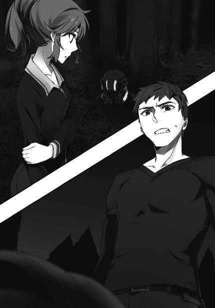
◇ ◇ ◇
エリカはしばらくの間、荒く息をつき立ち尽くしていた。
結果的には完勝だが、リンダ＝ヴァールブルクとの勝負はその実かなり綱渡りなものだった。
決め手となった「山津波」も、本来であれば専用のＣＡＤで補助する部分まで自分で計算して組み立てたのだ。慣性中和と慣性強化を切り替えるタイミングが少しでもずれれば相手にダメージを与えられないか、自分の攻撃を己自身で阻害して相手の反撃を許していただろう。
敵の制圧を確認して気を抜いてしまったのは、無理もないことと思われる。
また、それで実害も無かった。
ようやく呼吸を落ち着かせたエリカが、レオの傍へ歩いていく。彼はまだ地面にへたり込んだままだ。
「レオ、大丈夫？」
レオは精彩を欠く動作で顔を上げた。
「おお、怪我は無いぜ」
口調だけは威勢良かったが、明らかに強がりと分かるものだった。
「ただなぁ」
「どうしたのよ」
エリカが少し本気で心配してしまうほど、レオは弱っていた。
「......腹減った」
エリカはその言葉の意味が、すぐには理解できなかった。
「......はぁ？」
「いや、だからよ......腹減った」
「何それ？ ふざけてるの？」
「いや、マジ。あの魔法を使うとすげえ腹が空くんだよ」
「魔法でお腹が空く？」
そんな魔法は聞いたことがない。少なくとも、エリカは初耳だった。
だが確かに、冗談を言っている様子は無い。レオは今にも飢え死にしそうな顔をしている。
ジークフリートは熱すらも遮断する。ただしそれは外部から来る熱に限ったことで、肉体から放出する熱は遮らない。熱交換の観点から見れば、ジークフリートを発動中の魔法師は厳冬期の極地の寒気に曝されているのと同じだ。この魔法を発動中、術者の細胞は体温を維持する為に全力でエネルギーを生産している。身体に蓄えた栄養分が枯渇するのもある意味当然と言えよう。
「ちょっと待ってなさい！」
エリカは慌てて何か食べ物を調達してこようと考えたが、ホテルの方角へ踏み出しかけた足をすぐに止めた。
一つには、エリカとレオで一人ずつ倒した敵をこの場に放置しておくことはできないという理由。
もう一つは、十人前後の足音がこの場に迫っていたからだった。
エリカは知らないことだが、リンダとエマが二人とも倒されたことでファントム・アンツークのセンサー妨害機能が停止し、基地の警衛隊が駆けつけてきたのである。
「動くな！」
エリカはいきなり怒鳴りつけられ、かつ銃を向けられてムッとした顔で声のした方へ振り向いた。
ここは国防軍の基地内で彼女たちは不法侵入者なのだから、この対応は当然のものだ。だがエリカには、お行儀良く常識や良識に従う意思は無かった。
「ちょうど良かったわ。あんた、あたしの顔は覚えているわよね」
エリカに横柄な口調で話し掛けられた青年士官は一瞬訝しげに眉を顰めた後、「あっ」と声を上げて驚きと焦りの表情を同時に浮かべた。
「エリカお嬢さん......何でこんな所に」
「忘れていなかったようで結構」
エリカは満足げに頷いた後、殊更に偉そうな顔をして見せた。
「学校の同級生が不審者に襲われていたんで、助太刀していたのよ。こんな連中をむざむざ入り込ませるなんて一体どういう警備をしてるの」
リンダとエマにわざとらしい仕草で目を向け、顔を上げて元門下生の瞳を視線で射貫く。
エリカの眼光に居竦まった青年少尉は辛うじて「申し訳ありません！」という不適切な返事を返した。
本当はエリカも不法侵入者なのだが、それに警衛隊員が気づく前にエリカは元門下生の青年士官へ、居丈高な態度を意識しつつ指示を出した。
「とにかく、二人の侵入者を連行して。そのスーツは特殊な機能を持っているみたいだから注意しなさい」
「分かりました。おい」
警衛隊の隊長である青年の指示で、背後に控えていた士卒がリンダとエマの拘束に掛かる。
「それからさっきも言ったようにこいつはあたしの同級生なんだけど、侵入者との戦闘でかなり消耗しているようだから介抱してあげて。栄養のある物を食べさせてあげれば、それで大丈夫だと思うから」
ヴァールブルク姉妹を拘束し終えた隊員が無線で担架を呼ぶ。それを聞いて、エリカは「もう用は無い」とばかり元来た道へ足を向けた。
「あっ、エリカお嬢さん」
「何？」
エリカの声は、あながち演技ばかりではなく、不機嫌なものだった。
「その、お嬢さんにも事情を聞かせてもらえないかと」
「そこの男から聞きなさい。あたしは助太刀しただけだから」
「ですが、その武装デバイスは......」
エリカは面倒臭そうに脇差しを棍棒形態に戻して、元門下生へ放り投げた。
青年少尉は武装デバイスを、お手玉しそうになりながら何とかキャッチする。
「これで良いでしょ」
「いえ、その」
「これで良いでしょ」
「......はい」
道場で修行していた頃、余程しごかれた記憶があるのか、警衛隊の隊長はエリカの一睨みですごすごと引き下がった。
◇ ◇ ◇
ホテルに戻ったエリカはその足でエルンストの部屋へ向かった。
可変型脇差しの武装デバイスとは別に持っていた警棒形態のＣＡＤでボディガードを薙ぎ倒し、無理やり扉を開けさせる。
「君と面会する約束は無いはずだが」
エルンストはエリカを攻撃しようとする室内のボディガードを制止し、両手を挙げながら彼女にそう問い掛けた。
「あんたの兵隊にレオが襲われていたんで、抗議しに来たのよ。本人は今、ぶっ倒れて基地の人のお世話になってるからね」
エルンストが両手を挙げたまま微かに眉を顰めた。
レオの身を案じてのものか、ヴァールブルク姉妹を心配してのものか、事件をもみ消す手間を嘆いてのものか。
エリカにその真意は分からなかったし、また、どうでもよかった。
「それで私にどうしろと？」
エルンストを相手にけりを付けることだけが、今、彼女にとって重要だった。
「へえ、とぼけないんだ」
「私の言葉に耳を貸すつもりは無いのだろう？ ならば事実関係を論じるのは時間の無駄だ」
「ふん。確かに余計な問答は時間の無駄ね」
エリカが警棒を一閃する。
想子の剣風がエルンストに吹きつけ、彼の左胸で起動式崩壊の際に見られる想子のノイズが発生する。
エルンストが後ろによろめき、慌てて下ろした手で身体を支えた。
「完全思考操作型ＣＡＤってやつ？ さすがは日本支社長。最新装備なのね」
今年の一月にローゼンが製品化を発表した完全思考操作型ＣＡＤ。日本ではまだ発売されていない最新モデルだが、このＣＡＤを装備した敵に不意を突かれないよう、エリカはその存在をきちんとリサーチしていた。
「無系統魔法で起動式を破壊したのか......」
「想子を剣に乗せて飛ばしただけなんだけどね。でもさっきの女には通用しなかった。機種が違うのかしら」
「魔法戦闘用のスーツが敵の想子波で機能を阻害されるようでは使い物にならない」
エリカのセリフは半分以上独り言だったが、エルンストは律儀に答えを返した。
そして彼は、もう一度両手を挙げた。
「今度は本当に降参だ。これ以上、君たちの意思に反した勧誘は行わない」
エリカは彼の顔をしばらくじっと見詰め、小さく息をついて視線を和らげた。
「是非そう願いたいものね」
エリカがクルリと踵を返す。
「ああ、少し待ってくれないか」
「......何？」
エリカが嫌そうな顔で振り返る。
「これはあくまで君の自由意思に訴える提案なのだが......フロイライン、ローゼン家の養子になりませんか？ 私が貴女の後見を務めましょう」
何故か口調まで変えたエルンストを、エリカは気持ち悪そうに見返した。
「いきなりどういうつもり？」
「貴女のその天稟はローゼン一族の中でも出色のものです。この国で埋もれさせるのはあまりに惜しい」
「おあいにく様。あたしは埋もれているつもりはないし、ローゼンの人間になるなんて真っ平御免よ」
エリカはエルンストの提案を鼻であしらい、軽快な足取りで部屋を出て行った。
◇ ◇ ◇
八月が終わり、第一高校でも二学期が始まった。
その初日、二年Ｆ組の教室に登校したレオは、腰を落ち着ける間もなくエリカに捕まり中央階段の踊り場に連れて行かれた。中央階段は基本的に職員しか使わないのでこの時間帯は人気が無い。密談には手頃の場所だった。
「レオ、あんたの所にローゼンから変な手紙が来なかった？」
エリカは何の前置きも無しに、いきなり用件を切り出した。
「あ、ああ。あったぜ」
レオは心の準備をする暇が無かったこともあって、動揺を禁じ得なかった。
「もちろん、断ったんでしょうね」
「お、おう。もちろんだぜ」
「......何でそんなに慌ててるの？」
レオは慌てているのではない。手紙の内容を訊かれるのではないかと焦っていたところに違う質問が来て、舌がもつれてしまったのである。
「いや、別に何でもねえよ」
エリカが疑いの眼をレオに向ける。
レオは全力で平静を装った。あの手紙の内容を知られるわけにはいかない。何故ならエルンスト＝ローゼンから送られてきた手紙には「エリカと結婚してローゼンの婿にならないか」という内容がしたためられていたからである。
そんなことがエリカに知られたら、一体どんな暴力行為が待っていることか。
レオは「エリカを好きにして良い」というローゼンの誘惑をキッパリと断っている。拳に懸けて拒絶の意思を示している。
ローゼンがどんなにいかれた手紙を送ってこようと、レオには一切責任が無いことだ。
だがエリカがこのことを知ったら、そんな道理は通用しない、気がする。
「ふーん......」
幸い、エリカからそれ以上の追求は無かった。
「あたしの所にも変な手紙が来たから、もしかしたらと思ったけど。やっぱりね」
どんな手紙だったんだ、と訊きそうになって、レオは危うく口を閉ざした。そんな話題になれば、自分宛の手紙の中身も話さないわけにはいかなくなるではないか。
「とにかく、どんなに甘いこと言われても絶対に頷いちゃダメよ。腹の底で何考えてるか分からないんだから」
「あ、ああ。それくらい弁えているぜ」
どうやらエリカの用事はこれで終わりのようだ。
レオがそう考えて油断した、次の瞬間。
「そういえばさ。例の、ローゼン一味の女が妙なことを言っていたよね。あたしを母体にするとか何とか。どういう意味か分かる？ あんたには説明しているような口振りだったじゃん」
レオの背中に冷や汗が流れた。
それはもう、盛大に。
下手なことは言えない。適当に誤魔化せば追及される。
何と答えるべきなのか。
レオは定期考査でも入学試験でも経験したことが無いくらい、懸命に、必死で考えた。
（ＥＮＤＥ）
あとがき
『魔法科高校の劣等生』二冊目の短編集、如何でしたでしょうか？ 今回は本編から少し遡って、第十三巻『スティープルチェース編』と同時期のエピソードをお送りしました。第十三巻とあわせてお読み頂きますと、よりお楽しみ頂けるかもしれません。......第十三巻から二年もお待たせして申し訳ございません。
『竜神の虜』『ショットガン！』『一人でできるのに』『目立とうミッション』は『電撃文庫MAGAZINE』誌上で発表したものを収録しました。『薔薇の誘惑』は書き下ろしです。ここで少し、それぞれのエピソードについて内容以外の部分を振り返ってみたいと思います。
『竜神の虜』は『電撃文庫MAGAZINE』二〇一五年一月号に発表されたものです。二〇一五年一月号にはパシフィコ横浜で開催されたイベントのレポートも掲載されています。私の作品であんなに盛大なイベントを開催して頂けるのは最初で最後でしょうね......。改めて振り返ると、実に感慨深いです。
このエピソードは『九校戦編』で言及した幹比古の過去を描いたものです。電撃文庫で考えても三年越しで回収されたサイドストーリーということになります。『九校戦編』を書いた時から発表する時機をうかがっていたものですが、中々その機会がありませんでした。『電撃文庫MAGAZINE』で短編連載の誌面を頂戴しなければ、お蔵入りしていたかもしれません。
『ショットガン！』『一人でできるのに』は『電撃文庫MAGAZINE』二〇一五年三月号で発表しました。この二つは『スティープルチェース編』で九校戦の競技の模様があまり描かれていない点を補完する、二〇九六年度九校戦の表側のエピソードになります。
『ショットガン！』は番外編であることを意識して本編のメインキャラ以外を主役に据えています。特に「クーちゃん」はこの短編の為に作ったキャラクターです。その所為か、性格設定が迷走気味でした。
その反動で、『一人でできるのに』の方は本編のレギュラーを主役にしています。そういう意味でも『ショットガン！』と『一人でできるのに』はワンセットのエピソードと言えるかもしれません。カラー扉絵も左右反転で対になる構図でした。
『目立とうミッション』は『電撃文庫MAGAZINE』二〇一五年五月号に掲載したもので、黒羽亜夜子、文弥の双子を主役にしたエピソードです。二〇一五年五月号には第十六巻『四葉継承編』の予告編（のようなもの）も載せて頂きました。
黒羽家姉弟を主役にした話は第八巻『追憶編』で登場させた当時から、いずれ書こうと考えていたものでした。亜夜子＆文弥、エリカ＆レオのエピソードは機会があればまたお届けしたいですね。
『薔薇の誘惑』は書き下ろしです。元々はエリカとレオを主役にしたスピンオフシリーズを書けないかと思って構想を練ったものでした。『スティープルチェース編』に関連した他の四編が無ければ、担当編集さんに「スピンオフシリーズを書かせてもらえませんか」と相談しに行ったかもしれません。
このエピソードでレオが使っている魔法は、電撃文庫未発表の外伝が初出です。「魔法を使うと腹が減る」という設定は結構気に入っています。......おそらく、私のオリジナルというわけではないと思いますが。
この未発表作品も、いずれ手直ししてお届けできればと考えています。
今回もここまでお付き合い頂き、誠にありがとうございました。次の第二十一巻は時間軸を元に戻した上で、少し寄り道をしたエピソードをお届けするつもりです。これまで影が薄かった現三年生組を活躍させられれば良いな、と考えております。
そしていよいよ第二十二巻から『魔法科高校の劣等生』のラストに向けた新展開がスタートする予定です。読者の皆様には是非最後までお付き合い下さいますよう、よろしくお願い致します。
（佐島勤）
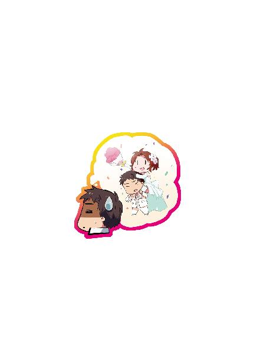
佐島勤
西暦１９ＸＸ年、日本の片田舎に生まれる。和洋のスペースオペラを糧に少年時代を過ごす。青年時代、ファンタジーと伝奇小説に転向。卒業後、企業戦士（ただし雑兵）として現実世界に魂を売り渡すも、西暦２０１１年、遅れてきたジュブナイル作家として空想世界に帰還を果たす。（本プロフィールには虚偽と誇張表現が含まれています）
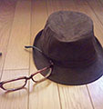
イラスト／石田可奈
西暦１９ＸＸ年生まれ。挿絵は初仕事。本業はアニメーター。アニメ『俺の妹。』の総作画監督を担当。『魔法科高校』ではキャラクターデザイン、総作画監督もつとめた。
SpecialThanks：ジミーストーンさん。
本書に対するご意見、ご感想をお寄せください。
電撃文庫公式ホームページ 読者アンケートフォーム
http://dengekibunko.jp/
※メニューの「読者アンケート」よりお進みください。
ファンレターあて先
〒102-8584 東京都千代田区富士見1-8-19
アスキー・メディアワークス電撃文庫編集部
「佐島 勤先生」係
「石田可奈先生」係
初出
『竜神の虜』------「電撃文庫MAGAZINE Vol.41」（2015年1月号）収録
『ショットガン！』------「電撃文庫MAGAZINE Vol.42」（2015年3月号）収録
『一人でできるのに』------「電撃文庫MAGAZINE Vol.42」（2015年3月号）収録
『目立とうミッション』------「電撃文庫MAGAZINE Vol.43」（2015年5月号）収録
『薔薇の誘惑』------書きおろし
文庫収録にあたり、加筆、訂正しています。
この物語はフィクションです。実在の人物・団体等とは一切関係ありません。

 電撃文庫
電撃文庫
魔法科高校の劣等生SS
佐島勤
発 行 2016年6月10日
発行者 塚田正晃
発行所 株式会社KADOKAWA
〒102-8177 東京都千代田区富士見2-13-3
03-3238-8745（営業）
http://www.kadokawa.co.jp/
プロデュース アスキー・メディアワークス
〒102-8584 東京都千代田区富士見1-8-19
03-5216-8399（編集）
http://dengekibunko.jp/
本書（電子版）に掲載されているコンテンツ（ソフトウェア／プログラム／データ／情報を含む）の著作権およびその他の権利は、すべて株式会社KADOKAWAおよび正当な権利を有する第三者に帰属しています。
法律の定めがある場合または権利者の明示的な承諾がある場合を除き、これらのコンテンツを複製・転載、改変・編集、翻案・翻訳、放送・出版、公衆送信（送信可能化を含む）・再配信、販売・頒布、貸与等に使用することはできません。
(C)2016 TSUTOMU SATO
※2016年5月10日発行の電撃文庫『魔法科高校の劣等生SS』初版に基づき制作